A drug has a concentration of 100 mg/5 ml. What volume contains 75 mg?
A. 15 ml
B. 3.75 ml
C. 1.5 ml
D. 7.5 ml
B. 3.75 ml
Given: 100 mg in 5 ml; want 75 mg. Proportion: 100 mg / 5 ml = 75 mg / x ml x = 75 × 5 / 100 = 3.75 ml (the same value as the 75 mg row of the lecture table below).
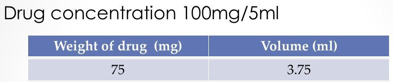
Less drug than 100 mg means less than 5 ml — so the answer must be under 5 ml.
Question 2 of 98
A suspension contains 250 mg/5 ml. What volume contains 125 mg?
A. 0.4 ml
B. 2.5 ml
C. 10 ml
D. 25 ml
B. 2.5 ml
Given: 250 mg in 5 ml; want 125 mg. x = 125 × 5 / 250 = 2.5 ml.
125 mg is half of 250 mg, so you need half of 5 ml.
Question 3 of 98
A syrup contains 120 mg/5 ml. How many mg are in 7.5 ml?
A. 900 mg
B. 80 mg
C. 180 mg
D. 312.5 mg
C. 180 mg
Given: 120 mg in 5 ml; volume 7.5 ml. x = 120 × 7.5 / 5 = 180 mg.
7.5 ml is 1.5 times 5 ml, so the drug is 1.5 times 120 mg.
Question 4 of 98
A car travels at 100 km/hour. How long does it take to travel 150 km?
A. 2.5 hours
B. 0.67 hours
C. 1.5 hours
D. 15 hours
C. 1.5 hours
Given: 100 km in 1 hour; distance 150 km. Time = 150 / 100 = 1.5 hours (the same value as the 150 km row of the lecture table below).
Distance and time rise together at a fixed speed.
Question 5 of 98
A car travels at 60 km/hour. How far does it go in 2.5 hours?
A. 150 km
B. 24 km
C. 600 km
D. 62.5 km
A. 150 km
Given: 60 km in 1 hour; time 2.5 h. Distance = 60 × 2.5 = 150 km.
Each hour adds 60 km: 60 + 60 + 30 = 150.
Question 6 of 98
Upper set: 9, 21, 30, 36. Lower set: 3, 7, 10, 12. What is the ratio of the upper set to the lower set?
A. 3:1
B. 4:1
C. 2:1
D. 1:3
A. 3:1
Each number in the upper set is 3 times (×3) the corresponding number in the lower set: 9 = 3×3, 21 = 7×3, 30 = 10×3, 36 = 12×3. So the ratio is 3:1. In the lecture figure below, the top row is the upper set and the bottom row is the lower set. (Note: the lecture writes "ration 3:1"; it means "ratio".)
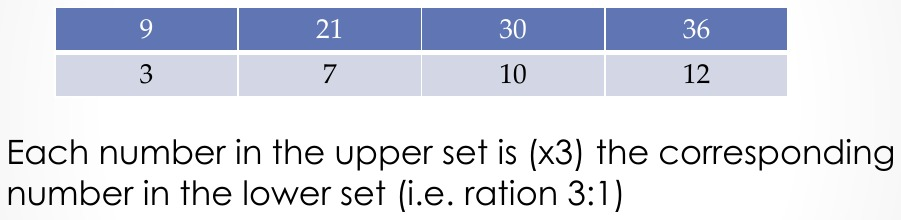
Divide any top number by its bottom number: 9 ÷ 3 = 3, so 3:1.
Question 7 of 98
Upper set: 8, 20, 28. Lower set: 2, 5, 7. What is the ratio of the upper set to the lower set?
A. 2:1
B. 4:1
C. 1:2
D. 1:4
B. 4:1
8 ÷ 2 = 4, 20 ÷ 5 = 4, 28 ÷ 7 = 4 → every pair has ratio 4:1.
Same multiplier in every column = one ratio for the whole set.
Question 8 of 98
Upper set: 2, 5, 7. Lower set: 10, 25, 35. What is the ratio of the upper set to the lower set?
A. 1:3
B. 5:1
C. 2:1
D. 1:5
D. 1:5
10 = 2×5, 25 = 5×5, 35 = 7×5 → upper : lower = 1:5 (1 to 5). In the lecture figure below, the top row (2, 5, 7) is the upper set and the bottom row (10, 25, 35) is the lower set.
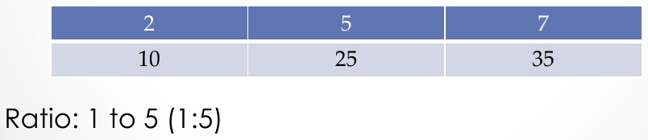
The top number is the smaller one, so the 1 goes first: 1:5.
Question 9 of 98
Upper set: 3, 4, 9. Lower set: 12, 16, 36. What is the ratio of the upper set to the lower set?
Count how many places the decimal point jumps to the right until it sits just after the 5: 5 jumps → −5.
Question 36 of 98
Write 0.0072 in exponential form.
A. 7.2 × 10³
B. 72 × 10⁻³
C. 7.2 × 10⁻³
D. 7.2 × 10⁻²
C. 7.2 × 10⁻³
0.0072 = 7.2 / 1000 = 7.2 × 10⁻³.
Point moves 3 places right to make 7.2 → power −3.
4. Ratio Strength, ppm & Dilution
16 questions
Question 37 of 98
Express 1:2500 as a percentage strength.
A. 0.4%
B. 4%
C. 0.04%
D. 25%
C. 0.04%
1 part / 2500 parts = x parts / 100 parts x = 1 × 100 / 2500 = 0.04%. (Note: the lecture figure below writes "= 0.04" without the % sign; the answer is 0.04%.)
Ratio → percent: ask "how many parts in 100?" — divide 100 by the bigger number.
Question 38 of 98
Express 1:5000 as a percentage strength.
A. 0.2%
B. 50%
C. 0.002%
D. 0.02%
D. 0.02%
1/5000 = x/100 → x = 1 × 100 / 5000 = 0.02%.
The bigger the second number, the weaker the solution.
Question 39 of 98
Express 1:400 as a percentage strength.
A. 0.025%
B. 4%
C. 0.25%
D. 2.5%
C. 0.25%
1/400 = x/100 → x = 100 / 400 = 0.25%.
100 ÷ 400 is a quarter.
Question 40 of 98
Express 0.1% as a ratio strength.
A. 1:100
B. 1:10
C. 1:10,000
D. 1:1000
D. 1:1000
0.1 g / 100 g = 1 part / y parts y = 100 × 1 / 0.1 = 1000 → ratio strength = 1:1000.
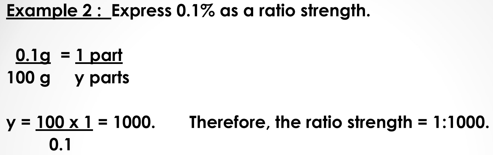
Percent → ratio: divide 100 by the percentage.
Question 41 of 98
Express 0.02% as a ratio strength.
A. 1:500
B. 1:50
C. 1:50,000
D. 1:5000
D. 1:5000
0.02 / 100 = 1 / y → y = 100 / 0.02 = 5000 → 1:5000.
100 ÷ 0.02 = 5000.
Question 42 of 98
Express 0.5% as a ratio strength.
A. 1:50
B. 1:200
C. 1:20
D. 1:2000
B. 1:200
0.5 / 100 = 1 / y → y = 100 / 0.5 = 200 → 1:200.
Half a part per 100 = 1 part per 200.
Question 43 of 98
Express 1 p.p.m. as a percentage strength.
A. 0.00001%
B. 0.01%
C. 0.001%
D. 0.0001%
D. 0.0001%
1 p.p.m. = 1:1,000,000. 1 / 1,000,000 = y / 100 → y = 1 × 100 / 1,000,000 = 0.0001%. (In the lecture figure below, "1000 000" means 1,000,000 and each fraction is written as top number over bottom number.)
0.002% = 0.002 parts per 100. Scale to 1,000,000 (× 10,000): 0.002 × 10,000 = 20 ppm.
1% = 10,000 ppm, so multiply the percent by 10,000.
Question 46 of 98
Express 50 p.p.m. as a percentage strength.
A. 0.0005%
B. 0.5%
C. 0.005%
D. 0.05%
C. 0.005%
50 p.p.m. = 50 parts in 1,000,000 parts. 50 / 1,000,000 = y / 100 y = 50 × 100 / 1,000,000 = 0.005%.
Ask how many parts there are in 100 instead of in a million, so divide by 10,000.
Question 47 of 98
Express a ratio strength of 1:50,000 in parts per million.
A. 2 ppm
B. 20 ppm
C. 200 ppm
D. 50 ppm
B. 20 ppm
1 part in 50,000 parts = x parts in 1,000,000 parts. x = 1 × 1,000,000 / 50,000 = 20 ppm.
Scale the ratio up so the bottom number is one million, and the top number becomes the ppm.
Question 48 of 98
If 10 litres of a 5% solution are diluted to 40 litres, what is the percentage strength of the dilution?
A. 1.25%
B. 20%
C. 0.8%
D. 2%
A. 1.25%
C₁V₁ = C₂V₂ → 5% × 10 L = C₂ × 40 L C₂ = 50 / 40 = 1.25%. (Or as a proportion: x = 10 × 5 / 40 = 1.25%.) The lecture figure below shows both methods: the proportion on the left and c1v1 = c2v2 (c = concentration, v = volume) in red on the right.
Volume went up 4 times, so strength goes down 4 times: 5 ÷ 4.
Question 49 of 98
500 ml of a 10% solution is diluted to 2000 ml. What is the new percentage strength?
A. 40%
B. 0.25%
C. 4%
D. 2.5%
D. 2.5%
C₁V₁ = C₂V₂ → 10% × 500 ml = C₂ × 2000 ml C₂ = 5000 / 2000 = 2.5%.
4 times the volume → a quarter of the strength.
Question 50 of 98
To what volume must 200 ml of a 20% solution be diluted to make a 5% solution?
A mole is 1000 times bigger than a millimole, so the number gets 1000 times smaller.
Question 56 of 98
Convert 0.003 kg to mcg.
A. 3000 mcg
B. 3,000,000,000 mcg
C. 300,000 mcg
D. 3,000,000 mcg
D. 3,000,000 mcg
kg → g → mg → mcg: three steps down, × 1000 each time. 0.003 kg × 1000 = 3 g 3 g × 1000 = 3000 mg 3000 mg × 1000 = 3,000,000 mcg (3 × 10⁶ mcg). The lecture figure below shows the same ladder for 1 kg; "1000,000" means 1,000,000.
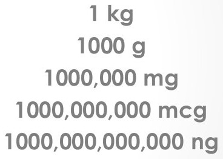
Count the steps from kg down to mcg (3) and multiply by 1000 for each step.
Question 57 of 98
Convert 0.0004 g to ng.
A. 40,000 ng
B. 400 ng
C. 400,000,000 ng
D. 400,000 ng
D. 400,000 ng
g → mg → mcg → ng: three steps down, × 1000 each time. 0.0004 g × 1000 = 0.4 mg 0.4 mg × 1000 = 400 mcg 400 mcg × 1000 = 400,000 ng.
Going to smaller units, the number gets bigger: × 1000 three times.
Question 58 of 98
Convert 350 mmol to mol.
A. 350,000 mol
B. 3.5 mol
C. 0.35 mol
D. 0.035 mol
C. 0.35 mol
mmol → mol is smaller → larger unit: ÷ 1000. 350 mmol ÷ 1000 = 0.35 mol. In the lecture figure below, 1 l = 1000 ml and "Mol?" asks you to apply the same rule to moles: 1 mol = 1000 mmol.
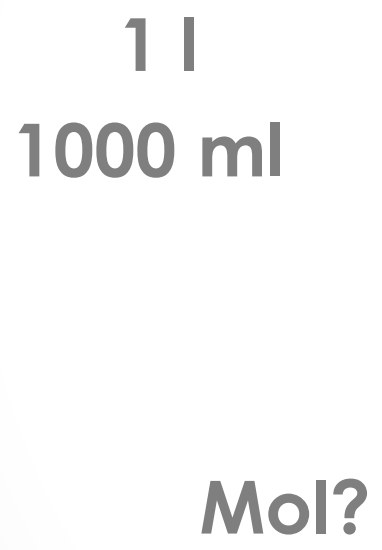
milli works the same for moles as for litres: from mmol to mol, divide by 1000.
6. Unit Conversions
23 questions
Question 59 of 98
0.5 kg = ____ g = ____ mg
A. 50 g = 50,000 mg
B. 500 g = 500,000 mg
C. 500 g = 5000 mg
D. 0.0005 g = 0.0000005 mg
B. 500 g = 500,000 mg
0.5 kg × 1000 = 500 g; 500 g × 1000 = 500,000 mg (two steps). (The lecture writes 500 000 mg with a space.)
kilo means × 1000, so going from kg to g the number gets bigger.
Question 60 of 98
1.5 kg = ____ mg
A. 15,000 mg
B. 1,500,000 mg
C. 0.0015 mg
D. 1500 mg
B. 1,500,000 mg
1.5 kg × 1000 = 1500 g; 1500 g × 1000 = 1,500,000 mg.
Two steps down → × 1000 × 1000.
Question 61 of 98
0.25 g = ____ mg, and this is equal to ____ kg
A. 250 mg = 0.00025 kg
B. 2500 mg = 0.00025 kg
C. 250 mg = 0.25 kg
D. 25 mg = 0.0025 kg
A. 250 mg = 0.00025 kg
0.25 g × 1000 = 250 mg. 0.25 g ÷ 1000 = 0.00025 kg. In the lecture line below, "------" is the blank to fill in, followed by the answers.
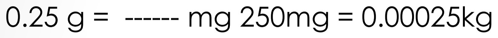
Down to mg → × 1000; up to kg → ÷ 1000.
Question 62 of 98
0.075 g = ____ mg
A. 75 mg
B. 0.000075 mg
C. 7.5 mg
D. 750 mg
A. 75 mg
0.075 g × 1000 = 75 mg.
Move the decimal point 3 places to the right.
Question 63 of 98
2500 mg = ____ g
A. 0.25 g
B. 25 g
C. 2.5 g
D. 2,500,000 g
C. 2.5 g
mg → g is smaller → larger: 2500 ÷ 1000 = 2.5 g.
Bigger unit → smaller number.
Question 64 of 98
0.2 mg = ____ mcg
A. 200 mcg
B. 20 mcg
C. 0.0002 mcg
D. 2000 mcg
A. 200 mcg
0.2 mg × 1000 = 200 mcg. (In the lecture line below, "------" is the blank to fill in.)
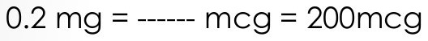
mg → mcg is one step down: × 1000.
Question 65 of 98
0.05 mg = ____ mcg
A. 0.00005 mcg
B. 5 mcg
C. 50 mcg
D. 500 mcg
C. 50 mcg
0.05 mg × 1000 = 50 mcg.
Three places right: 0.050 → 50.
Question 66 of 98
750 mcg = ____ mg
A. 0.75 mg
B. 7.5 mg
C. 0.075 mg
D. 750,000 mg
A. 0.75 mg
mcg → mg is smaller → larger: 750 ÷ 1000 = 0.75 mg.
Three places left: 750 → 0.750.
Question 67 of 98
Convert 0.125 mg to mcg.
A. 1250 mcg
B. 125 mcg
C. 125 ng
D. 12.5 mcg
B. 125 mcg
0.125 mg × 1000 = 125 mcg — the lecture's own example of working in whole numbers.
mg → mcg is one step down: × 1000.
Question 68 of 98
0.4 mg = ____ kg
A. 400 kg
B. 0.0000004 kg
C. 0.0004 kg
D. 0.000004 kg
B. 0.0000004 kg
Two steps up (÷ 1000 each): 0.4 mg ÷ 1000 = 0.0004 g 0.0004 g ÷ 1000 = 0.0000004 kg (= 4 × 10⁻⁷ kg). (In the lecture line below, "------" is the blank, then the two steps.)
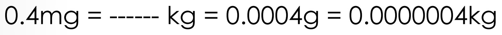
mg → g → kg: going to bigger units twice, so divide twice.
Question 69 of 98
750 mg = ____ kg
A. 0.75 kg
B. 0.00075 kg
C. 750,000 kg
D. 0.0075 kg
B. 0.00075 kg
750 mg ÷ 1000 = 0.75 g; 0.75 g ÷ 1000 = 0.00075 kg.
Two steps up → ÷ 1000 ÷ 1000.
Question 70 of 98
0.5 L = ____ ml
A. 5000 ml
B. 0.0005 ml
C. 500 ml
D. 50 ml
C. 500 ml
0.5 L × 1000 = 500 ml. (In the lecture line below, "------" is the blank to fill in.)
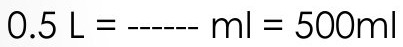
Half a 1-litre bottle = 500 ml.
Question 71 of 98
3.2 L = ____ ml
A. 320 ml
B. 3200 ml
C. 32,000 ml
D. 0.0032 ml
B. 3200 ml
3.2 L × 1000 = 3200 ml.
L → ml: × 1000.
Question 72 of 98
4500 ml = ____ L
A. 4,500,000 L
B. 0.45 L
C. 4.5 L
D. 45 L
C. 4.5 L
4500 ml ÷ 1000 = 4.5 L.
ml → L: ÷ 1000.
Question 73 of 98
0.25 mol = ____ mmol
A. 2500 mmol
B. 25 mmol
C. 250 mmol
D. 0.00025 mmol
C. 250 mmol
0.25 mol × 1000 = 250 mmol. (In the lecture line below, "------" is the blank to fill in.)
milli works the same for moles as for grams or litres: × 1000.
Question 74 of 98
0.6 mol = ____ mmol
A. 6000 mmol
B. 60 mmol
C. 0.0006 mmol
D. 600 mmol
D. 600 mmol
0.6 mol × 1000 = 600 mmol.
Larger → smaller unit: × 1000.
Question 75 of 98
A solution contains 1.25 mol of sodium chloride. How many mmol is this?
A. 1250 mmol
B. 12.5 mmol
C. 0.00125 mmol
D. 125 mmol
A. 1250 mmol
1.25 mol × 1000 = 1250 mmol.
Just move the decimal point three places to the right.
Question 76 of 98
Convert 10 inches to cm.
A. 25.4 cm
B. 3.94 cm
C. 254 cm
D. 12.54 cm
A. 25.4 cm
Factor: 1 inch = 2.54 cm. 10 in × 2.54 cm/in = 25.4 cm. (The slide only says "Convert inch to cm" with no numbers; this uses the standard factor 1 inch = 2.54 cm.)
Centimetres are smaller than inches, so the number of cm must be bigger: multiply by 2.54.
Question 77 of 98
A patient is 64 inches tall. What is the height in cm?
A. 25.2 cm
B. 162.56 cm
C. 64.254 cm
D. 1625.6 cm
B. 162.56 cm
Given: 64 in; factor 1 in = 2.54 cm. 64 × 2.54 = 162.56 cm (≈ 162.6 cm).
cm is the smaller unit, so the number must get bigger: multiply.
Question 78 of 98
A child is 120 cm tall. What is the height in inches?
A. 47.24 in
B. 4.72 in
C. 304.8 in
D. 117.46 in
A. 47.24 in
Factor: 1 inch = 2.54 cm, so cm → inches: ÷ 2.54. 120 cm ÷ 2.54 = 47.24 in.
Inches are bigger than centimetres, so the number of inches must be smaller: divide by 2.54.
Question 79 of 98
Convert 22 lb to kg.
A. 48.4 kg
B. 19.8 kg
C. 10 kg
D. 2.2 kg
C. 10 kg
Factor: 1 kg = 2.2 lb, so lb → kg: ÷ 2.2. 22 lb ÷ 2.2 = 10 kg. (The slide only says "Convert pound to kg" with no numbers; this uses the standard factor 1 kg = 2.2 lb.)
A kilogram is heavier than a pound, so the number of kg must be smaller: divide by 2.2.
Question 80 of 98
A patient weighs 176 lb. What is the weight in kg?
A. 387.2 kg
B. 176,000 kg
C. 17.6 kg
D. 80 kg
D. 80 kg
Given: 176 lb; factor 1 kg = 2.2 lb. 176 ÷ 2.2 = 80 kg. (Using 1 lb = 0.4536 kg: 176 × 0.4536 = 79.8 kg ≈ 80 kg.)
The number of kg is always smaller than the number of lb — so divide, don't multiply.
Question 81 of 98
A patient weighs 154 lb. What is the weight in kg?
A. 15.4 kg
B. 154 kg
C. 338.8 kg
D. 70 kg
D. 70 kg
154 ÷ 2.2 = 70 kg (154 × 0.4536 = 69.9 kg ≈ 70 kg).
Multiplying by 2.2 (giving 338.8) is the classic wrong-direction mistake.
7. Dosage Calculations
17 questions
Question 82 of 98
The dose required is 3 mg/kg and the patient weighs 68 kg. What is the total dose?
A. 22.7 mg
B. 71 mg
C. 2040 mg
D. 204 mg
D. 204 mg
Total dose = dose/kg × weight = 3 mg/kg × 68 kg = 204 mg. (Note: the lecture reads "the weighs 68 kg" — the word "patient" is missing — and writes "3 mg/kg = 3 × 68"; it means 3 mg/kg × 68 kg.)
Every kilogram gets 3 mg, so 68 kilograms get 68 × 3.
Question 83 of 98
The dose of a drug is 1.5 mg/kg and the patient weighs 72 kg. What is the total dose?
A. 48 mg
B. 108 mg
C. 73.5 mg
D. 1080 mg
B. 108 mg
Total dose = 1.5 mg/kg × 72 kg = 108 mg.
Dose per kg × kg = total mg.
Question 84 of 98
A drug dose is 100 mg/m² and the patient's body surface area is 1.8 m². What is the total dose?
A. 180 mg
B. 101.8 mg
C. 55.6 mg
D. 18 mg
A. 180 mg
The same rule applies to body surface area: total dose = dose/m² × BSA = 100 mg/m² × 1.8 m² = 180 mg.
Same idea as mg/kg — just replace weight with body surface area.
Question 85 of 98
A child weighing 18 kg is prescribed a drug at 5 mg/kg. What is the total dose?
A. 23 mg
B. 900 mg
C. 90 mg
D. 3.6 mg
C. 90 mg
Total dose = dose/kg × weight = 5 mg/kg × 18 kg = 90 mg.
Each kilogram of the child needs 5 mg, so multiply 5 by the 18 kilograms.
Question 86 of 98
Ibuprofen 1.2 g daily is given 3 times daily. What is each single dose?
A. 400 mg
B. 3600 mg
C. 0.4 mg
D. 40 mg
A. 400 mg
Convert: 1.2 g × 1000 = 1200 mg. Each dose = 1200 mg ÷ 3 = 400 mg.
Share the daily total equally among the doses.
Question 87 of 98
Paracetamol 4 g daily is given in 4 divided doses. What is each single dose?
A. 100 mg
B. 250 mg
C. 1000 mg
D. 16,000 mg
C. 1000 mg
Convert: 4 g = 4000 mg. Each dose = 4000 ÷ 4 = 1000 mg (1 g).
Divide, don't multiply: each dose is smaller than the daily total.
Question 88 of 98
Amoxicillin 1.5 g daily is given 3 times daily. What is each single dose?
A. 50 mg
B. 0.5 mg
C. 500 mg
D. 4500 mg
C. 500 mg
Convert: 1.5 g = 1500 mg. Each dose = 1500 ÷ 3 = 500 mg.
Convert to mg first so the answer is a whole number.
Question 89 of 98
The dose for cefuroxime IV is 2.25 g daily in divided doses every 8 hours. What is each dose?
A. 6.75 g every 8 hours
B. 750 mg every 8 hours
C. 281.25 mg every 8 hours
D. 1125 mg every 8 hours
B. 750 mg every 8 hours
8-hourly = 24 ÷ 8 = 3 divided doses daily. 2.25 g ÷ 3 = 0.75 g = 750 mg every 8 hours.
Dividing by 8 (the hours) instead of 3 (the number of doses) is the common trap — read the wording carefully.
Question 90 of 98
A drug is prescribed 1.8 g daily in divided doses every 4 hours. What is each dose?
A. 300 mg every 4 hours
B. 450 mg every 4 hours
C. 600 mg every 4 hours
D. 7.2 g every 4 hours
A. 300 mg every 4 hours
Convert: 1.8 g × 1000 = 1800 mg. 4-hourly = 24 ÷ 4 = 6 doses daily. Each dose = 1800 mg ÷ 6 = 300 mg every 4 hours.
Turn "every 4 hours" into doses per day (24 ÷ 4 = 6) before you divide; dividing by 4 instead gives the wrong answer of 450 mg.
Question 91 of 98
A drug is prescribed 4 g daily in divided doses every 6 hours. What is each dose?
A. 24 g every 6 hours
B. 1.5 g every 6 hours
C. 1 g every 6 hours
D. 0.67 g every 6 hours
C. 1 g every 6 hours
6-hourly = 24 ÷ 6 = 4 doses daily. 4 g ÷ 4 = 1 g (1000 mg) every 6 hours.
First turn "every X hours" into "how many times a day".
Question 92 of 98
A drug is prescribed 3 g daily in divided doses every 12 hours. What is each dose?
A. 0.25 g every 12 hours
B. 6 g every 12 hours
C. 1 g every 12 hours
D. 1.5 g every 12 hours
D. 1.5 g every 12 hours
12-hourly = 24 ÷ 12 = 2 doses daily. 3 g ÷ 2 = 1.5 g (1500 mg) every 12 hours.
Every 12 hours = twice a day.
Question 93 of 98
You need to prepare an infusion of digoxin containing 0.75 mg. Digoxin is available as 500 mcg/2 ml. How many ml do you need?
A. 0.003 ml
B. 3 ml
C. 1.33 ml
D. 375 ml
B. 3 ml
Convert everything to mcg: 0.75 mg × 1000 = 750 mcg. 500 mcg → 2 ml; 750 mcg → x x = 750 × 2 / 500 = 3 ml. (Amount you want / amount you have × volume.) In the lecture figure below, the red boxes highlight that the two amounts are in different units (mg and mcg), which is why you convert first.
Make the units match first (mg vs mcg); then want ÷ have × volume.
Question 94 of 98
You need 0.25 mg of digoxin. It is available as 500 mcg/2 ml. How many ml do you need?
The tablet weight is the whole (100%); the drug is the part.
Question 21 of 85
How many ml is 40% of 1.3 litre?
A. 52 ml
B. 0.52 ml
C. 520 ml
D. 3250 ml
C. 520 ml
Given: 1.3 L, need 40%, answer in ml. a) Convert L to ml: 1.3 × 1000 = 1300 ml b) 1300 ml = 100% c) Cross multiply: x = 1300 × 40 / 100 = 520 ml.
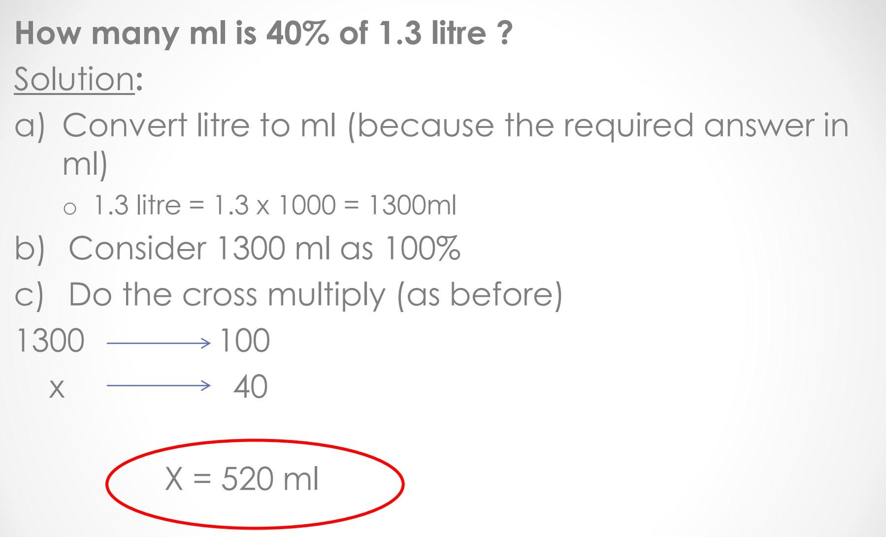
Convert to the unit the question asks for (ml) before you take the percentage.
Question 22 of 85
How many ml is 25% of 2.4 litres?
A. 0.6 ml
B. 9600 ml
C. 60 ml
D. 600 ml
D. 600 ml
Given: 2.4 L, need 25%, answer in ml. 2.4 L × 1000 = 2400 ml 2400/100 × 25 = 600 ml.
Change litres to ml first, then take a quarter.
Question 23 of 85
How many mg is 12% of 1.5 g?
A. 18 mg
B. 12500 mg
C. 180 mg
D. 0.18 mg
C. 180 mg
Given: 1.5 g, need 12%, answer in mg. 1.5 g × 1000 = 1500 mg 1500/100 × 12 = 180 mg.
Convert g to mg first, because the answer is wanted in mg.
Question 24 of 85
What percentage of a 2 litre bag is 250 ml?
A. 800%
B. 12.5%
C. 125%
D. 0.125%
B. 12.5%
Given: whole = 2 L, part = 250 ml. Same units: 2 L = 2000 ml smaller/larger × 100 = 250/2000 × 100 = 12.5%.
Both numbers must be in the same unit before you divide.
Question 25 of 85
60 ml is 15% of a total volume. What is the total volume?
A. 9 ml
B. 4 ml
C. 900 ml
D. 400 ml
D. 400 ml
Given: 60 ml = 15%; find 100%. Cross multiply: 60 → 15, x → 100 x = 60 × 100 / 15 = 400 ml.
Here you know the part and its %, so work back to 100%: the total must be bigger than 60 ml.
3. Ratio Strength
7 questions
Question 26 of 85
5 g of a product contains 250 mg of sulphur in yellow soft paraffin. Express this as a ratio strength.
A. 20 in 1
B. 1 in 0.02
C. 1 in 20
D. 1 in 50
C. 1 in 20
Given: 250 mg sulphur in 5 g product (w/w). Same units first: 250 mg = 0.25 g Cross multiply: 0.25 g → 5 g, 1 g → X X = 1 × 5 / 0.25 = 20 → 1 in 20 (1 g of sulphur in every 20 g of product). (Note: the slide writes only "X = 20"; the ratio strength is 1 in 20.)
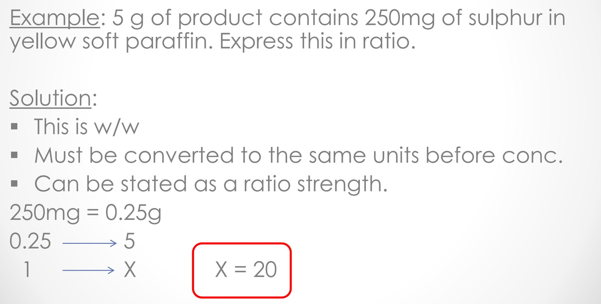
Ratio strength is always "1 in X": ask how many grams of product hold 1 g of drug, after putting both in the same unit.
Question 27 of 85
10 g of an ointment contains 200 mg of salicylic acid. Express this as a ratio strength.
A. 1 in 20
B. 1 in 0.05
C. 50 in 1
D. 1 in 50
D. 1 in 50
Given: 200 mg in 10 g (w/w). 200 mg = 0.2 g 0.2 g → 10 g, 1 g → X X = 10 / 0.2 = 50 → 1 in 50.
Convert mg to g, then divide the product weight by the drug weight.
Question 28 of 85
25 g of a cream contains 125 mg of drug. Express this as a ratio strength.
A. 200 in 1
B. 1 in 200
C. 1 in 0.2
D. 1 in 5
B. 1 in 200
Given: 125 mg in 25 g (w/w). 125 mg = 0.125 g X = 25 / 0.125 = 200 → 1 in 200.
Same units first; then "1 in X" where X = total ÷ drug.
Question 29 of 85
Express a ratio strength of 1 in 20 as a percentage.
A. 5%
B. 0.05%
C. 20%
D. 0.5%
A. 5%
Given: 1 in 20 (1 g in 20 g). Percentage = 1/20 × 100 = 5%.
A ratio is just a fraction — multiply it by 100 to get a percentage.
Question 30 of 85
Express 0.2% w/v as a ratio strength.
A. 1 in 500
B. 1 in 200
C. 1 in 50
D. 1 in 5000
A. 1 in 500
Given: 0.2% = 0.2 g in 100 ml. 0.2 g → 100 ml, 1 g → X X = 100 / 0.2 = 500 → 1 in 500.
Scale the drug up to 1 g and see what volume that needs.
Question 31 of 85
How many mg of drug are in 30 g of an ointment with a ratio strength of 1 in 200?
A. 6000 mg
B. 150 mg
C. 1.5 mg
D. 15 mg
B. 150 mg
Given: 1 g in 200 g; product = 30 g. Drug = 30 g × 1/200 = 0.15 g 0.15 g × 1000 = 150 mg.
1 in 200 means the drug is 1/200 of the weight — so divide the product weight by 200.
Question 32 of 85
Adrenaline injection is 1 in 1000 w/v. How many mg of adrenaline are in 1 ml?
A. 10 mg
B. 1000 mg
C. 0.1 mg
D. 1 mg
D. 1 mg
Given: 1 in 1000 w/v = 1 g in 1000 ml. 1 g = 1000 mg → 1000 mg in 1000 ml = 1 mg in 1 ml (1 mg/ml).
For w/v, "1 in X" means 1 g in X ml; turn the grams into mg and divide by the volume.
4. Percentage Concentrations (w/v, w/w, v/v)
13 questions
Question 33 of 85
How much dextrose is there in a 500 ml infusion of dextrose 4% w/v?
A. 2 g
B. 125 g
C. 20 g
D. 2000 g
C. 20 g
Given: 4% w/v = 4 g in 100 ml; volume 500 ml. Cross multiply: 4 g → 100 ml, X → 500 ml X = 4 × 500 / 100 = 20 g in 500 ml. Or formula: Percentage/100 × Number = 4/100 × 500 = 20 g.
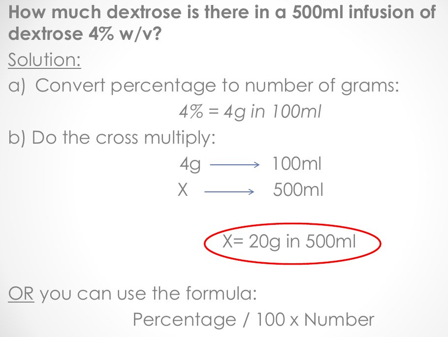
w/v % tells you grams in every 100 ml; 500 ml is five lots of 100 ml.
Question 34 of 85
How much glucose is there in a 1 litre infusion of glucose 5% w/v?
A. 50 g
B. 5 g
C. 0.05 g
D. 500 g
A. 50 g
Given: 5% w/v = 5 g in 100 ml; volume 1 L = 1000 ml. X = 5/100 × 1000 = 50 g.
1 litre is ten lots of 100 ml, so ten times 5 g.
Question 35 of 85
How much dextrose is there in a 250 ml bag of dextrose 10% w/v?
A. 2.5 g
B. 2500 g
C. 40 g
D. 25 g
D. 25 g
Given: 10% w/v = 10 g in 100 ml; volume 250 ml. X = 10/100 × 250 = 25 g.
Percentage/100 × volume gives the grams.
Question 36 of 85
You have salbutamol nebuliser solution 0.3%. What volume is required for a 4 mg dose?
A. 1333.3 ml
B. 0.75 ml
C. 13.3 ml
D. 1.33 ml
D. 1.33 ml
Given: 0.3% = 0.3 g in 100 ml; dose 4 mg. a) Convert to mg: 0.3 g × 1000 = 300 mg in 100 ml b) Cross multiply: 300 mg → 100 ml, 4 mg → x x = 4 × 100 / 300 = 1.33 ml. Formula: amount you want/amount you got × volume = 4/300 × 100 = 1.33 ml.
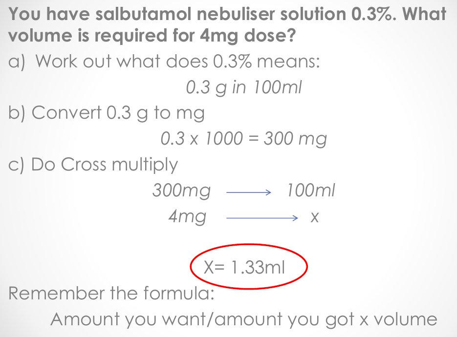
Turn the % into mg per 100 ml first, then use want ÷ got × volume.
Question 37 of 85
You have salbutamol nebuliser solution 0.5%. What volume is required for a 2.5 mg dose?
A. 5 ml
B. 500 ml
C. 0.05 ml
D. 0.5 ml
D. 0.5 ml
Given: 0.5% = 0.5 g in 100 ml = 500 mg in 100 ml; dose 2.5 mg. Volume = want/got × volume = 2.5/500 × 100 = 0.5 ml.
Get the dose and the strength into the same unit (mg) before dividing.
Question 38 of 85
Lidocaine injection is 2% w/v. What volume contains 60 mg of lidocaine?
A. 3000 ml
B. 3 ml
C. 0.3 ml
D. 30 ml
B. 3 ml
Given: 2% = 2 g in 100 ml = 2000 mg in 100 ml; want 60 mg. Volume = 60/2000 × 100 = 3 ml.
2% is 20 mg in each ml, so 60 mg needs 3 ml.
Question 39 of 85
Potassium chloride injection is 15% w/v. What volume contains 1.5 g of potassium chloride?
A. 100 ml
B. 1 ml
C. 10 ml
D. 22.5 ml
C. 10 ml
Given: 15% = 15 g in 100 ml; want 1.5 g. Volume = amount you want/amount you got × volume = 1.5/15 × 100 = 10 ml.
Use want ÷ got × volume — here the units are already the same (g).
Question 40 of 85
A Differin cream tube contains adapalene 0.1% w/w and holds 30 g (see the tube below). How many mg of adapalene are in the tube?
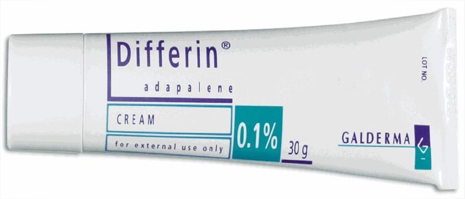
A. 0.03 mg
B. 30 mg
C. 3 mg
D. 300 mg
B. 30 mg
Given: 0.1% w/w = 0.1 g in 100 g; tube = 30 g. Drug = 0.1/100 × 30 = 0.03 g 0.03 g × 1000 = 30 mg.
w/w % means grams of drug in every 100 g of cream; work it out in g, then change to mg.
Question 41 of 85
How many grams of zinc oxide are needed to make 200 g of a 15% w/w ointment?
A. 1333.3 g
B. 3 g
C. 13.3 g
D. 30 g
D. 30 g
Given: 15% w/w = 15 g in 100 g; total 200 g. Zinc oxide = 15/100 × 200 = 30 g.
w/w: grams of drug per 100 g of product — 200 g is two lots of 100 g.
Question 42 of 85
How many ml of ethanol are in 250 ml of 70% v/v ethanol?
A. 357.1 ml
B. 1.75 ml
C. 175 ml
D. 17.5 ml
C. 175 ml
Given: 70% v/v = 70 ml in 100 ml; total 250 ml. Ethanol = 70/100 × 250 = 175 ml.
v/v: ml of liquid in every 100 ml of mixture.
Question 43 of 85
8 g of a drug is dissolved in water to make 200 ml of solution. What is the % w/v?
A. 40% w/v
B. 0.04% w/v
C. 4% w/v
D. 25% w/v
C. 4% w/v
Given: 8 g in 200 ml. % w/v = grams in 100 ml: 8 g → 200 ml, x → 100 ml x = 8 × 100 / 200 = 4 g in 100 ml = 4% w/v.
Find how many grams would be in 100 ml — that number is the %.
Question 44 of 85
15 ml of glycerin is mixed with water to make 300 ml in total. What is the % v/v of glycerin?
A. 5% v/v
B. 50% v/v
C. 20% v/v
D. 0.05% v/v
A. 5% v/v
Given: 15 ml in 300 ml. % v/v = 15/300 × 100 = 5% v/v.
Part ÷ total volume × 100.
Question 45 of 85
750 mg of a drug is dissolved to make 50 ml of solution. What is the % w/v?
A. 1500% w/v
B. 1.5% w/v
C. 15% w/v
D. 0.015% w/v
B. 1.5% w/v
Given: 750 mg in 50 ml. Convert to g: 750 mg = 0.75 g % w/v = 0.75 g/50 ml × 100 = 1.5% w/v.
% w/v uses grams per 100 ml, so change mg to g first.
5. mg/ml Concentrations & Converting % ↔ mg/ml
13 questions
Question 46 of 85
Sodium chloride is 0.9% w/v. What is its strength in mg/ml?
A. 90 mg/ml
B. 0.9 mg/ml
C. 9 mg/ml
D. 0.09 mg/ml
C. 9 mg/ml
Given: 0.9% = 0.9 g in 100 ml. 0.9 g = 900 mg → 900 mg in 100 ml 900/100 = 9 mg in 1 ml (9 mg/ml). Shortcut: % × 10 = mg/ml → 0.9 × 10 = 9 mg/ml.
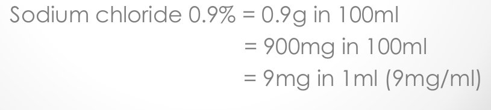
To go from % to mg/ml, just multiply the percentage by 10.
Question 47 of 85
Glucose is 5% w/v. What is its strength in mg/ml?
A. 50 mg/ml
B. 5 mg/ml
C. 0.5 mg/ml
D. 500 mg/ml
A. 50 mg/ml
Given: 5% = 5 g in 100 ml = 5000 mg in 100 ml. 5000/100 = 50 mg/ml. Shortcut: 5 × 10 = 50 mg/ml.
% × 10 = mg/ml.
Question 48 of 85
Bupivacaine injection is 0.25% w/v. What is its strength in mg/ml?
A. 25 mg/ml
B. 0.025 mg/ml
C. 0.25 mg/ml
D. 2.5 mg/ml
D. 2.5 mg/ml
Given: 0.25% = 0.25 g in 100 ml = 250 mg in 100 ml. 250/100 = 2.5 mg/ml. Shortcut: 0.25 × 10 = 2.5 mg/ml.
Multiply the % by 10 to get mg in each ml.
Question 49 of 85
A solution contains 9 mg/ml of sodium chloride. Express this as a percentage (w/v).
A. 0.9%
B. 9%
C. 0.09%
D. 90%
A. 0.9%
Given: 9 mg/ml. Rule: mg/ml → %: divide by 10. 9/10 = 0.9%. Check: 9 mg/ml = 900 mg in 100 ml = 0.9 g in 100 ml = 0.9%.
Going back from mg/ml to %, divide by 10.
Question 50 of 85
A solution contains 20 mg/ml of drug. Express this as a percentage (w/v).
You need to give heparin as a continuous infusion: 13000 units in 35 ml normal saline over 24 hours. You use 1 × 10000 units/ml (1 ml ampoule) plus part of 1 × 5000 units/ml (1 ml ampoule). What volume must you withdraw from the 5000 units/ml ampoule?
A. 0.6 ml
B. 0.3 ml
C. 2.6 ml
D. 1.67 ml
A. 0.6 ml
Given: total dose 13000 units; 1 ml of 10000 units/ml gives 10000 units. Remaining: 13000 − 10000 = 3000 units from the 5000 units/ml ampoule. Volume = want/got × volume = 3000/5000 × 1 ml = 0.6 ml.
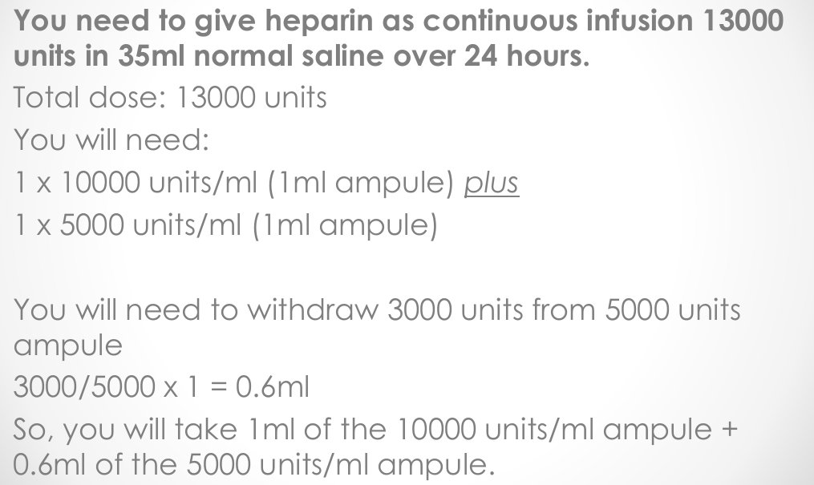
Use the big ampoule whole, then take only the units still missing from the smaller one.
Question 60 of 85
A patient needs 22000 units of heparin. You use one full 1 ml ampoule of 10000 units/ml and take the rest from a 25000 units/ml ampoule. What volume do you withdraw from the 25000 units/ml ampoule?
A. 0.88 ml
B. 1.2 ml
C. 0.48 ml
D. 2.08 ml
C. 0.48 ml
Given: 22000 units; 10000 units from the first ampoule. Remaining: 22000 − 10000 = 12000 units Volume = 12000/25000 × 1 ml = 0.48 ml.
Subtract what the full ampoule gives, then use want ÷ got × volume for the rest.
Question 61 of 85
A patient needs 8000 units of heparin. You use one full 1 ml ampoule of 5000 units/ml and take the rest from a 10000 units/ml ampoule. What volume do you withdraw from the 10000 units/ml ampoule?
A. 0.3 ml
B. 3.33 ml
C. 0.8 ml
D. 0.6 ml
A. 0.3 ml
Given: 8000 units; 5000 units from the first ampoule. Remaining: 8000 − 5000 = 3000 units Volume = 3000/10000 × 1 ml = 0.3 ml.
Divide the missing units by the strength of the ampoule you take them from.
Question 62 of 85
A 13000 units heparin dose is made up using only heparin 5000 units/ml. What volume is needed?
A. 1.3 ml
B. 2.6 ml
C. 0.38 ml
D. 2 ml
B. 2.6 ml
Given: want 13000 units; have 5000 units in 1 ml. Volume = 13000/5000 × 1 ml = 2.6 ml.
With one strength only, want ÷ got × volume gives the whole answer.
Question 63 of 85
For the same heparin infusion (13000 units, using a full 1 ml ampoule of 10000 units/ml plus part of a 5000 units/ml ampoule), what total volume of heparin do you draw up?
A. 2.6 ml
B. 2 ml
C. 1.3 ml
D. 1.6 ml
D. 1.6 ml
Given: 1 ml of 10000 units/ml = 10000 units; 3000 units still needed. From 5000 units/ml: 3000/5000 × 1 = 0.6 ml Total = 1 ml + 0.6 ml = 1.6 ml.
Add the full ampoule volume to the part-ampoule volume.
Question 64 of 85
For a 22000 units heparin dose made from one full 1 ml ampoule of 10000 units/ml plus 12000 units from a 25000 units/ml ampoule, what total volume of heparin is drawn up?
A. 0.88 ml
B. 1.48 ml
C. 2.2 ml
D. 2 ml
B. 1.48 ml
Given: 1 ml (10000 units) + 12000 units from 25000 units/ml. 12000/25000 × 1 = 0.48 ml Total = 1 + 0.48 = 1.48 ml.
Total volume = full ampoule + the part you withdrew.
Question 65 of 85
Heparin is available as 25000 units/ml. What volume gives a 5000 units dose?
A. 0.2 ml
B. 5 ml
C. 0.02 ml
D. 2 ml
A. 0.2 ml
Given: 25000 units in 1 ml; want 5000 units. Volume = 5000/25000 × 1 = 0.2 ml.
A strong ampoule means a small volume.
Question 66 of 85
Heparin is available as 1000 units/ml. What volume gives a 750 units dose?
A. 1.33 ml
B. 0.075 ml
C. 7.5 ml
D. 0.75 ml
D. 0.75 ml
Given: 1000 units in 1 ml; want 750 units. Volume = 750/1000 × 1 = 0.75 ml.
Less than 1000 units means less than 1 ml.
Question 67 of 85
A heparin infusion of 13000 units is given evenly over 24 hours. How many units are given per hour?
A. 541.7 units/hour
B. 312000 units/hour
C. 371.4 units/hour
D. 0.0018 units/hour
A. 541.7 units/hour
Given: 13000 units over 24 hours. Rate = total units/time = 13000/24 = 541.7 units/hour.
Spread the total dose over the hours — divide by 24.
Question 68 of 85
Insulin is supplied as 100 units per ml in 10 ml vials. How many units are in one vial?
Insulin is 100 units/ml. What volume contains a 24 units dose?
A. 4.17 ml
B. 0.024 ml
C. 2.4 ml
D. 0.24 ml
D. 0.24 ml
Given: 100 units in 1 ml; want 24 units. Volume = 24/100 × 1 = 0.24 ml. (The lecture notes that pens and cartridges are pre-calibrated at 100 units/ml, so no calculation is needed in practice.)
With 100 units/ml, just divide the units by 100.
7. Practice Calculations
16 questions
Question 70 of 85
How many grams of sodium chloride are there in a one litre infusion of sodium chloride 0.9%?
A. 0.009 g
B. 90 g
C. 9 g
D. 0.9 g
C. 9 g
Given: 0.9% w/v = 0.9 g in 100 ml; volume 1 L = 1000 ml. Formula: Percentage/100 × Number = 0.9/100 × 1000 = 9 g. (Not solved in the lecture.)
Change litres to ml, then use % ÷ 100 × volume.
Question 71 of 85
How many grams of sodium chloride are there in a 500 ml infusion of sodium chloride 0.45%?
A. 22.5 g
B. 225 g
C. 2.25 g
D. 0.225 g
C. 2.25 g
Given: 0.45% = 0.45 g in 100 ml; volume 500 ml. 0.45/100 × 500 = 2.25 g.
Five lots of 100 ml, each with 0.45 g.
Question 72 of 85
How many grams of glucose are there in 1.5 litres of glucose 5% w/v?
A. 7.5 g
B. 0.075 g
C. 75 g
D. 750 g
C. 75 g
Given: 5% = 5 g in 100 ml; volume 1.5 L = 1500 ml. 5/100 × 1500 = 75 g.
Convert L to ml before applying the %.
Question 73 of 85
You need to give an infusion of calcium gluconate 3 g. You have 10 ml ampoules of calcium gluconate 10%. How much do you need to withdraw?
A. 3 ml
B. 30 ml
C. 0.3 ml
D. 300 ml
B. 30 ml
Given: 10% w/v = 10 g in 100 ml; want 3 g. Volume = amount you want/amount you got × volume = 3/10 × 100 = 30 ml (= 3 full 10 ml ampoules). (Not solved in the lecture.)
Each 10 ml ampoule of 10% holds 1 g, so 3 g needs three ampoules.
Question 74 of 85
You need 4 g of magnesium sulphate. You have 10 ml ampoules of magnesium sulphate 50% w/v. What volume do you withdraw?
A. 0.8 ml
B. 12.5 ml
C. 80 ml
D. 8 ml
D. 8 ml
Given: 50% = 50 g in 100 ml; want 4 g. Volume = 4/50 × 100 = 8 ml (less than one ampoule).
want ÷ got × 100 ml, using the % as grams in 100 ml.
Question 75 of 85
You need 2 g of potassium chloride. You have 10 ml ampoules of potassium chloride 15% w/v. What volume do you withdraw?
A. 133.3 ml
B. 7.5 ml
C. 13.3 ml
D. 1.33 ml
C. 13.3 ml
Given: 15% = 15 g in 100 ml; want 2 g. Volume = 2/15 × 100 = 13.3 ml (one full ampoule + 3.3 ml of a second).
Each 10 ml ampoule holds 1.5 g, so 2 g needs a bit more than one ampoule.
Question 76 of 85
You need 2.25 g of calcium gluconate. You have 10 ml ampoules of calcium gluconate 10%. What volume do you withdraw?
A. 4.44 ml
B. 2.25 ml
C. 22.5 ml
D. 225 ml
C. 22.5 ml
Given: 10% = 10 g in 100 ml; want 2.25 g. Volume = 2.25/10 × 100 = 22.5 ml.
10% means 1 g in every 10 ml, so 2.25 g needs 22.5 ml.
Question 77 of 85
5 g of a solid ingredient is added to 45 g of a base. Express the strength as a percentage.
A. 11.1% w/w
B. 10% w/w
C. 90% w/w
D. 0.1% w/w
B. 10% w/w
Given: 5 g ingredient + 45 g base. Total weight = 5 + 45 = 50 g % w/w = 5/50 × 100 = 10% w/w. (Not solved in the lecture.)
The percentage is out of the total mixture (50 g), not out of the base (45 g).
Question 78 of 85
2 g of drug is added to 98 g of a base. Express the strength as a percentage.
A. 2% w/w
B. 2.04% w/w
C. 98% w/w
D. 0.02% w/w
A. 2% w/w
Given: 2 g + 98 g base → total 100 g. % w/w = 2/100 × 100 = 2% w/w.
Always add drug + base to get the total first.
Question 79 of 85
3 g of drug is added to 57 g of a base. Express the strength as a percentage.
A. 5% w/w
B. 95% w/w
C. 5.26% w/w
D. 0.05% w/w
A. 5% w/w
Given: 3 g + 57 g → total 60 g. % w/w = 3/60 × 100 = 5% w/w.
Divide by the whole mixture (60 g), not just the base.
Question 80 of 85
5 g of a solid ingredient is added to 45 g of a base. Express the strength as a ratio.
A. 1 in 50
B. 1 in 10
C. 10 in 1
D. 1 in 9
B. 1 in 10
Given: 5 g in a total of 5 + 45 = 50 g. 5 g → 50 g, 1 g → X X = 50/5 = 10 → 1 in 10. (Not solved in the lecture.)
Ratio strength is "1 in X" of the whole mixture: total ÷ ingredient.
Question 81 of 85
3 g of drug is added to 57 g of a base. Express the strength as a ratio.
A. 20 in 1
B. 1 in 20
C. 1 in 60
D. 1 in 19
B. 1 in 20
Given: total = 3 + 57 = 60 g. X = 60/3 = 20 → 1 in 20.
Use the total weight; 57 ÷ 3 = 19 forgets the drug itself.
Question 82 of 85
12 g of drug is added to 288 g of a base. Express the strength as a ratio.
A. 25 in 1
B. 1 in 24
C. 1 in 300
D. 1 in 25
D. 1 in 25
Given: total = 12 + 288 = 300 g. X = 300/12 = 25 → 1 in 25.
Total mixture ÷ amount of drug gives X in "1 in X".
Question 83 of 85
5 g of a solid ingredient is added to 45 g of a base. Express the strength as an amount in g/g.
A. 0.11 g/g
B. 0.1 g/g
C. 10 g/g
D. 0.01 g/g
B. 0.1 g/g
Given: 5 g in a total of 50 g. Strength = 5 g/50 g = 0.1 g/g (0.1 g of ingredient in each 1 g of product). (Not solved in the lecture.)
g/g is grams of ingredient in 1 g of the finished product — divide by the total.
Question 84 of 85
12 g of drug is added to 288 g of a base. Express the strength in g/g.
A. 0.4 g/g
B. 25 g/g
C. 0.04 g/g
D. 0.042 g/g
C. 0.04 g/g
Given: total = 12 + 288 = 300 g. Strength = 12/300 = 0.04 g/g.
Divide by the total (300 g); 12/288 uses the base only.
Question 85 of 85
1 g of drug is added to 19 g of a base. Express the strength in g/g.
A. 0.053 g/g
B. 0.5 g/g
C. 0.05 g/g
D. 20 g/g
C. 0.05 g/g
Given: total = 1 + 19 = 20 g. Strength = 1/20 = 0.05 g/g.
g/g is just the w/w % divided by 100 (5% → 0.05 g/g).
Lecture 3Dilutions
89 questions
1. Simple Dilution: Volume of Stock & Diluent
16 questions
Question 1 of 89
You need to prepare 500 ml of a 45% v/v solution. What volume of stock solution (the pure liquid) do you need which, when diluted to 500 ml, will give a 45% solution?
A. 275 ml
B. 1111.1 ml
C. 225 ml
D. 22.5 ml
C. 225 ml
Given: final volume = 500 ml, final strength = 45% v/v. 1. Convert the percentage: 45% v/v = 45 ml in 100 ml. 2. Cross multiply: 45 ml → 100 ml, x → 500 ml x = 45 × 500 / 100 = 225 ml of stock. Formula: amount of stock (ml) = % of final solution/100 × final volume = 45/100 × 500 = 225 ml.
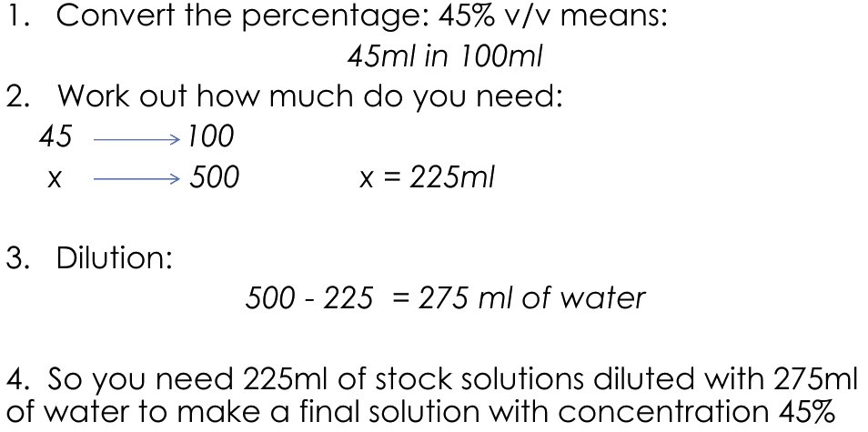
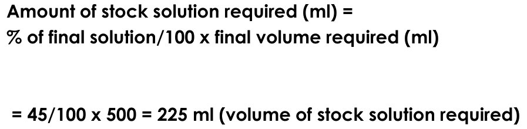
45% means 45 out of every 100 ml is the stock liquid, so 500 ml needs five times 45 ml.
Question 2 of 89
You need to prepare 250 ml of a 30% v/v solution from the pure liquid. What volume of the pure liquid do you need?
A. 75 ml
B. 833.3 ml
C. 7.5 ml
D. 175 ml
A. 75 ml
Given: final volume = 250 ml, 30% v/v. Amount of stock = % final/100 × final volume = 30/100 × 250 ml = 75 ml.
30% of the final volume is the stock liquid; the rest is water.
Question 3 of 89
You need to prepare 2 litres of a 15% v/v solution from the pure liquid. What volume of the pure liquid do you need?
A. 0.3 ml
B. 300 ml
C. 13333.3 ml
D. 1700 ml
B. 300 ml
Given: final volume = 2 L = 2000 ml, 15% v/v. Amount of stock = % final/100 × final volume = 15/100 × 2000 ml = 300 ml.
Change litres to ml first, then take 15% of it.
Question 4 of 89
You prepare 500 ml of a 45% v/v solution using 225 ml of the stock liquid. What volume of water must be added?
A. 225 ml
B. 275 ml
C. 500 ml
D. 725 ml
B. 275 ml
Given: final volume = 500 ml; stock = 225 ml. Dilution: water = final volume − stock volume = 500 − 225 = 275 ml of water. So 225 ml stock + 275 ml water = 500 ml of 45%.
The water is whatever is left after the stock is in: final volume minus stock volume.
Question 5 of 89
You prepare 250 ml of a 30% v/v solution using 75 ml of the pure liquid. What volume of water must be added?
A. 325 ml
B. 250 ml
C. 175 ml
D. 75 ml
C. 175 ml
Given: final volume = 250 ml; stock = 75 ml. Water = 250 − 75 = 175 ml.
Subtract the stock from the final volume — do not add them.
Question 6 of 89
You need 750 ml of a 60% v/v solution made from the pure liquid. What volume of water must be added?
A. 450 ml
B. 750 ml
C. 300 ml
D. 1200 ml
C. 300 ml
Given: final volume = 750 ml, 60% v/v. Stock = 60/100 × 750 = 450 ml Water = 750 − 450 = 300 ml.
First find the stock (60% of 750 ml), then the water is the remainder.
Question 7 of 89
You need to prepare 1 litre of a 20% solution from an 80% stock solution. What volume of the stock solution do you need?
A. 250 ml
B. 200 ml
C. 750 ml
D. 4000 ml
A. 250 ml
Given: final = 1000 ml of 20%; stock = 80%. 1. 20% = 20 ml in 100 ml. 2. Units needed for 1 L: 20 × 1000/100 = 200 ml (of pure ingredient). 3. Stock containing 200 units: 200 × 100/80 = 250 ml. Formula: amount of stock = % final/% stock × final volume = 20/80 × 1000 = 250 ml.
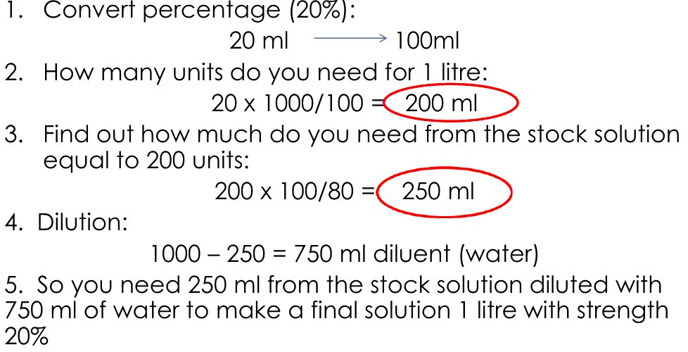
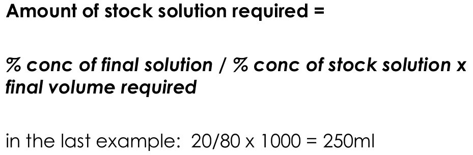
The stock is 4 times stronger than you need (80 vs 20), so you need only a quarter of the final volume from it.
Question 8 of 89
You need to prepare 500 ml of a 10% solution from a 40% stock solution. What volume of the stock do you need?
A. 375 ml
B. 2000 ml
C. 125 ml
D. 50 ml
C. 125 ml
Given: final = 500 ml of 10%; stock = 40%. Amount of stock = % final/% stock × final volume = 10/40 × 500 ml = 125 ml.
Weaker over stronger, times the final volume — the answer must be smaller than 500 ml.
Question 9 of 89
You need to prepare 2 litres of a 5% solution from a 25% stock solution. What volume of the stock do you need?
A. 10000 ml
B. 400 ml
C. 0.4 ml
D. 100 ml
B. 400 ml
Given: final = 2 L = 2000 ml of 5%; stock = 25%. Amount of stock = 5/25 × 2000 ml = 400 ml.
Convert 2 L to 2000 ml, then use final % ÷ stock % × final volume.
Question 10 of 89
You need to prepare 300 ml of a 12% solution from a 90% stock solution. What volume of the stock do you need?
A. 36 ml
B. 260 ml
C. 2250 ml
D. 40 ml
D. 40 ml
Given: final = 300 ml of 12%; stock = 90%. Amount of stock = 12/90 × 300 ml = 40 ml.
Put the smaller (final) percentage on top so that you need less stock than the final volume.
Question 11 of 89
You make 1 litre of a 20% solution using 250 ml of an 80% stock solution. What volume of diluent (water) must be added?
A. 800 ml
B. 1000 ml
C. 250 ml
D. 750 ml
D. 750 ml
Given: final volume = 1000 ml; stock = 250 ml. Dilution: 1000 − 250 = 750 ml diluent (water). So 250 ml stock + 750 ml water = 1 L of 20%.
Subtract the stock volume (250 ml), not the 200 ml of pure ingredient, from the final volume.
Question 12 of 89
You make 500 ml of a 10% solution from a 40% stock solution. What volume of water must be added?
A. 375 ml
B. 500 ml
C. 450 ml
D. 125 ml
A. 375 ml
Given: final = 500 ml of 10%; stock = 40%. Stock = 10/40 × 500 = 125 ml Water = 500 − 125 = 375 ml.
Find the stock volume first; the water is the final volume minus that stock volume.
Question 13 of 89
You make 1.5 litres of a 2% solution from a 50% stock solution. What volume of water must be added?
A. 1470 ml
B. 1500 ml
C. 60 ml
D. 1440 ml
D. 1440 ml
Given: final = 1.5 L = 1500 ml of 2%; stock = 50%. Stock = 2/50 × 1500 = 60 ml Water = 1500 − 60 = 1440 ml.
Stock first (2/50 of 1500 ml), then subtract it from 1500 ml.
Question 14 of 89
150 ml of a 60% v/v solution is diluted with water to 450 ml. What is the final strength?
A. 40% v/v
B. 33.3% v/v
C. 20% v/v
D. 180% v/v
C. 20% v/v
Given: stock volume = 150 ml of 60%; final volume = 450 ml. Rearrange the formula: % final = % stock × stock volume / final volume = 60 × 150 / 450 = 20% v/v.
The volume became 3 times bigger, so the strength becomes 3 times smaller.
Question 15 of 89
How much 95% v/v alcohol is needed to prepare 600 ml of 70% v/v alcohol?
A. 420 ml
B. 157.9 ml
C. 814.3 ml
D. 442.1 ml
D. 442.1 ml
Given: final = 600 ml of 70%; stock = 95%. Amount of stock = % final/% stock × final volume = 70/95 × 600 ml = 442.1 ml. Answer: 442.1 ml (made up to 600 ml with water).
The stock is only a little stronger than the final, so you need most of the final volume from it.
Question 16 of 89
You need to prepare 250 ml of a 2 mg/ml solution from a 50 mg/ml stock solution. What volume of stock do you need?
A. 6250 ml
B. 240 ml
C. 10 ml
D. 0.04 ml
C. 10 ml
Given: final = 250 ml of 2 mg/ml; stock = 50 mg/ml. Amount of stock = final conc/stock conc × final volume = 2/50 × 250 ml = 10 ml (then add 240 ml diluent).
The same formula works with mg/ml as with % — just keep both strengths in the same unit.
2. Final Strength of a Diluted Product
12 questions
Question 17 of 89
300 ml of a 1 in 25 w/v solution is diluted to 800 ml. What is the concentration of the diluted product in %?
A. 4% w/v
B. 0.15% w/v
C. 1.5% w/v
D. 10.67% w/v
C. 1.5% w/v
Given: 300 ml of 1 in 25 (1 g in 25 ml); final volume = 800 ml. 1. Drug in 300 ml: 1 g → 25 ml, x → 300 ml; x = 300/25 = 12 g. 2. The 12 g is now in 800 ml: 12 g → 800 ml, x → 100 ml x = 12 × 100 / 800 = 1.5% w/v.
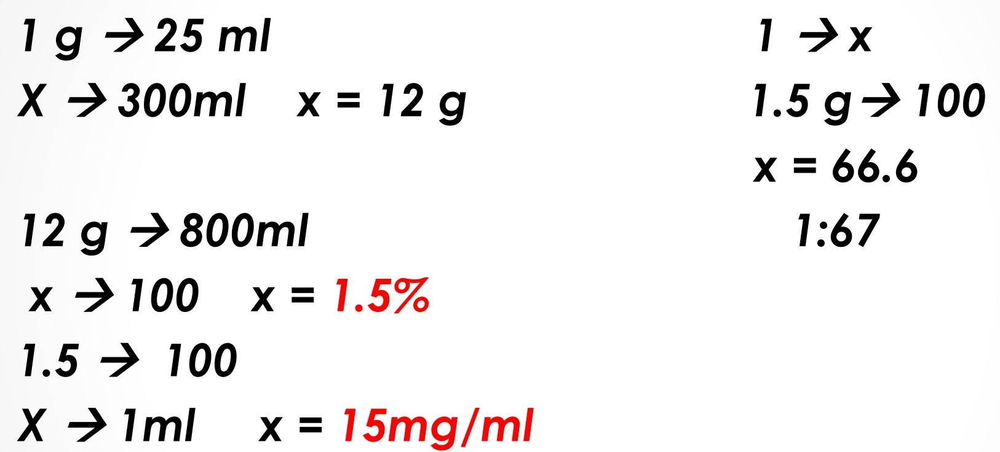
Dilution does not change the amount of drug (12 g); it only spreads it into a bigger volume.
Question 18 of 89
200 ml of a 1 in 20 w/v solution is diluted to 1 litre. What is the concentration of the diluted product in %?
A. 0.1% w/v
B. 25% w/v
C. 1% w/v
D. 5% w/v
C. 1% w/v
Given: 200 ml of 1 in 20; final = 1000 ml. Drug: 200/20 = 10 g. 10 g → 1000 ml, x → 100 ml: x = 10 × 100/1000 = 1% w/v.
Find the grams of drug first, then ask how many grams are in each 100 ml of the new volume.
Question 19 of 89
150 ml of a 1 in 50 w/v solution is diluted to 600 ml. What is the concentration of the diluted product in %?
A. 2% w/v
B. 8% w/v
C. 0.05% w/v
D. 0.5% w/v
D. 0.5% w/v
Given: 150 ml of 1 in 50; final = 600 ml. Drug: 150/50 = 3 g. 3 g → 600 ml, x → 100 ml: x = 3 × 100/600 = 0.5% w/v.
The volume grew 4 times, so 2% (1 in 50) drops to a quarter of that.
Question 20 of 89
300 ml of a 1 in 25 w/v solution is diluted to 800 ml (final strength 1.5% w/v). What is the concentration of the diluted product in mg/ml?
A. 1.5 mg/ml
B. 150 mg/ml
C. 40 mg/ml
D. 15 mg/ml
D. 15 mg/ml
Given: diluted strength = 1.5% w/v = 1.5 g in 100 ml. 1.5 g = 1500 mg → 1500 mg in 100 ml. 1500 mg → 100 ml, x → 1 ml: x = 15 mg/ml. (Shortcut: % × 10 = mg/ml.)
Turn grams into mg and per 100 ml into per 1 ml — overall, multiply the % by 10.
Question 21 of 89
200 ml of a 1 in 20 w/v solution is diluted to 1 litre (final strength 1% w/v). What is the concentration of the diluted product in mg/ml?
A. 10 mg/ml
B. 100 mg/ml
C. 50 mg/ml
D. 1 mg/ml
A. 10 mg/ml
Given: 1% w/v = 1 g in 100 ml = 1000 mg in 100 ml. 1000/100 = 10 mg/ml.
Use the diluted strength, not the original 1 in 20 (which is 50 mg/ml).
Question 22 of 89
150 ml of a 1 in 50 w/v solution is diluted to 600 ml (final strength 0.5% w/v). What is the concentration of the diluted product in mg/ml?
A. 50 mg/ml
B. 5 mg/ml
C. 0.5 mg/ml
D. 20 mg/ml
B. 5 mg/ml
Given: 0.5% w/v = 0.5 g in 100 ml = 500 mg in 100 ml. 500/100 = 5 mg/ml.
% × 10 gives mg/ml.
Question 23 of 89
300 ml of a 1 in 25 w/v solution is diluted to 800 ml (final strength 1.5% w/v). Express the diluted product as a ratio strength.
A. 1 in 6.7
B. 1 in 25
C. 1 in 67
D. 1 in 15
C. 1 in 67
Given: 1.5% w/v = 1.5 g in 100 ml. 1.5 g → 100 ml, 1 g → x x = 100/1.5 = 66.67 → 1 in 67 (approximately). (Note: the slide writes x = 66.6 and "1:67"; 100/1.5 = 66.67, which rounds to 1 in 67.)
Ratio strength asks: how many ml contain 1 g? Divide 100 ml by the grams in 100 ml.
Question 24 of 89
200 ml of a 1 in 20 w/v solution is diluted to 1 litre (final strength 1% w/v). Express the diluted product as a ratio strength.
A. 1 in 1000
B. 1 in 20
C. 1 in 10
D. 1 in 100
D. 1 in 100
Given: 1% = 1 g in 100 ml. 1 g → 100 ml → 1 in 100.
One gram in every 100 ml is already in the "1 in X" form.
Question 25 of 89
100 ml of a 1 in 10 w/v solution is diluted to 2.5 litres. Express the diluted product as a ratio strength.
A. 1 in 2500
B. 1 in 25
C. 1 in 250
D. 1 in 10
C. 1 in 250
Given: 100 ml of 1 in 10; final = 2500 ml. Drug: 100/10 = 10 g in 2500 ml. 10 g → 2500 ml, 1 g → x: x = 2500/10 = 1 in 250 (= 0.4% w/v).
Find the grams of drug, then how many ml of the final volume hold 1 g.
Question 26 of 89
50 ml of a 20% w/v solution is diluted to 400 ml. What is the final strength?
A. 2.5% w/v
B. 160% w/v
C. 12.5% w/v
D. 0.25% w/v
A. 2.5% w/v
Given: 50 ml of 20%; final volume = 400 ml. Drug: 20 g → 100 ml, x → 50 ml; x = 10 g. 10 g → 400 ml, x → 100 ml: x = 10 × 100/400 = 2.5% w/v. (Same as C₁V₁ = C₂V₂: 20 × 50 = C₂ × 400 → C₂ = 2.5%.)
Diluting 8 times (50 → 400 ml) makes the strength 8 times weaker.
Question 27 of 89
25 ml of a 4 mg/ml solution is diluted to 100 ml. What is the final concentration?
A. 0.1 mg/ml
B. 16 mg/ml
C. 1 mg/ml
D. 3 mg/ml
C. 1 mg/ml
Given: 25 ml of 4 mg/ml; final = 100 ml. Drug: 4 × 25 = 100 mg. 100 mg in 100 ml = 1 mg/ml.
The 100 mg of drug stays the same; only the volume changes.
Question 28 of 89
10 ml of a 5% w/v solution is diluted to 250 ml. Express the diluted product as a ratio strength.
A. 1 in 20
B. 1 in 500
C. 1 in 5000
D. 1 in 50
B. 1 in 500
Given: 10 ml of 5% (5 g in 100 ml); final = 250 ml. Drug: 5 × 10/100 = 0.5 g. 0.5 g → 250 ml, 1 g → x: x = 250/0.5 = 1 in 500 (= 0.2% w/v).
Grams of drug first, then scale up to 1 g to find the "in X" number.
3. Stock Solutions in g/L & Ratio Strengths
10 questions
Question 29 of 89
You need to prepare one litre of potassium chloride solution 1 in 10,000. How much potassium chloride does it contain?
A. 10 g
B. 1000 mg
C. 10 mg
D. 100 mg
D. 100 mg
Given: 1 in 10,000 = 1 g in 10,000 ml; final volume = 1000 ml. 1 g → 10,000 ml, x → 1000 ml x = 1 × 1000 / 10,000 = 0.1 g = 100 mg.
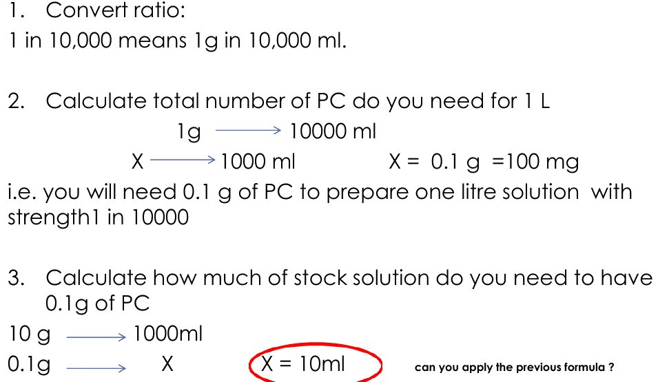
1 litre is one tenth of 10,000 ml, so it holds one tenth of a gram.
Question 30 of 89
You need to prepare 2 litres of a 1 in 5000 solution. How much drug does it contain?
A. 40 mg
B. 2500 mg
C. 0.4 mg
D. 400 mg
D. 400 mg
Given: 1 g in 5000 ml; final = 2000 ml. x = 1 × 2000/5000 = 0.4 g = 400 mg.
Find what fraction of 5000 ml you are making, and take that fraction of 1 g.
Question 31 of 89
You need to prepare 250 ml of a 1 in 2000 solution. How much drug does it contain?
A. 500 mg
B. 12.5 mg
C. 8000 mg
D. 125 mg
D. 125 mg
Given: 1 g in 2000 ml; final = 250 ml. x = 1 × 250/2000 = 0.125 g = 125 mg.
Cross multiply: 1 g → 2000 ml, x → 250 ml.
Question 32 of 89
You need to prepare one litre of potassium chloride solution 1 in 10,000. You have a stock solution of 10 g/L. How much of the stock solution do you need?
A. 100 ml
B. 0.01 ml
C. 990 ml
D. 10 ml
D. 10 ml
Given: KCl needed = 0.1 g (for 1 L of 1 in 10,000); stock = 10 g in 1000 ml. 10 g → 1000 ml, 0.1 g → x x = 0.1 × 1000 / 10 = 10 ml. With the formula: 1 in 10,000 = 0.01%; 10 g/L = 1%; stock = 0.01/1 × 1000 ml = 10 ml.
First find the grams you need, then ask what volume of stock holds those grams.
Question 33 of 89
You need to prepare 2 litres of a 1 in 5000 solution from a stock of 20 g/L. How much of the stock do you need?
A. 20 ml
B. 0.02 ml
C. 50 ml
D. 1980 ml
A. 20 ml
Given: drug needed = 2000/5000 = 0.4 g; stock = 20 g in 1000 ml. 20 g → 1000 ml, 0.4 g → x x = 0.4 × 1000/20 = 20 ml.
Grams needed ÷ grams per ml of stock gives the stock volume.
Question 34 of 89
You need to prepare 250 ml of a 1 in 2000 solution from a 5% w/v stock. How much of the stock do you need?
A. 2.5 ml
B. 25 ml
C. 247.5 ml
D. 0.25 ml
A. 2.5 ml
Given: drug needed = 250/2000 = 0.125 g; stock 5% = 5 g in 100 ml. 5 g → 100 ml, 0.125 g → x x = 0.125 × 100/5 = 2.5 ml.
Convert the ratio to grams needed, then find the stock volume that holds it.
Question 35 of 89
You need to prepare 500 ml of a 1 in 1000 solution from a 1 in 50 stock. How much of the stock do you need?
A. 10000 ml
B. 25 ml
C. 10 ml
D. 475 ml
B. 25 ml
Given: 1 in 1000 = 0.1%; 1 in 50 = 2%; final = 500 ml. Amount of stock = % final/% stock × final volume = 0.1/2 × 500 ml = 25 ml.
Change both ratios to percentages, then use final ÷ stock × volume.
Question 36 of 89
You need to prepare 100 ml of a 0.05% w/v solution from a 1 in 100 stock. How much of the stock do you need?
A. 0.5 ml
B. 5 ml
C. 95 ml
D. 2000 ml
B. 5 ml
Given: final = 100 ml of 0.05%; stock 1 in 100 = 1%. Amount of stock = 0.05/1 × 100 ml = 5 ml.
1 in 100 is 1%, so you need 0.05 of the final volume from it.
Question 37 of 89
You make 500 ml of a 1 in 1000 solution using 25 ml of a 1 in 50 stock. What volume of water must be added?
A. 525 ml
B. 500 ml
C. 25 ml
D. 475 ml
D. 475 ml
Given: final volume = 500 ml; stock = 25 ml. Water = 500 − 25 = 475 ml.
Water = final volume − stock volume.
Question 38 of 89
5 ml of a 10 g/L stock solution is diluted to 250 ml. What is the final concentration in mg/ml?
A. 500 mg/ml
B. 0.02 mg/ml
C. 2 mg/ml
D. 0.2 mg/ml
D. 0.2 mg/ml
Given: 10 g/L = 10,000 mg in 1000 ml = 10 mg/ml; 5 ml taken. Drug: 10 × 5 = 50 mg. 50 mg in 250 ml: 50/250 = 0.2 mg/ml.
g/L is the same number as mg/ml; then spread the 50 mg into 250 ml.
4. Concentrated Waters (1 in 40)
6 questions
Question 39 of 89
Concentrated peppermint water is diluted 1 in 40 to make single-strength peppermint water. What volume of concentrated peppermint water is needed for 200 ml of single-strength peppermint water?
A. 5 ml
B. 8000 ml
C. 5.13 ml
D. 195 ml
A. 5 ml
Given: 1 in 40 = 1 ml of concentrate in 40 ml of final product; final = 200 ml. 1 ml → 40 ml, x → 200 ml x = 200/40 = 5 ml (then 195 ml water).
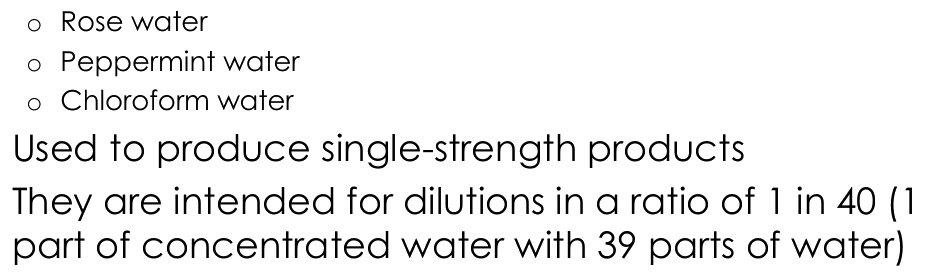
1 in 40 means 1 part in a TOTAL of 40 parts, so divide by 40, not 39.
Question 40 of 89
You prepare 200 ml of single-strength peppermint water from the concentrate (1 in 40). What volume of water is added?
A. 160 ml
B. 5 ml
C. 200 ml
D. 195 ml
D. 195 ml
Given: concentrate = 200/40 = 5 ml. Water = 200 − 5 = 195 ml. Check: 5 : 195 = 1 : 39, i.e. 1 part concentrate with 39 parts water.
Find the concentrate first, then the water is the rest of the 200 ml.
Question 41 of 89
What volume of concentrated chloroform water is needed to prepare 1 litre of single-strength chloroform water (1 in 40)?
A. 40 ml
B. 25.6 ml
C. 25 ml
D. 975 ml
C. 25 ml
Given: 1 in 40; final = 1000 ml. x = 1000/40 = 25 ml (+ 975 ml water).
Total volume ÷ 40 gives the concentrate.
Question 42 of 89
You have 30 ml of concentrated rose water (to be diluted 1 in 40). What volume of single-strength rose water can be made?
A. 0.75 ml
B. 750 ml
C. 1170 ml
D. 1200 ml
D. 1200 ml
Given: 1 ml concentrate → 40 ml single-strength. 30 ml → x: x = 30 × 40 = 1200 ml.
Each ml of concentrate makes 40 ml of the final water.
Question 43 of 89
A 150 ml mixture contains 50% v/v single-strength chloroform water. What volume of concentrated chloroform water (1 in 40) is needed?
A. 73.1 ml
B. 1.92 ml
C. 1.875 ml
D. 3.75 ml
C. 1.875 ml
Given: single-strength chloroform water needed = 50/100 × 150 = 75 ml. Concentrate (1 in 40): 75/40 = 1.875 ml.
First find the single-strength volume (half of 150 ml), then divide it by 40.
Question 44 of 89
You dilute 15 ml of concentrated peppermint water 1 in 40 to make single-strength peppermint water. What volume of water must you add?
A. 585 ml
B. 615 ml
C. 39 ml
D. 600 ml
A. 585 ml
Given: 1 in 40 = 1 ml of concentrate in 40 ml of final product; concentrate = 15 ml. 1. Final volume: 1 ml → 40 ml, 15 ml → x; x = 15 × 40 = 600 ml. 2. Water = 600 − 15 = 585 ml. Check: 15 : 585 = 1 : 39 (1 part concentrate with 39 parts water).
First find the total volume the concentrate makes (× 40), then take away the concentrate itself to get the water.
5. Multiple Dilution & Final Volume
10 questions
Question 45 of 89
What weight of ingredient is required to produce 500 ml of a solution, when 3 ml of it diluted to 40 ml produces a strength of 0.5% w/v?
A. 0.2 g
B. 33.3 g
C. 2.5 g
D. 0.19 g
B. 33.3 g
Given: 3 ml → diluted to 40 ml → 0.5% w/v; concentrate wanted = 500 ml. 1. Drug in the 40 ml: 0.5 g → 100 ml, x → 40 ml; x = 0.5 × 40/100 = 0.2 g. 2. That 0.2 g came from the 3 ml of concentrate. 3. For 500 ml of concentrate: 0.2 g → 3 ml, x → 500 ml x = 0.2 × 500/3 = 33.3 g. (Not solved in the lecture.)
Work backwards: the diluted 40 ml tells you how much drug sits in 3 ml of the concentrate.
Question 46 of 89
What weight of drug is required to make 200 ml of a concentrate, when 5 ml of it diluted to 100 ml gives a 0.2% w/v solution?
A. 0.02 g
B. 0.4 g
C. 0.2 g
D. 8 g
D. 8 g
Given: 5 ml → 100 ml at 0.2%. Drug in 100 ml: 0.2 g (this is in the 5 ml of concentrate). 0.2 g → 5 ml, x → 200 ml: x = 0.2 × 200/5 = 8 g.
The 0.2 g in the diluted 100 ml all came from just 5 ml of concentrate.
Question 47 of 89
What weight of drug is required to make 1 litre of a concentrate, when 10 ml of it diluted to 500 ml gives a 1 in 1000 solution?
A. 0.02 g
B. 1 g
C. 0.5 g
D. 50 g
D. 50 g
Given: 10 ml → 500 ml at 1 in 1000. Drug in 500 ml: 1 g → 1000 ml, x → 500 ml; x = 0.5 g (from 10 ml of concentrate). 0.5 g → 10 ml, x → 1000 ml: x = 0.5 × 1000/10 = 50 g.
Find the drug in the diluted volume, then scale from 10 ml up to 1000 ml of concentrate.
Question 48 of 89
To what volume must 350 ml of a 40% w/v solution be diluted to produce a 12% solution?
A. 116.7 ml
B. 105 ml
C. 1166.7 ml
D. 816.7 ml
C. 1166.7 ml
Given: 350 ml of 40% w/v; final strength 12%. 1. Drug: 40 g → 100 ml, x → 350 ml; x = 140 g. 2. Final volume: 12 g → 100 ml, 140 g → x x = 140 × 100/12 = 1166.7 ml. (Note: the slide writes 1166 ml; 140 × 100/12 = 1166.67 ml ≈ 1167 ml.)
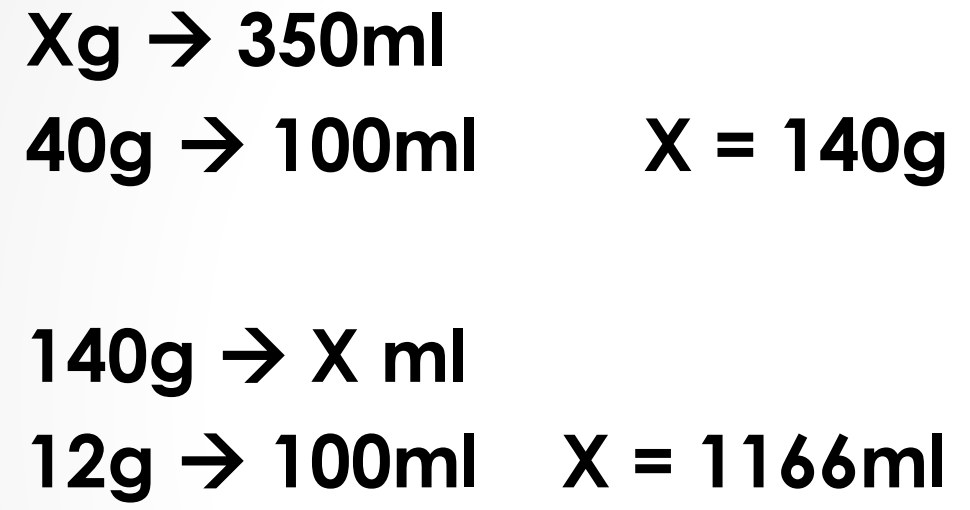
The 140 g of drug stays the same; find the volume in which 140 g gives 12 g per 100 ml.
Question 49 of 89
To what volume must 250 ml of a 25% w/v solution be diluted to produce a 5% solution?
A. 1000 ml
B. 50 ml
C. 125 ml
D. 1250 ml
D. 1250 ml
Given: 250 ml of 25%; final 5%. Drug: 25 × 250/100 = 62.5 g. Final volume: 62.5 × 100/5 = 1250 ml.
Going from 25% to 5% is 5 times weaker, so the volume must be 5 times bigger.
Question 50 of 89
To what volume must 120 ml of a 1 in 20 w/v solution be diluted to produce a 0.5% w/v solution?
A. 1200 ml
B. 120 ml
C. 1080 ml
D. 12 ml
A. 1200 ml
Given: 120 ml of 1 in 20 (1 g in 20 ml); final 0.5%. Drug: 120/20 = 6 g. Final volume: 0.5 g → 100 ml, 6 g → x; x = 6 × 100/0.5 = 1200 ml.
Change the ratio to grams first; then find the volume giving 0.5 g per 100 ml.
Question 51 of 89
200 ml of a 30% w/v solution is diluted to 8% w/v. What volume of water must be added?
A. 53.3 ml
B. 750 ml
C. 550 ml
D. 950 ml
C. 550 ml
Given: 200 ml of 30%; final 8%. Drug: 30 × 200/100 = 60 g. Final volume: 60 × 100/8 = 750 ml. Water added = 750 − 200 = 550 ml.
Find the final volume first; the water added is the final volume minus the starting 200 ml.
Question 52 of 89
10 ml of a 20% w/v solution is diluted to 100 ml. Then 5 ml of this solution is diluted to 50 ml. What is the final strength?
Do one dilution at a time — the first answer becomes the stock for the second step.
Question 53 of 89
1 ml of a 100 mg/ml injection is diluted to 10 ml. Then 2 ml of this is diluted to 20 ml. What is the final concentration?
A. 1 mg/ml
B. 10 mg/ml
C. 5 mg/ml
D. 0.1 mg/ml
A. 1 mg/ml
Step 1: 100 mg in 10 ml = 10 mg/ml. Step 2: 2 ml × 10 mg/ml = 20 mg in 20 ml = 1 mg/ml.
Each step makes it 10 times weaker: 100 → 10 → 1 mg/ml.
Question 54 of 89
3 ml of a concentrate diluted to 40 ml gives a 0.5% w/v solution. What is the strength of the concentrate?
A. 20% w/v
B. 6.67% w/v
C. 0.5% w/v
D. 0.0375% w/v
B. 6.67% w/v
Given: 40 ml of 0.5% contains 0.5 × 40/100 = 0.2 g, all from 3 ml of concentrate. 0.2 g → 3 ml, x → 100 ml: x = 0.2 × 100/3 = 6.67% w/v.
The concentrate must be stronger than the diluted solution — here 40/3 times stronger.
6. Trituration
13 questions
Question 55 of 89
You need to prepare 100 ml of the following formula: hyoscine hydrobromide 500 mcg, water to 5 ml. How much hyoscine hydrobromide is needed?
A. 100 mg
B. 10 mg
C. 0.5 mg
D. 1 mg
B. 10 mg
Given: 500 mcg in 5 ml; final = 100 ml. 500 mcg → 5 ml, x → 100 ml x = 500 × 100/5 = 10,000 mcg = 10 mg.
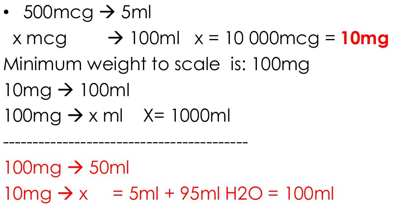
The formula is for 5 ml; 100 ml is 20 times more, so you need 20 × 500 mcg.
Question 56 of 89
You need to prepare 50 ml of the following formula: atropine sulfate 600 mcg, water to 5 ml. How much atropine sulfate is needed?
A. 60 mg
B. 6 mg
C. 30 mg
D. 0.6 mg
B. 6 mg
Given: 600 mcg in 5 ml; final = 50 ml. x = 600 × 50/5 = 6000 mcg = 6 mg.
Scale the 5 ml formula up 10 times, then change mcg to mg.
Question 57 of 89
You need to prepare 150 ml of the following formula: drug Y 250 mcg, water to 5 ml. How much drug Y is needed?
A. 75 mg
B. 7.5 mg
C. 0.75 mg
D. 37.5 mg
B. 7.5 mg
Given: 250 mcg in 5 ml; final = 150 ml. x = 250 × 150/5 = 7500 mcg = 7.5 mg.
150 ml is 30 lots of 5 ml, so 30 × 250 mcg.
Question 58 of 89
For 100 ml of hyoscine hydrobromide 500 mcg/5 ml you need 10 mg of drug, but the minimum weight you can weigh on the scale is 100 mg. If you weighed 100 mg, what volume of the final product (same strength) would it make?
A. 1000 ml
B. 10 ml
C. 10000 ml
D. 100 ml
A. 1000 ml
Given: 10 mg → 100 ml of product; you weigh 100 mg. 10 mg → 100 ml, 100 mg → x x = 100 × 100/10 = 1000 ml. This wastes product, so a trituration (stock solution) is used instead.
Ten times more drug makes ten times more product at the same strength.
Question 59 of 89
For 50 ml of atropine sulfate 600 mcg/5 ml you need 6 mg of drug, but the minimum weighable amount is 100 mg. If you weighed 100 mg, what volume of the final product (same strength) would it make?
Scale up the volume by the same factor as the drug (100/6).
Question 60 of 89
For 150 ml of drug Y 250 mcg/5 ml you need 7.5 mg of drug, but the minimum weighable amount is 100 mg. If you weighed 100 mg, what volume of the final product (same strength) would it make?
To make 100 ml of hyoscine hydrobromide 500 mcg/5 ml you need 10 mg of drug. You dissolve 100 mg (the minimum weighable amount) in water to make 50 ml. What volume of this solution contains 10 mg?
A. 5 ml
B. 10 ml
C. 0.5 ml
D. 500 ml
A. 5 ml
Given: trituration = 100 mg in 50 ml; need 10 mg. 100 mg → 50 ml, 10 mg → x x = 10 × 50/100 = 5 ml.
You need one tenth of the weighed drug, so take one tenth of the 50 ml.
Question 62 of 89
You need 6 mg of a drug. You dissolve 100 mg in water to make 100 ml. What volume of this solution contains 6 mg?
A. 60 ml
B. 16.7 ml
C. 6 ml
D. 0.06 ml
C. 6 ml
Given: 100 mg in 100 ml (1 mg/ml); need 6 mg. x = 6 × 100/100 = 6 ml.
Each ml holds 1 mg, so 6 mg is in 6 ml.
Question 63 of 89
You need 7.5 mg of a drug. You dissolve 100 mg in water to make 20 ml. What volume of this solution contains 7.5 mg?
A. 1.5 ml
B. 37.5 ml
C. 0.15 ml
D. 266.7 ml
A. 1.5 ml
Given: 100 mg in 20 ml; need 7.5 mg. 100 mg → 20 ml, 7.5 mg → x x = 7.5 × 20/100 = 1.5 ml.
Put the amount you need on top: needed ÷ weighed × volume.
Question 64 of 89
You take 5 ml of the hyoscine trituration (100 mg in 50 ml) to make 100 ml of the final product. What volume of water must be added?
A. 95 ml
B. 100 ml
C. 5 ml
D. 45 ml
A. 95 ml
Given: final = 100 ml; trituration taken = 5 ml. Water = 100 − 5 = 95 ml → 5 ml + 95 ml H₂O = 100 ml.
The trituration volume plus the water must add up to the final 100 ml.
Question 65 of 89
You take 6 ml of a trituration and make it up to 50 ml with water. What volume of water is added?
A. 50 ml
B. 56 ml
C. 6 ml
D. 44 ml
D. 44 ml
Given: final = 50 ml; trituration = 6 ml. Water = 50 − 6 = 44 ml.
Final volume minus the volume already added.
Question 66 of 89
You take 1.5 ml of a trituration and make it up to 150 ml with water. What volume of water is added?
A. 151.5 ml
B. 1.5 ml
C. 150 ml
D. 148.5 ml
D. 148.5 ml
Given: final = 150 ml; trituration = 1.5 ml. Water = 150 − 1.5 = 148.5 ml.
"Make up to" means the total is 150 ml, so subtract.
Question 67 of 89
You need to prepare 60 ml of: drug Z 50 mcg, water to 1 ml. The minimum weighable amount is 100 mg, so you dissolve 100 mg in water to make 100 ml. What volume of this trituration do you need?
A. 33.3 ml
B. 3 ml
C. 0.03 ml
D. 30 ml
B. 3 ml
Given: 50 mcg per 1 ml; final = 60 ml. Drug needed = 50 × 60 = 3000 mcg = 3 mg. Trituration: 100 mg in 100 ml = 1 mg/ml. Volume = 3 × 100/100 = 3 ml (+ 57 ml water).
Find the total drug needed, then the volume of trituration that holds it.
7. Powder Calculations
11 questions
Question 68 of 89
You need to prepare seven powders, each containing 80 mg of drug X. Powders must weigh a minimum of 120 mg. How much diluent powder must be added to each powder?
A. 120 mg
B. 40 mg
C. 80 mg
D. 200 mg
B. 40 mg
Given: drug per powder = 80 mg; minimum powder weight = 120 mg. Diluent per powder = 120 − 80 = 40 mg (X1 = 40 mg).
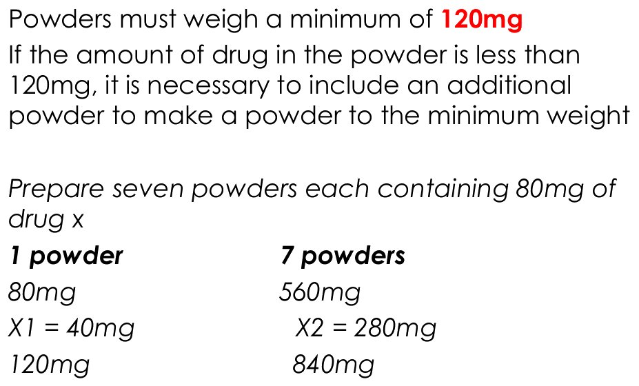
The diluent only tops up the drug to reach 120 mg.
Question 69 of 89
You need to prepare ten powders, each containing 25 mg of drug. Powders must weigh a minimum of 120 mg. How much diluent must be added to each powder?
A. 120 mg
B. 95 mg
C. 25 mg
D. 145 mg
B. 95 mg
Given: drug = 25 mg per powder; minimum 120 mg. Diluent = 120 − 25 = 95 mg.
Subtract the drug from 120 mg.
Question 70 of 89
You need to prepare powders each containing 45 mg of drug. Powders must weigh a minimum of 120 mg. How much diluent must be added to each powder?
A. 165 mg
B. 120 mg
C. 45 mg
D. 75 mg
D. 75 mg
Given: drug = 45 mg per powder; minimum 120 mg. Diluent = 120 − 45 = 75 mg.
Drug + diluent must equal 120 mg.
Question 71 of 89
You need to prepare seven powders, each containing 80 mg of drug X (minimum powder weight 120 mg). What total weight of diluent is needed for all seven powders?
You need to prepare five powders, each containing 0.05 g of drug (minimum powder weight 120 mg). What total weight of diluent is needed?
A. 70 mg
B. 250 mg
C. 350 mg
D. 600 mg
C. 350 mg
Given: 0.05 g = 50 mg per powder. Diluent per powder = 120 − 50 = 70 mg Total = 70 × 5 = 350 mg.
Change grams to mg before you subtract from 120 mg.
Question 74 of 89
You need to prepare seven powders, each containing 80 mg of drug X (minimum powder weight 120 mg). What is the total weight of the mixed powder for all seven powders?
A. 120 mg
B. 840 mg
C. 560 mg
D. 280 mg
B. 840 mg
Given: each powder = 120 mg; 7 powders. Total = 120 × 7 = 840 mg (= 560 mg drug + 280 mg diluent).
Every powder weighs 120 mg, so the total is 120 mg times the number of powders.
Question 75 of 89
You need to prepare twelve powders, each containing 30 mg of drug (minimum powder weight 120 mg). What is the total weight of the mixed powder?
A. 120 mg
B. 360 mg
C. 1440 mg
D. 1080 mg
C. 1440 mg
Given: each powder = 120 mg; 12 powders. Total = 120 × 12 = 1440 mg (= 360 mg drug + 1080 mg diluent).
Total powder = 120 mg × number of powders.
Question 76 of 89
You need to prepare twenty powders, each containing 15 mg of drug (minimum powder weight 120 mg). What is the total weight of the mixed powder?
A. 0.3 g
B. 24 g
C. 2.1 g
D. 2.4 g
D. 2.4 g
Given: each powder = 120 mg; 20 powders. Total = 120 × 20 = 2400 mg = 2.4 g. (Drug 300 mg + diluent 2100 mg.)
Multiply 120 mg by 20, then convert mg to g.
Question 77 of 89
You need to prepare eight powders, each containing 150 mg of drug (minimum powder weight 120 mg). How much diluent must be added to each powder?
A. 240 mg
B. 30 mg
C. 1200 mg
D. 0 mg
D. 0 mg
Given: drug = 150 mg per powder; minimum 120 mg. 150 mg is already more than 120 mg, so no diluent (0 mg) is needed.
Diluent is only added when the drug alone weighs less than 120 mg.
Question 78 of 89
You need to prepare six powders, each containing 500 mcg of drug (minimum powder weight 120 mg). What total weight of diluent is needed?
A. 119.5 mg
B. 3 mg
C. 717 mg
D. 720 mg
C. 717 mg
Given: 500 mcg = 0.5 mg per powder. Diluent per powder = 120 − 0.5 = 119.5 mg Total = 119.5 × 6 = 717 mg.
Change mcg to mg first; then one powder, then × 6.
8. Mixing Concentrations
11 questions
Question 79 of 89
What is the final strength (% v/v) if 200 ml of 40% v/v solution is added to 300 ml of 70% v/v solution?
A. 29% v/v
B. 58% v/v
C. 52% v/v
D. 55% v/v
B. 58% v/v
Given: V1 = 200 ml of 40%; V2 = 300 ml of 70%. Ingredient in V1: 40 ml → 100 ml, x → 200 ml; x = 80 ml. Ingredient in V2: 70 ml → 100 ml, x → 300 ml; x = 210 ml. Total ingredient = 80 + 210 = 290 ml in 200 + 300 = 500 ml. 290 ml → 500 ml, x → 100 ml: x = 58% v/v.
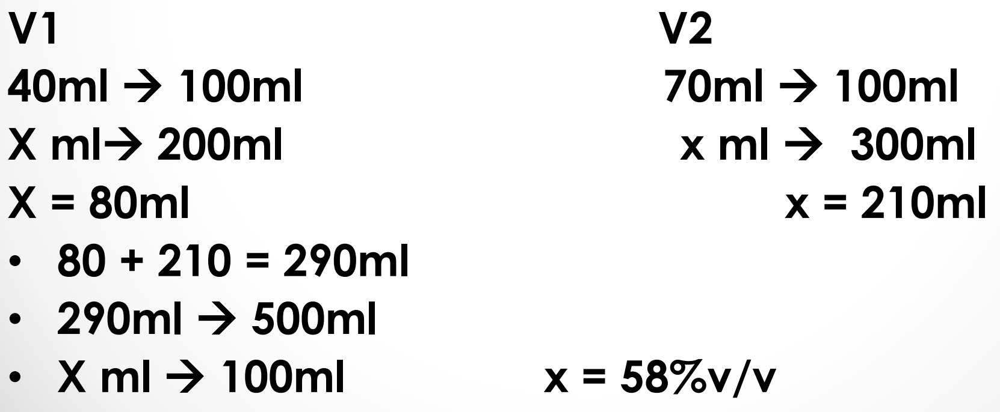
Add up the actual amount of ingredient from each solution, then divide by the total volume — do not just average the percentages.
Question 80 of 89
What is the final strength (% v/v) if 100 ml of 20% v/v solution is added to 400 ml of 50% v/v solution?
A. 22% v/v
B. 44% v/v
C. 35% v/v
D. 26% v/v
B. 44% v/v
Given: 100 ml of 20%; 400 ml of 50%. Ingredient: 20 × 100/100 = 20 ml; 50 × 400/100 = 200 ml. Total = 220 ml in 500 ml. 220 × 100/500 = 44% v/v.
The larger volume (50%) pulls the answer closer to 50%.
Question 81 of 89
What is the final strength (% w/v) if 250 ml of 5% w/v solution is mixed with 750 ml of 1% w/v solution?
A. 3% w/v
B. 20% w/v
C. 4% w/v
D. 2% w/v
D. 2% w/v
Given: 250 ml of 5%; 750 ml of 1%. Drug: 5 × 250/100 = 12.5 g; 1 × 750/100 = 7.5 g. Total = 20 g in 1000 ml. 20 × 100/1000 = 2% w/v.
Grams from each solution, added together, over the total volume.
Question 82 of 89
What is the final strength (% v/v) if 100 ml of 10%, 200 ml of 20% and 200 ml of 40% v/v solutions are mixed?
A. 13% v/v
B. 130% v/v
C. 23.3% v/v
D. 26% v/v
D. 26% v/v
Given: three solutions, total volume 500 ml. Ingredient: 10 ml + 40 ml + 80 ml = 130 ml. 130 × 100/500 = 26% v/v.
The same method works for any number of solutions: total ingredient ÷ total volume × 100.
Question 83 of 89
What proportion of 60% v/v solution and 10% v/v solution would produce 500 ml of a 40% v/v solution mixture?
A. 200 ml of 60% and 300 ml of 10%
B. 187.5 ml of 60% and 312.5 ml of 10%
C. 300 ml of 60% and 200 ml of 10%
D. 250 ml of 60% and 250 ml of 10%
C. 300 ml of 60% and 200 ml of 10%
Given: C1 = 60, C2 = 10, C3 = 40; total = 500 ml. Formula: V1/V2 = (C3 − C2)/(C1 − C3) = (40 − 10)/(60 − 40) = 30/20 = 3/2 V1 = 3/5 × 500 = 300 ml of 60% V2 = 2/5 × 500 = 200 ml of 10% Check: 0.6 × 300 + 0.1 × 200 = 200 ml in 500 ml = 40%. (Note: the slide writes V1/V2 = C3- C2/C1-C3 without brackets; it means (C3 − C2)/(C1 − C3).)
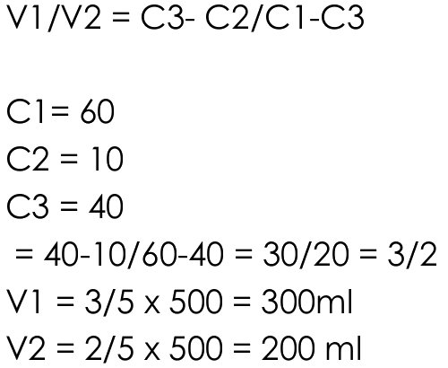
40% is closer to 60% than to 10%, so you need more of the 60% solution.
Question 84 of 89
What proportion of 70% v/v and 20% v/v solutions would produce 1 litre of a 30% v/v mixture?
A. 800 ml of 70% and 200 ml of 20%
B. 166.7 ml of 70% and 833.3 ml of 20%
C. 500 ml of 70% and 500 ml of 20%
D. 200 ml of 70% and 800 ml of 20%
D. 200 ml of 70% and 800 ml of 20%
Given: C1 = 70, C2 = 20, C3 = 30; total = 1000 ml. V1/V2 = (30 − 20)/(70 − 30) = 10/40 = 1/4 V1 = 1/5 × 1000 = 200 ml of 70%; V2 = 4/5 × 1000 = 800 ml of 20%. Check: 140 + 160 = 300 ml in 1000 ml = 30%.
30% is close to 20%, so most of the mixture is the 20% solution.
Question 85 of 89
What proportion of 95% v/v and 50% v/v alcohol would produce 900 ml of 80% v/v alcohol?
A. 360 ml of 95% and 540 ml of 50%
B. 450 ml of 95% and 450 ml of 50%
C. 600 ml of 95% and 300 ml of 50%
D. 300 ml of 95% and 600 ml of 50%
C. 600 ml of 95% and 300 ml of 50%
Given: C1 = 95, C2 = 50, C3 = 80; total = 900 ml. V1/V2 = (80 − 50)/(95 − 80) = 30/15 = 2/1 V1 = 2/3 × 900 = 600 ml of 95%; V2 = 1/3 × 900 = 300 ml of 50%. Check: 570 + 150 = 720 ml in 900 ml = 80%.
Use (C3 − C2)/(C1 − C3) and then share the total volume in that ratio.
Question 86 of 89
What volume of 5% w/v dextrose must be added to 500 ml of 50% w/v dextrose to produce a 10% w/v solution?
A. 500 ml
B. 4500 ml
C. 62.5 ml
D. 4000 ml
D. 4000 ml
Given: C1 = 50 (V1 = 500 ml), C2 = 5, C3 = 10. V1/V2 = (C3 − C2)/(C1 − C3) = (10 − 5)/(50 − 10) = 5/40 = 1/8 V2 = 8 × 500 = 4000 ml of 5%. Check: 250 g + 200 g = 450 g in 4500 ml = 10%.
10% is very close to 5%, so you need a lot of the 5% solution.
Question 87 of 89
In what ratio must a 15% w/w cream and a 3% w/w cream be mixed to give a 6% w/w cream?
A. 1 part 15% : 1 part 3%
B. 3 parts 15% : 1 part 3%
C. 1 part 15% : 4 parts 3%
D. 1 part 15% : 3 parts 3%
D. 1 part 15% : 3 parts 3%
Given: C1 = 15, C2 = 3, C3 = 6. V1/V2 = (6 − 3)/(15 − 6) = 3/9 = 1/3 → 1 part of 15% to 3 parts of 3%. Check: (15 + 9)/4 = 6%.
The target 6% is nearer to 3%, so more parts of the 3% cream are needed.
Question 88 of 89
200 ml of 40% v/v solution is mixed with 300 ml of 70% v/v solution, and the mixture is then diluted with 500 ml of water. What is the final strength?
A. 27.5% v/v
B. 29% v/v
C. 14.5% v/v
D. 58% v/v
B. 29% v/v
Given: ingredient = 80 ml + 210 ml = 290 ml. Final volume = 200 + 300 + 500 = 1000 ml. 290 × 100/1000 = 29% v/v.
Mix first (290 ml of ingredient), then the water only adds volume, not ingredient.
Question 89 of 89
100 ml of a 10 mg/ml solution is mixed with 400 ml of a 2.5 mg/ml solution. What is the final concentration?
A. 8.5 mg/ml
B. 12.5 mg/ml
C. 4 mg/ml
D. 6.25 mg/ml
C. 4 mg/ml
Given: 100 ml × 10 mg/ml = 1000 mg; 400 ml × 2.5 mg/ml = 1000 mg. Total = 2000 mg in 500 ml. 2000/500 = 4 mg/ml.
Total mg ÷ total ml — the plain average (6.25) ignores the different volumes.
Lecture 4Moles
80 questions
1. Moles, Atoms and Molar Mass
27 questions
Question 1 of 80
How many moles are there in 24 g of carbon? (C = 12)
A. 2 moles
B. 0.5 moles
C. 288 moles
D. 24 moles
A. 2 moles
Given: mass = 24 g; relative atomic mass of C = 12, so 1 mole of carbon = 12 g. Formula: moles = mass (g) / atomic mass (g per mole) = 24 g / 12 g = 2 moles.
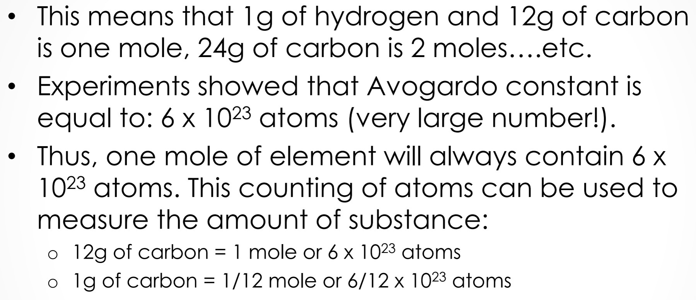
One mole of carbon weighs 12 g, so ask how many 12 g portions fit into 24 g.
Question 2 of 80
How many moles are there in 60 g of calcium? (Ca = 40)
A. 1.5 moles
B. 15 moles
C. 2400 moles
D. 0.67 moles
A. 1.5 moles
Given: mass = 60 g; 1 mole of Ca = 40 g. moles = mass / atomic mass = 60 g / 40 g = 1.5 moles.
Divide the mass by the mass of one mole — never the other way round.
Question 3 of 80
How many moles are there in 69 g of sodium? (Na = 23)
A. 3 moles
B. 0.33 moles
C. 1587 moles
D. 0.003 moles
A. 3 moles
Given: mass = 69 g; 1 mole of Na = 23 g. moles = 69 g / 23 g = 3 moles.
69 g holds three 23 g portions, so it is three moles.
Question 4 of 80
How many moles are there in 1 g of carbon? (C = 12)
A. 1 mole
B. 12 moles
C. 1/12 mole (≈ 0.083 mole)
D. 1/6 mole (≈ 0.167 mole)
C. 1/12 mole (≈ 0.083 mole)
Given: mass = 1 g; 1 mole of C = 12 g. moles = 1 g / 12 g = 1/12 mole ≈ 0.083 mole.
1 g is only a twelfth of the 12 g that makes one mole of carbon.
Question 5 of 80
How many moles are there in 3 g of carbon? (C = 12)
A. 0.5 mole
B. 36 moles
C. 4 moles
D. 0.25 mole
D. 0.25 mole
Given: mass = 3 g; 1 mole of C = 12 g. moles = 3 g / 12 g = 0.25 mole.
3 g is a quarter of 12 g, so it is a quarter of a mole.
Question 6 of 80
How many moles are there in 10 g of calcium? (Ca = 40)
A. 0.4 mole
B. 400 moles
C. 4 moles
D. 0.25 mole
D. 0.25 mole
Given: mass = 10 g; 1 mole of Ca = 40 g. moles = 10 g / 40 g = 0.25 mole.
Less than 40 g of calcium means less than one mole.
Question 7 of 80
How many atoms are there in 12 g of carbon? (C = 12; Avogadro's constant = 6 × 10²³)
A. 7.2 × 10²⁴ atoms
B. 12 atoms
C. 5 × 10²² atoms
D. 6 × 10²³ atoms
D. 6 × 10²³ atoms
Given: 12 g of carbon = 12/12 = 1 mole. Formula: number of atoms = moles × Avogadro's constant = 1 × 6 × 10²³ = 6 × 10²³ atoms.
12 g of carbon is exactly one mole, and one mole always holds 6 × 10²³ atoms.
Question 8 of 80
How many atoms are there in 46 g of sodium? (Na = 23; Avogadro's constant = 6 × 10²³)
What is the mass of one mole of sodium chloride (NaCl)? (Na = 23, Cl = 35.5)
A. 23 g
B. 58.5 g
C. 35.5 g
D. 12.5 g
B. 58.5 g
Given: NaCl contains one Na and one Cl. Molecular mass = 23 + 35.5 = 58.5. One mole = the molecular mass in grams = 58.5 g.
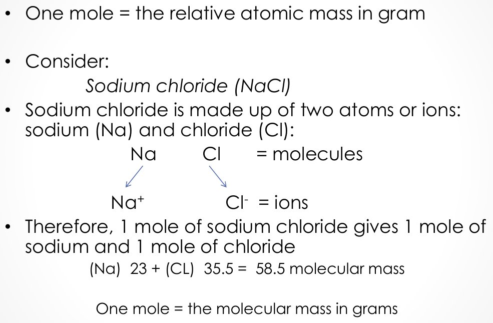
Add the atomic masses of all the atoms in the formula; that sum in grams is one mole.
Question 14 of 80
What is the mass of one mole of potassium chloride (KCl)? (K = 39, Cl = 35.5)
A. 74.5 g
B. 110 g
C. 3.5 g
D. 39 g
A. 74.5 g
Given: KCl contains one K and one Cl. Molecular mass = 39 + 35.5 = 74.5 g per mole.
Same as NaCl: one metal atom plus one chlorine atom.
Question 15 of 80
What is the mass of one mole of calcium chloride (CaCl₂, anhydrous)? (Ca = 40, Cl = 35.5)
A. 71 g
B. 111 g
C. 151 g
D. 75.5 g
B. 111 g
Given: CaCl₂ contains one Ca and two Cl. Molecular mass = 40 + (2 × 35.5) = 40 + 71 = 111 g per mole.
The small 2 after Cl means count chlorine twice.
Question 16 of 80
One mole of sodium chloride (58.5 g) dissolves to give sodium ions and chloride ions. What mass of each ion is produced? (Na = 23, Cl = 35.5)
A. 23 g Na⁺ and 35.5 g Cl⁻
B. 46 g Na⁺ and 71 g Cl⁻
C. 58.5 g Na⁺ and 58.5 g Cl⁻
D. 29.25 g Na⁺ and 29.25 g Cl⁻
A. 23 g Na⁺ and 35.5 g Cl⁻
Given: NaCl → Na⁺ + Cl⁻, so 1 mole NaCl gives 1 mole Na⁺ and 1 mole Cl⁻. Mass = moles × atomic mass: Na⁺ = 1 × 23 = 23 g; Cl⁻ = 1 × 35.5 = 35.5 g. Check: 23 + 35.5 = 58.5 g = one mole of NaCl.
Each NaCl splits into one sodium ion and one chloride ion, so the 58.5 g divides into 23 g of sodium and 35.5 g of chloride, not into two equal halves.
Question 17 of 80
How many moles of chloride ions are produced when 3 moles of calcium chloride (CaCl₂) dissolve?
Every CaCl₂ releases two chloride ions, so double the moles of salt.
Question 18 of 80
How many moles of sodium ions are produced when 29.25 g of sodium chloride dissolves? (Na = 23, Cl = 35.5)
A. 0.5 mole
B. 0.25 mole
C. 1 mole
D. 1.27 moles
A. 0.5 mole
Given: 1 mole NaCl = 23 + 35.5 = 58.5 g. moles NaCl = 29.25 g / 58.5 g = 0.5 mole. NaCl → Na⁺ + Cl⁻ (1 : 1), so moles Na⁺ = 0.5 mole.
Divide by the mass of the whole salt (58.5), not sodium alone (23); one NaCl gives one sodium ion.
Question 19 of 80
What is the mass of one mole of carbon dioxide (CO₂)? (C = 12, O = 16)
A. 44 g
B. 28 g
C. 22 g
D. 56 g
A. 44 g
Given: CO₂ contains one C and two O. C = 12; O = 16 + 16 = 32 Total = 12 + 32 = 44 One mole of CO₂ = 44 g. (Note: the slide writes "one mole of C = 44 g"; it means one mole of CO₂ = 44 g.)
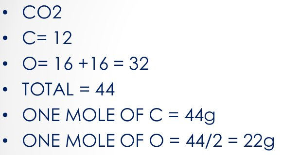
Count the oxygen twice because of the 2 in CO₂.
Question 20 of 80
How many grams of oxygen are contained in one mole (44 g) of carbon dioxide (CO₂)? (C = 12, O = 16)
A. 32 g
B. 12 g
C. 16 g
D. 22 g
A. 32 g
Given: 1 mole CO₂ = 44 g, containing 1 mole C atoms and 2 moles O atoms. Mass of O = 2 × 16 = 32 g (and C = 12 g; 12 + 32 = 44 g). (Note: the slide writes "one mole of O = 44/2 = 22 g" — this is incorrect. One mole of oxygen atoms is 16 g, and the oxygen in one mole of CO₂ is 32 g.)
Split the 44 g by the atoms that make it up: 12 g carbon and 2 × 16 g oxygen — not 44 ÷ 2.
Question 21 of 80
How many grams of carbon are contained in 2 moles of carbon dioxide (CO₂)? (C = 12, O = 16)
A. 12 g
B. 88 g
C. 24 g
D. 64 g
C. 24 g
Given: each mole of CO₂ contains 1 mole of C (12 g). Mass of C = 2 × 12 = 24 g (out of 2 × 44 = 88 g of CO₂).
Two moles of CO₂ contain two moles of carbon atoms.
Question 22 of 80
What is the mass of one mole of water (H₂O)? (H = 1, O = 16)
A. 33 g
B. 17 g
C. 9 g
D. 18 g
D. 18 g
Given: H₂O contains two H and one O. Molecular mass = (2 × 1) + 16 = 18 g per mole.
The 2 belongs to hydrogen, so count H twice and O once.
Question 23 of 80
How many moles are there in 88 g of carbon dioxide? (C = 12, O = 16)
A. 2 moles
B. 3872 moles
C. 0.5 moles
D. 3.14 moles
A. 2 moles
Given: molar mass CO₂ = 12 + 2 × 16 = 44 g. moles = mass / molar mass = 88 g / 44 g = 2 moles.
Use the molecular mass of the whole compound (44), not of one atom.
Question 24 of 80
What is the mass of 0.25 mole of glucose (C₆H₁₂O₆)? (C = 12, H = 1, O = 16)
A. 7.2 g
B. 180 g
C. 45 g
D. 720 g
C. 45 g
Given: molar mass = (6 × 12) + (12 × 1) + (6 × 16) = 72 + 12 + 96 = 180 g. mass = moles × molar mass = 0.25 × 180 g = 45 g.
To go from moles to grams, multiply by the molar mass.
Question 25 of 80
What is the mass of 3 moles of sodium chloride? (Na = 23, Cl = 35.5)
A. 175.5 g
B. 69 g
C. 19.5 g
D. 58.5 g
A. 175.5 g
Given: 1 mole NaCl = 58.5 g. mass = 3 × 58.5 g = 175.5 g.
Each mole weighs 58.5 g, so three moles weigh three times that.
Question 26 of 80
What is the molar mass of magnesium sulphate (MgSO₄, anhydrous)? (Mg = 24, S = 32, O = 16)
A. 72 g
B. 120 g
C. 56 g
D. 88 g
B. 120 g
Given: MgSO₄ = 1 Mg + 1 S + 4 O. Molar mass = 24 + 32 + (4 × 16) = 24 + 32 + 64 = 120 g per mole.
The 4 after O means four oxygen atoms, so add 16 four times.
Question 27 of 80
How many moles of NaCl are in 11.7 g of sodium chloride? (Na = 23, Cl = 35.5)
A. 684.45 moles
B. 0.509 mole
C. 5 moles
D. 0.2 mole
D. 0.2 mole
Given: molar mass NaCl = 58.5 g. moles = 11.7 g / 58.5 g = 0.2 mole.
Divide by the mass of one mole of the whole salt (58.5), not sodium alone (23).
The same formula works for any substance: (mg/ml ÷ mg per mmol) × ml.
4. Converting mg/litre to mmol/litre
7 questions
Question 44 of 80
How many millimoles of sodium are there in a 1 litre infusion containing 1800 mg/litre sodium chloride? (NaCl = 58.5)
A. 0.0325 mmol
B. 30.8 mmol
C. 78.3 mmol
D. 105300 mmol
B. 30.8 mmol
Given: 1800 mg/litre; 1 mmol NaCl = 58.5 mg; volume = 1 litre. Formula: mmol/litre = mg/litre ÷ mg of substance containing 1 mmol = 1800 / 58.5 = 30.8 mmol (in 1 litre, i.e. 30.8 mmol/litre). Ratio method: 1800 mg → 1 L; 58.5 mg → 1 mmol, 1800 mg → x; x = 30.8 mmol. (Note: the slide writes the answer as "30.8 mmol"; as a concentration it is 30.8 mmol/litre. Its extra line "X → 1l" is not needed because the volume is already 1 litre.)
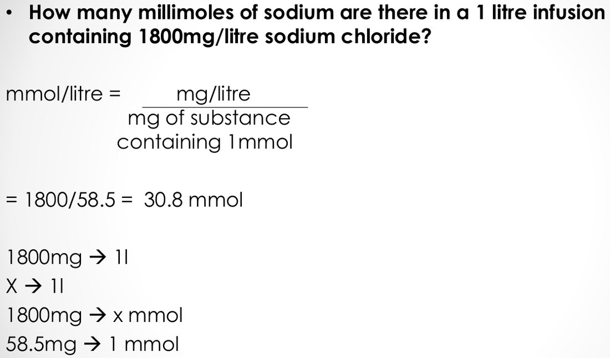
mg per litre divided by mg per mmol gives mmol per litre directly.
Question 45 of 80
A solution contains 3725 mg/litre potassium chloride. What is its concentration in mmol/litre? (K = 39, Cl = 35.5)
Use 111 for CaCl₂ (one Ca and two Cl) and the × 10 for the percentage.
Question 59 of 80
What percentage strength (% w/v) of sodium chloride contains 77 mmol of sodium per litre? (NaCl = 58.5)
A. 0.45% w/v
B. 4.5% w/v
C. 0.177% w/v
D. 1.32% w/v
A. 0.45% w/v
Given: 77 mmol/L; 1 mmol NaCl = 58.5 mg. mg/L = 77 × 58.5 = 4504.5 mg/L = 4.5045 g in 1000 ml. % w/v = g per 100 ml = 4.5045 / 10 = 0.45045 ≈ 0.45% w/v.
Work the formula backwards: mmol × mg per mmol gives mg, then express it per 100 ml in grams.
6. Adding Electrolytes: Volume to Withdraw from an Ampoule
7 questions
Question 60 of 80
You need to add 35 mmol of potassium chloride to one litre of infusion. How many mg of potassium chloride is this? (K = 39, Cl = 35.5)
A. 0.47 mg
B. 2.61 mg
C. 2607.5 mg
D. 1365 mg
C. 2607.5 mg
Given: 35 mmol; KCl = 39 + 35.5 = 74.5, so 1 mmol = 74.5 mg. 74.5 mg → 1 mmol x → 35 mmol x = 35 × 74.5 = 2607.5 mg (≈ 2.61 g). (The values K = 39 and KCl = 74.5 are not given in the lecture.) (Not solved in the lecture.)
mmol to mg: multiply by the mg in one mmol of KCl.
Question 61 of 80
You need to add 35 mmol of potassium chloride to one litre of infusion. You have an ampoule containing potassium chloride 2 g/10 ml. What volume do you need to withdraw? (K = 39, Cl = 35.5)
A. 6.8 ml
B. 1.3 ml
C. 26.1 ml
D. 13 ml
D. 13 ml
Given: 35 mmol KCl needed; 1 mmol KCl = 74.5 mg; ampoule = 2 g/10 ml = 2000 mg in 10 ml = 200 mg/ml. 1. mg needed = 35 × 74.5 = 2607.5 mg. 2. 2000 mg → 10 ml 2607.5 mg → x x = 2607.5 × 10 / 2000 = 13.04 ≈ 13 ml. (Check: 13.04 ml × 200 mg/ml = 2607.5 mg = 35 mmol.) (Not solved in the lecture.)
First change the mmol you want into mg, then find which volume of the ampoule holds that many mg.
Question 62 of 80
You need to add 20 mmol of potassium chloride to an infusion. You have potassium chloride 15% w/v ampoules (1.5 g/10 ml). What volume do you need to withdraw? (K = 39, Cl = 35.5)
Divide the mg you need by the mg in each ml of the ampoule.
Question 63 of 80
You need to add 40 mmol of potassium chloride to one litre of infusion. You have ampoules containing potassium chloride 2 g/10 ml. What volume do you need to withdraw? (K = 39, Cl = 35.5)
Use KCl (74.5), not potassium alone (39), because the ampoule strength is in g of KCl.
Question 64 of 80
You need to add 30 mmol of sodium chloride to an infusion. You have sodium chloride 30% w/v ampoules. What volume do you need to withdraw? (NaCl = 58.5)
How many millimoles of potassium chloride are in one 10 ml ampoule containing potassium chloride 2 g/10 ml? (K = 39, Cl = 35.5)
A. 51.3 mmol
B. 2.68 mmol
C. 0.027 mmol
D. 26.8 mmol
D. 26.8 mmol
Given: 2 g = 2000 mg in the ampoule; 1 mmol KCl = 74.5 mg. mmol = 2000 / 74.5 = 26.8 mmol.
Grams to mg, then divide by 74.5 mg per mmol.
Question 66 of 80
A prescription asks for 27 mmol of potassium chloride. Ampoules contain 2 g/10 ml potassium chloride. What volume should be withdrawn? (K = 39, Cl = 35.5)
A. 20.1 ml
B. 1.01 ml
C. 10.06 ml
D. 5.26 ml
C. 10.06 ml
Given: 27 mmol; 1 mmol KCl = 74.5 mg; ampoule = 200 mg/ml. 1. mg needed = 27 × 74.5 = 2011.5 mg. 2. volume = 2011.5 / 200 = 10.06 ml (just over one 10 ml ampoule).
One ampoule holds about 26.8 mmol, so you need a little more than 10 ml.
7. Mass of an Ion in a Salt (Molecular Weight)
7 questions
Question 67 of 80
How many mg of sodium ions are contained in an 850 mg tablet of sodium chloride? (Na = 23, Cl = 35.5)
A. 2162 mg
B. 14.5 mg
C. 334 mg
D. 516 mg
C. 334 mg
Given: 850 mg NaCl; NaCl = 58.5 of which Na = 23. 58.5 → 23 850 → x x = 850 × 23 / 58.5 = 334.19 ≈ 334 mg of sodium.
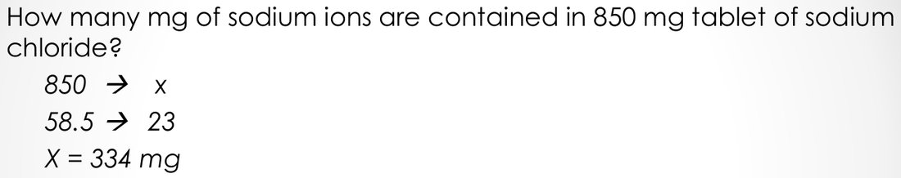
In every 58.5 mg of salt, 23 mg is sodium, so scale that fraction up to 850 mg.
Question 68 of 80
How many mg of potassium ions are contained in 600 mg of potassium chloride? (K = 39, Cl = 35.5)
A. 314.1 mg
B. 8.05 mg
C. 285.9 mg
D. 1146.2 mg
A. 314.1 mg
Given: KCl = 74.5, of which K = 39. 74.5 → 39 600 → x x = 600 × 39 / 74.5 = 314.1 mg.
Multiply the salt mass by the fraction of it that is potassium (39/74.5).
Question 69 of 80
How many mg of calcium ions are contained in 1 g of calcium chloride (CaCl₂, anhydrous)? (Ca = 40, Cl = 35.5)
A. 360.4 mg
B. 639.6 mg
C. 2775 mg
D. 529.8 mg
A. 360.4 mg
Given: 1 g = 1000 mg; CaCl₂ = 40 + 71 = 111, of which Ca = 40. x = 1000 × 40 / 111 = 360.4 mg.
Use the full CaCl₂ mass (111) with both chlorines in the bottom of the fraction.
Question 70 of 80
How many mg of chloride ions are contained in 500 mg of calcium chloride (CaCl₂, anhydrous)? (Ca = 40, Cl = 35.5)
A. 319.8 mg
B. 781.7 mg
C. 159.9 mg
D. 180.2 mg
A. 319.8 mg
Given: CaCl₂ = 111, which contains 2 × 35.5 = 71 of chloride. 111 → 71 500 → x x = 500 × 71 / 111 = 319.8 mg.
There are two chlorines in CaCl₂, so the chloride part is 71, not 35.5.
Question 71 of 80
What mass of sodium chloride provides 100 mg of sodium ions? (Na = 23, Cl = 35.5)
A. 254.3 mg
B. 164.8 mg
C. 39.3 mg
D. 135.5 mg
A. 254.3 mg
Given: 23 mg Na comes from 58.5 mg NaCl. 23 → 58.5 100 → x x = 100 × 58.5 / 23 = 254.3 mg NaCl.
The salt always weighs more than the ion it supplies, so the answer must be bigger than 100 mg.
Question 72 of 80
What is the percentage of sodium (by weight) in sodium chloride? (Na = 23, Cl = 35.5)
A. 50%
B. 60.7%
C. 64.8%
D. 39.3%
D. 39.3%
Given: NaCl = 58.5, of which Na = 23. % Na = 23 / 58.5 × 100 = 39.3%.
Part over whole: sodium mass divided by the mass of the whole salt.
Question 73 of 80
How many mg of potassium ions are in 35 mmol of potassium chloride? (K = 39, Cl = 35.5)
A. 2607.5 mg
B. 0.9 mg
C. 1365 mg
D. 1242.5 mg
C. 1365 mg
Given: 1 mmol KCl → 1 mmol K⁺ = 39 mg. mg K⁺ = 35 × 39 = 1365 mg (the whole salt would be 35 × 74.5 = 2607.5 mg).
The mmol of K⁺ equals the mmol of KCl; then use 39 mg per mmol for the ion alone.
8. Drug Salts: Equivalent Amounts of Different Salts
7 questions
Question 74 of 80
What weight of ferrous gluconate contains the same quantity of iron as a tablet containing 300 mg of dried ferrous sulphate? (dried ferrous sulphate FeSO₄·H₂O = 170; ferrous gluconate C₁₂H₂₂FeO₁₄·2H₂O = 482; Fe = 56)
A. 851 mg
B. 300 mg
C. 106 mg
D. 99 mg
A. 851 mg
Given: both salts contain one Fe per molecule, so equal iron = equal mmol of salt. 1. mmol of ferrous sulphate = 300 / 170 = 1.765 mmol (= 1.765 mmol Fe). 2. mass of ferrous gluconate = 1.765 × 482 = 850.6 mg. Ratio method: 170 mg ferrous sulphate ≡ 482 mg ferrous gluconate; 300 mg → x; x = 300 × 482/170 ≈ 851 mg. (Molecular masses are not given in the lecture: C₁₂H₂₂FeO₁₄·2H₂O = 144 + 22 + 56 + 224 + 36 = 482.) (Not solved in the lecture.)
Same iron means the same number of mmol; the heavier gluconate salt needs a bigger weight.
Question 75 of 80
How many mg of iron are in a tablet containing 300 mg of dried ferrous sulphate? (dried ferrous sulphate FeSO₄·H₂O = 170; Fe = 56)
A. 98.8 mg
B. 110.5 mg
C. 910.7 mg
D. 300 mg
A. 98.8 mg
Given: 170 mg of dried ferrous sulphate contains 56 mg Fe (one Fe per formula). 170 → 56 300 → x x = 300 × 56 / 170 = 98.8 mg of iron. (Molecular masses are not given in the lecture; FeSO₄·H₂O = 56 + 32 + 64 + 18 = 170.)
Iron is only part of the salt: multiply by iron's share, 56/170.
Question 76 of 80
What weight of ferrous fumarate contains the same quantity of iron as 300 mg of ferrous gluconate? (ferrous gluconate C₁₂H₂₂FeO₁₄·2H₂O = 482; ferrous fumarate C₄H₂FeO₄ = 170; Fe = 56)
A. 300 mg
B. 35 mg
C. 851 mg
D. 106 mg
D. 106 mg
Given: each salt has one Fe per molecule. 482 mg gluconate ≡ 170 mg fumarate 300 mg → x x = 300 × 170 / 482 = 105.8 ≈ 106 mg.
Fumarate is the lighter salt, so less of it gives the same iron.
Question 77 of 80
What weight of potassium citrate (C₆H₅K₃O₇·H₂O = 324) provides the same amount of potassium as 600 mg of potassium chloride? (KCl = 74.5)
Potassium citrate carries three potassiums per molecule, so you need only a third as many mmol of it.
Question 78 of 80
What weight of calcium carbonate (CaCO₃ = 100) provides the same amount of calcium as 1 g of calcium gluconate (C₁₂H₂₂CaO₁₄·H₂O = 448)?
A. 1000 mg
B. 89 mg
C. 4480 mg
D. 223 mg
D. 223 mg
Given: each salt has one Ca per molecule; 1 g = 1000 mg. 448 mg gluconate ≡ 100 mg carbonate 1000 mg → x x = 1000 × 100 / 448 = 223.2 ≈ 223 mg.
Equal calcium means equal mmol, and calcium carbonate is the much lighter salt.
Question 79 of 80
What weight of ferrous sulphate heptahydrate (FeSO₄·7H₂O = 278) contains the same quantity of iron as 200 mg of dried ferrous sulphate (FeSO₄·H₂O = 170)?
A. 122 mg
B. 200 mg
C. 66 mg
D. 327 mg
D. 327 mg
Given: both have one Fe per molecule. 170 mg dried ≡ 278 mg heptahydrate 200 mg → x x = 200 × 278 / 170 = 327.1 ≈ 327 mg.
The water of crystallisation adds weight but no iron, so more of the hydrated salt is needed.
Question 80 of 80
How many millimoles of iron are in 300 mg of ferrous gluconate (C₁₂H₂₂FeO₁₄·2H₂O = 482)?
Divide by the mass of the whole salt, because the 300 mg is the salt, not pure iron.
Lecture 5Doses for Adults
124 questions
1. Dose, Dosage Regimen and Number of Dosage Units
15 questions
Question 1 of 124
A prescription requires two capsules of drug X for 5/7. How many capsules should be supplied?
A. 14 capsules
B. 35 capsules
C. 10 capsules
D. 5 capsules
C. 10 capsules
Given: 2 capsules (per day); duration = 5/7. 5/7 means 5 days (the bottom number 7 = days of the week). Total number of capsules = 2 × 5 = 10 capsules. (Note: the slide asks "how many tablet"; the item is capsules, so the answer is given in capsules.)
A fraction over 7 counts days, so 5/7 is 5 days; multiply the daily number of capsules by 5.
Question 2 of 124
A prescription states: one tablet three times daily for 7/7. How many tablets should be supplied?
A. 3 tablets
B. 21 tablets
C. 49 tablets
D. 7 tablets
B. 21 tablets
Given: 1 tablet per dose; 3 doses/day; 7/7 = 7 days. Tablets per day = 1 × 3 = 3 Total = 3 × 7 = 21 tablets.
7/7 is one full week (7 days), so 3 tablets a day for 7 days.
Question 3 of 124
A prescription states: two tablets twice daily for 2/52. How many tablets should be supplied?
A. 56 tablets
B. 208 tablets
C. 28 tablets
D. 8 tablets
A. 56 tablets
Given: 2 tablets per dose; 2 doses/day; 2/52 = 2 weeks = 2 × 7 = 14 days. Tablets per day = 2 × 2 = 4 Total = 4 × 14 = 56 tablets.
A fraction over 52 counts weeks, so 2/52 is 2 weeks = 14 days, not 2 days.
Question 4 of 124
A prescription states: one capsule four times daily for 6/7. How many capsules should be supplied?
A. 6 capsules
B. 28 capsules
C. 42 capsules
D. 24 capsules
D. 24 capsules
Given: 1 capsule per dose; 4 doses/day; 6/7 = 6 days. Capsules per day = 1 × 4 = 4 Total = 4 × 6 = 24 capsules.
6/7 means 6 days; multiply the 4 capsules a day by 6.
Question 5 of 124
The maximum recommended dose of beclomethasone, an aerosolized inhalant, is 168 µg administered twice daily. The commercial inhaler delivers 42 µg per metered inhalation and contains 200 inhalations. How many inhalers should be dispensed to a patient if a 60-day supply is prescribed?
A. 2 inhalers
B. 5 inhalers
C. 1 inhaler
D. 3 inhalers
D. 3 inhalers
Given: dose = 168 µg twice daily; 42 µg per inhalation; 200 inhalations per inhaler; 60 days. Dose per day = 168 µg × 2 = 336 µg/day Dose for 60 days = 336 × 60 = 20160 µg One inhaler contains 42 µg × 200 = 8400 µg Number of inhalers = 20160 ÷ 8400 = 2.4 2 inhalers are not enough (only 16800 µg), so round UP: 3 inhalers. (Check with puffs: 168 ÷ 42 = 4 puffs per dose → 8 puffs/day × 60 = 480 puffs; 480 ÷ 200 = 2.4 → 3 inhalers.)
You cannot dispense part of an inhaler, so 2.4 inhalers must be rounded up to 3 to cover all 60 days.
Question 6 of 124
The dose of fluticasone is 250 µg twice daily. The inhaler delivers 125 µg per inhalation and contains 120 inhalations. How many inhalers should be dispensed for a 45-day supply?
A. 4 inhalers
B. 3 inhalers
C. 2 inhalers
D. 1 inhaler
C. 2 inhalers
Given: 250 µg twice daily; 125 µg/inhalation; 120 inhalations/inhaler; 45 days. Dose per day = 250 × 2 = 500 µg/day Dose for 45 days = 500 × 45 = 22500 µg One inhaler = 125 × 120 = 15000 µg Inhalers = 22500 ÷ 15000 = 1.5 → round up = 2 inhalers.
Find the total µg needed and the µg in one inhaler; 1.5 inhalers means you must give 2.
Question 7 of 124
The dose of salbutamol is 200 µg four times daily. The inhaler delivers 100 µg per inhalation and contains 200 inhalations. How many inhalers should be dispensed for a 30-day supply?
A. 2 inhalers
B. 5 inhalers
C. 1 inhaler
D. 3 inhalers
A. 2 inhalers
Given: 200 µg four times daily; 100 µg/inhalation; 200 inhalations/inhaler; 30 days. Dose per day = 200 × 4 = 800 µg/day Dose for 30 days = 800 × 30 = 24000 µg One inhaler = 100 × 200 = 20000 µg Inhalers = 24000 ÷ 20000 = 1.2 → round up = 2 inhalers.
Even a small part over one inhaler (1.2) needs a second inhaler.
Question 8 of 124
The dose of budesonide is 400 µg twice daily. The inhaler delivers 200 µg per inhalation and contains 100 inhalations. How many inhalers should be dispensed for a 90-day supply?
A. 2 inhalers
B. 3 inhalers
C. 8 inhalers
D. 4 inhalers
D. 4 inhalers
Given: 400 µg twice daily; 200 µg/inhalation; 100 inhalations/inhaler; 90 days. Dose per day = 400 × 2 = 800 µg/day Dose for 90 days = 800 × 90 = 72000 µg One inhaler = 200 × 100 = 20000 µg Inhalers = 72000 ÷ 20000 = 3.6 → round up = 4 inhalers.
Always round the number of inhalers up, never down, so the patient does not run out.
Question 9 of 124
For the treatment of infection the dose is amoxicillin 500 mg every 8 hours for 5 days. Only 250 mg capsules are available. How many capsules should be supplied?
A. 10 capsules
B. 60 capsules
C. 15 capsules
D. 30 capsules
D. 30 capsules
Given: 500 mg per dose; every 8 hours = 24 ÷ 8 = 3 doses/day; 5 days; capsule = 250 mg. Capsules per dose = 500 ÷ 250 = 2 Capsules per day = 2 × 3 = 6 Total = 6 × 5 = 30 capsules.
Every 8 hours is 3 doses a day, and each 500 mg dose needs two 250 mg capsules.
Question 10 of 124
A patient takes amoxicillin 500 mg every 8 hours for 5 days. What total amount of amoxicillin is taken over the course?
A. 2.5 g
B. 7.5 g
C. 10 g
D. 1.5 g
B. 7.5 g
Given: 500 mg per dose; every 8 hours = 3 doses/day; 5 days. Per day = 500 × 3 = 1500 mg Total = 1500 × 5 = 7500 mg = 7.5 g.
Dose × doses per day × days, then change mg to g by dividing by 1000.
Question 11 of 124
A prescription states: two tablets three times daily for 2/52. The tablets come in packs of 28. How many packs should be supplied?
A. 2 packs
B. 6 packs
C. 3 packs
D. 1 pack
C. 3 packs
Given: 2 tablets per dose; 3 doses/day; 2/52 = 14 days; 28 tablets per pack. Tablets per day = 2 × 3 = 6 Total = 6 × 14 = 84 tablets Packs = 84 ÷ 28 = 3 packs.
Work out the total tablets first (84), then see how many packs of 28 that is.
Question 12 of 124
A prescription states: one tablet once daily for 3/12. One pack contains 28 tablets and is counted as one month’s supply. How many packs should be supplied?
A fraction over 12 counts months, so 3/12 is 3 months.
Question 13 of 124
Methotrexate 7.5 mg is taken once WEEKLY for 12/52. Tablets contain 2.5 mg. How many tablets should be supplied?
A. 36 tablets
B. 3 tablets
C. 252 tablets
D. 12 tablets
A. 36 tablets
Given: weekly dose = 7.5 mg; 12/52 = 12 weeks; tablet = 2.5 mg. Tablets per week = 7.5 ÷ 2.5 = 3 Total = 3 × 12 = 36 tablets. (Giving it daily for 12 weeks would be 3 × 84 = 252 tablets — wrong, it is a weekly dose.)
A weekly dose is taken once a week, so multiply by the number of weeks, not days.
Question 14 of 124
A patient needs a dose of 1 g twice daily for 4/7. The tablets contain 500 mg. How many tablets should be supplied?
A. 16 tablets
B. 4 tablets
C. 8 tablets
D. 28 tablets
A. 16 tablets
Given: 1 g = 1000 mg per dose; 2 doses/day; 4/7 = 4 days; tablet = 500 mg. Tablets per dose = 1000 ÷ 500 = 2 Tablets per day = 2 × 2 = 4 Total = 4 × 4 = 16 tablets.
Change 1 g to 1000 mg to see that each dose is 2 tablets.
Question 15 of 124
Co-amoxiclav 625 mg tablets contain 500 mg amoxicillin and 125 mg clavulanic acid. The patient takes one tablet three times daily for 7/7. What total amount of amoxicillin does the patient take?
A. 13.125 g
B. 2.625 g
C. 10.5 g
D. 1.5 g
C. 10.5 g
Given: 500 mg amoxicillin per tablet; 3 tablets/day; 7/7 = 7 days. Tablets = 3 × 7 = 21 Amoxicillin = 21 × 500 mg = 10500 mg = 10.5 g. (625 mg is the total of both active ingredients, not the amoxicillin alone.)
A combination tablet has two actives; use only the amount of the drug asked about.
2. Oral Liquids: Spoonfuls, Oral Syringes and Volume to Supply
27 questions
Question 16 of 124
A prescription of indigestion mixture has a dosage regimen of 20 mL four times daily for 5 days. How many 5 mL spoonfuls of mixture are required for each dose?
A. 5 spoonfuls
B. 16 spoonfuls
C. 4 spoonfuls
D. 100 spoonfuls
C. 4 spoonfuls
Given: dose = 20 mL; 1 spoonful = 5 mL. Spoonfuls per dose = 20 mL ÷ 5 mL = 4 spoonfuls. (Not solved in the lecture.)
Divide the dose volume by the 5 mL spoon; the "four times daily" does not change one dose.
Question 17 of 124
A prescription of a cough mixture has a dosage regimen of 15 mL three times daily for 7 days. How many 5 mL spoonfuls are required for each dose?
A prescription of indigestion mixture has a dosage regimen of 20 mL four times daily for 5 days. Calculate the number of doses.
A. 9 doses
B. 20 doses
C. 80 doses
D. 5 doses
B. 20 doses
Given: 4 doses/day; 5 days. Number of doses = 4 × 5 = 20 doses. (Not solved in the lecture.)
Doses per day multiplied by the number of days gives the total doses.
Question 20 of 124
A prescription of a cough mixture has a dosage regimen of 15 mL three times daily for 7 days. Calculate the number of doses.
A. 63 doses
B. 10 doses
C. 21 doses
D. 7 doses
C. 21 doses
Given: 3 doses/day; 7 days. Number of doses = 3 × 7 = 21 doses.
Multiply, do not add: 3 a day for 7 days is 21.
Question 21 of 124
A prescription of an antacid mixture has a dosage regimen of 10 mL twice daily for 10 days. Calculate the number of doses.
A. 20 doses
B. 12 doses
C. 10 doses
D. 40 doses
A. 20 doses
Given: 2 doses/day; 10 days. Number of doses = 2 × 10 = 20 doses.
Twice daily for 10 days is 2 × 10 doses.
Question 22 of 124
A prescription of indigestion mixture has a dosage regimen of 20 mL four times daily for 5 days. Calculate the total volume of mixture that should be supplied.
A. 80 mL
B. 400 mL
C. 100 mL
D. 2000 mL
B. 400 mL
Given: 20 mL per dose; 4 doses/day; 5 days. Volume per day = 20 × 4 = 80 mL Total volume = 80 × 5 = 400 mL (= 20 doses × 20 mL). (Not solved in the lecture.)
Volume of one dose × number of doses gives the volume to supply.
Question 23 of 124
A prescription of a cough mixture has a dosage regimen of 15 mL three times daily for 7 days. Calculate the total volume that should be supplied.
A. 45 mL
B. 315 mL
C. 105 mL
D. 1575 mL
B. 315 mL
Given: 15 mL per dose; 3 doses/day; 7 days. Volume per day = 15 × 3 = 45 mL Total = 45 × 7 = 315 mL.
21 doses of 15 mL each make 315 mL.
Question 24 of 124
A prescription of an antacid mixture has a dosage regimen of 10 mL twice daily for 10 days. Calculate the total volume that should be supplied.
A. 200 mL
B. 20 mL
C. 100 mL
D. 1000 mL
A. 200 mL
Given: 10 mL per dose; 2 doses/day; 10 days. Volume per day = 10 × 2 = 20 mL Total = 20 × 10 = 200 mL.
Find the daily volume, then multiply by the days.
Question 25 of 124
A prescription states: 2.5 mL three times daily for 4/7. What volume of drug should be dispensed?
A. 10 mL
B. 30 mL
C. 52.5 mL
D. 7.5 mL
B. 30 mL
Given: 2.5 mL per dose; 3 doses/day; 4/7 = 4 days. Volume daily = 3 × 2.5 = 7.5 mL Total volume for 4 days = 7.5 × 4 = 30 mL. (The dose is less than 5 mL, so a 5 mL oral syringe should be supplied with it.)
4/7 means 4 days, so multiply the 7.5 mL a day by 4, not by 7.
Question 26 of 124
A prescription states: 3.5 mL twice daily for 7/7. What volume of drug should be dispensed?
A. 49 mL
B. 24.5 mL
C. 98 mL
D. 7 mL
A. 49 mL
Given: 3.5 mL per dose; 2 doses/day; 7/7 = 7 days. Volume daily = 2 × 3.5 = 7 mL Total = 7 × 7 = 49 mL.
Daily volume (7 mL) times 7 days.
Question 27 of 124
A prescription states: 4 mL three times daily for 10/7. What volume of drug should be dispensed?
A. 12 mL
B. 120 mL
C. 40 mL
D. 84 mL
B. 120 mL
Given: 4 mL per dose; 3 doses/day; 10/7 = 10 days. Volume daily = 3 × 4 = 12 mL Total = 12 × 10 = 120 mL.
The top number of 10/7 is the number of days (10).
Question 28 of 124
A prescription states: 2.5 mL four times daily for 2/52. What volume of drug should be dispensed?
A. 20 mL
B. 10 mL
C. 520 mL
D. 140 mL
D. 140 mL
Given: 2.5 mL per dose; 4 doses/day; 2/52 = 2 weeks = 14 days. Volume daily = 4 × 2.5 = 10 mL Total = 10 × 14 = 140 mL.
2/52 is two weeks, which is 14 days.
Question 29 of 124
A liquid medicine is to be taken 3 times daily. If 180 mL are to be taken in 4 days, how many teaspoonfuls should be prescribed for each dose? (1 teaspoonful = 5 mL)
A. 9 teaspoonfuls
B. 1 teaspoonful
C. 12 teaspoonfuls
D. 3 teaspoonfuls
D. 3 teaspoonfuls
Given: 180 mL in 4 days; 3 doses/day; 1 tsp = 5 mL. Volume per day = 180 ÷ 4 = 45 mL/day Volume per dose = 45 ÷ 3 = 15 mL Teaspoonfuls per dose = 15 ÷ 5 = 3 teaspoonfuls.
Work backwards: total → per day → per dose → teaspoonfuls.
Question 30 of 124
A liquid medicine is to be taken 4 times daily. If 240 mL are to be taken in 6 days, how many teaspoonfuls should be prescribed for each dose? (1 teaspoonful = 5 mL)
A. 2 teaspoonfuls
B. 8 teaspoonfuls
C. 0.67 teaspoonful
D. 48 teaspoonfuls
A. 2 teaspoonfuls
Given: 240 mL in 6 days; 4 doses/day; 1 tsp = 5 mL. Per day = 240 ÷ 6 = 40 mL Per dose = 40 ÷ 4 = 10 mL Teaspoonfuls = 10 ÷ 5 = 2 teaspoonfuls.
Divide by the days, then by the doses per day, then by 5 mL.
Question 31 of 124
A liquid medicine is to be taken 3 times daily. If 225 mL are to be taken in 10 days, how many teaspoonfuls should be prescribed for each dose? (1 teaspoonful = 5 mL)
A. 1.5 teaspoonfuls
B. 4.5 teaspoonfuls
C. 45 teaspoonfuls
D. 0.5 teaspoonful
A. 1.5 teaspoonfuls
Given: 225 mL in 10 days; 3 doses/day; 1 tsp = 5 mL. Per day = 225 ÷ 10 = 22.5 mL Per dose = 22.5 ÷ 3 = 7.5 mL Teaspoonfuls = 7.5 ÷ 5 = 1.5 teaspoonfuls.
The dose (7.5 mL) is one and a half 5 mL teaspoons.
Question 32 of 124
A liquid medicine is to be taken 4 times daily. If 360 mL are to be taken in 6 days, how many tablespoonfuls should be prescribed for each dose? (1 tablespoonful = 15 mL)
A. 4 tablespoonfuls
B. 1 tablespoonful
C. 24 tablespoonfuls
D. 3 tablespoonfuls
B. 1 tablespoonful
Given: 360 mL in 6 days; 4 doses/day; 1 tbsp = 15 mL. Per day = 360 ÷ 6 = 60 mL Per dose = 60 ÷ 4 = 15 mL Tablespoonfuls = 15 ÷ 15 = 1 tablespoonful.
A tablespoon is 15 mL (not 5 mL), so 15 mL is exactly one tablespoonful.
Question 33 of 124
If a cough syrup contains 0.24 g of codeine in 120 mL, how many mg are contained in each teaspoonful dose? (1 teaspoonful = 5 mL)
A. 30 mg
B. 0.01 mg
C. 2 mg
D. 10 mg
D. 10 mg
Given: 0.24 g codeine in 120 mL; 1 tsp = 5 mL. 0.24 g → 120 mL x → 5 mL x = 0.24 × 5 / 120 = 0.01 g 0.01 g × 1000 = 10 mg.
Find the grams in 5 mL by proportion, then change g to mg (× 1000) because the question asks for mg.
Question 34 of 124
If a cough syrup contains 0.3 g of dextromethorphan in 100 mL, how many mg are contained in each teaspoonful dose? (1 teaspoonful = 5 mL)
A. 0.015 mg
B. 15 mg
C. 45 mg
D. 3 mg
B. 15 mg
Given: 0.3 g = 300 mg in 100 mL; 1 tsp = 5 mL. Concentration = 300 mg ÷ 100 mL = 3 mg/mL Per teaspoonful = 3 mg/mL × 5 mL = 15 mg.
Change grams to mg first, find mg per mL, then multiply by 5 mL.
Question 35 of 124
If a syrup contains 1.2 g of a drug in 240 mL, how many mg are contained in each tablespoonful dose? (1 tablespoonful = 15 mL)
The answer must be in mg, so divide the mcg by 1000.
Question 47 of 124
The dose of gentamicin for patients with impaired renal function is adjusted to ensure therapeutically optimal dosage. If the normal daily dose of the drug for adults is 3 mg/kg/day, administered in three divided doses, what would be the single (8-hour) dose for a patient weighing 165 lb and scheduled to receive only 40% of the usual dose, based on renal impairment? (1 kg = 2.2 lb)
A. 75 mg
B. 66 mg
C. 30 mg
D. 90 mg
C. 30 mg
Given: 3 mg/kg/day in 3 divided doses; weight = 165 lb; 40% of usual dose. Weight = 165 ÷ 2.2 = 75 kg Usual daily dose = 3 mg/kg × 75 kg = 225 mg/day 40% of it = 0.40 × 225 = 90 mg/day Single (8-hour) dose = 90 ÷ 3 = 30 mg. (Not solved in the lecture.)
Find the usual daily dose, take 40% of it, then split it into the 3 doses.
Question 48 of 124
The normal daily dose of a drug is 5 mg/kg/day in three divided doses. What is the single dose for a patient weighing 154 lb who should receive only 60% of the usual dose because of renal impairment? (1 kg = 2.2 lb)
Reduce the daily dose to 60% first, then divide by the number of doses.
Question 49 of 124
The normal daily dose of a drug is 6 mg/kg/day in four divided doses. What is the single dose for a patient weighing 132 lb who should receive only 50% of the usual dose? (1 kg = 2.2 lb)
Four divided doses means divide the reduced daily amount by 4.
Question 50 of 124
The normal daily dose of a drug is 3 mg/kg/day in three divided doses. What is the single dose for a patient weighing 220 lb who should receive only 25% of the usual dose? (1 kg = 2.2 lb)
Weight in kg, daily dose, percentage, then divide into doses.
Question 51 of 124
A patient weighing 120 lb was administered 2.1 g of a drug supposed to be dosed at 30 mg/kg. Was the dose administered correct, or was it an overdose, or was it an underdose? (1 kg = 2.2 lb)
A. Correct — correct dose = 2100 mg
B. Underdose — correct dose = 3600 mg
C. Overdose — correct dose ≈ 1636 mg
D. Underdose — correct dose = 7920 mg
C. Overdose — correct dose ≈ 1636 mg
Given: weight = 120 lb; dose = 30 mg/kg; given = 2.1 g = 2100 mg. Weight = 120 ÷ 2.2 = 54.55 kg Correct dose = 30 mg/kg × 54.55 kg = 1636.4 ≈ 1636 mg Given 2100 mg > 1636 mg → overdose (by about 464 mg). (Not solved in the lecture.)
Calculate the correct dose in mg and compare it with what was given (2.1 g = 2100 mg).
Question 52 of 124
A patient weighing 176 lb was administered 1.2 g of a drug that should be dosed at 15 mg/kg. Was the dose correct, an overdose or an underdose? (1 kg = 2.2 lb)
A. Correct — correct dose = 1200 mg
B. Overdose — correct dose = 120 mg
C. Overdose — correct dose ≈ 545.5 mg
D. Underdose — correct dose = 2640 mg
A. Correct — correct dose = 1200 mg
Given: 176 lb; 15 mg/kg; given = 1.2 g = 1200 mg. Weight = 176 ÷ 2.2 = 80 kg Correct dose = 15 × 80 = 1200 mg Given 1200 mg = correct dose → correct.
The calculated dose (1200 mg) is the same as 1.2 g, so the dose was right.
Question 53 of 124
A patient weighing 143 lb was administered 500 mg of a drug that should be dosed at 10 mg/kg. Was the dose correct, an overdose or an underdose? (1 kg = 2.2 lb)
The patient received less than the calculated dose, so it is an underdose.
Question 54 of 124
A patient weighing 110 lb was administered 3 g of a drug that should be dosed at 50 mg/kg. Was the dose correct, an overdose or an underdose? (1 kg = 2.2 lb)
A. Underdose — correct dose = 5500 mg
B. Overdose — correct dose = 2500 mg
C. Overdose — correct dose = 250 mg
D. Correct — correct dose = 3000 mg
B. Overdose — correct dose = 2500 mg
Given: 110 lb; 50 mg/kg; given = 3 g = 3000 mg. Weight = 110 ÷ 2.2 = 50 kg Correct dose = 50 × 50 = 2500 mg Given 3000 mg > 2500 mg → overdose (by 500 mg).
Put both amounts in mg before comparing: 3 g is 3000 mg.
Question 55 of 124
The adult dose of a liquid medication is 0.1 mL/kg of body weight. How many teaspoonfuls should be administered to a person weighing 220 lb? (1 kg = 2.2 lb; 1 teaspoonful = 5 mL)
A. 10 teaspoonfuls
B. 2 teaspoonfuls
C. 4.4 teaspoonfuls
D. 0.67 teaspoonful
B. 2 teaspoonfuls
Given: 0.1 mL/kg; weight = 220 lb; 1 tsp = 5 mL. Weight = 220 ÷ 2.2 = 100 kg Dose = 0.1 mL/kg × 100 kg = 10 mL Teaspoonfuls = 10 ÷ 5 = 2 teaspoonfuls. (The doctor used 1 lb = 0.454 kg: 220 × 0.454 = 99.88 kg → 9.988 ≈ 10 mL → same answer.)
Get the volume in mL from the weight in kg, then divide by 5 mL for teaspoonfuls.
Question 56 of 124
The adult dose of a liquid medication is 0.15 mL/kg of body weight. How many teaspoonfuls should be administered to a person weighing 165 lb? (1 kg = 2.2 lb; 1 teaspoonful = 5 mL)
mL per kg × kg gives mL; mL ÷ 5 gives teaspoonfuls.
Question 57 of 124
The adult dose of a liquid medication is 0.25 mL/kg of body weight. How many teaspoonfuls should be administered to a person weighing 132 lb? (1 kg = 2.2 lb; 1 teaspoonful = 5 mL)
Using 132 lb directly as kg gives 6.6 teaspoonfuls, which is wrong.
Question 58 of 124
The adult dose of a liquid medication is 0.5 mL/kg of body weight. How many tablespoonfuls should be administered to a person weighing 198 lb? (1 kg = 2.2 lb; 1 tablespoonful = 15 mL)
Prior to hip replacement surgery, a patient receives an injection of an anticoagulant drug at a dose of 30 mg. Following the patient’s surgery, the drug is injected at 1 mg/kg. For a 140-lb patient, calculate the total of the pre- and postsurgical doses. (1 kg = 2.2 lb)
A. 338 mg
B. 63.64 mg
C. 170 mg
D. 93.64 mg
D. 93.64 mg
Given: pre-surgery dose = 30 mg; post-surgery = 1 mg/kg; weight = 140 lb. Weight = 140 ÷ 2.2 = 63.64 kg Post-surgery dose = 1 mg/kg × 63.64 kg = 63.64 mg Total = 30 + 63.64 = 93.64 mg. (The doctor used 1 lb = 0.454 kg: 140 × 0.454 = 63.56 kg → total 93.56 mg; the small difference is only from the conversion factor.)
Add the fixed 30 mg dose to the weight-based dose after converting the weight to kg.
Question 60 of 124
Before surgery a patient receives 40 mg of a drug. After surgery the drug is given at 1.5 mg/kg. For a 176-lb patient, calculate the total of the pre- and postsurgical doses. (1 kg = 2.2 lb)
A. 304 mg
B. 620.8 mg
C. 120 mg
D. 160 mg
D. 160 mg
Given: pre = 40 mg; post = 1.5 mg/kg; 176 lb. Weight = 176 ÷ 2.2 = 80 kg Post dose = 1.5 × 80 = 120 mg Total = 40 + 120 = 160 mg.
Only the post-surgery dose depends on weight; then add the 40 mg.
Question 61 of 124
Before surgery a patient receives 25 mg of a drug. After surgery the drug is given at 0.75 mg/kg. For a 154-lb patient, calculate the total of the pre- and postsurgical doses. (1 kg = 2.2 lb)
A. 279.1 mg
B. 52.5 mg
C. 140.5 mg
D. 77.5 mg
D. 77.5 mg
Given: pre = 25 mg; post = 0.75 mg/kg; 154 lb. Weight = 154 ÷ 2.2 = 70 kg Post dose = 0.75 × 70 = 52.5 mg Total = 25 + 52.5 = 77.5 mg.
Divide pounds by 2.2 (multiplying by 2.2 is a common mistake).
Question 62 of 124
Before surgery a patient receives 30 mg of a drug. After surgery the drug is given at 1 mg/kg every 12 hours for 2 doses. For a 121-lb patient, calculate the total of all the doses. (1 kg = 2.2 lb)
A. 85 mg
B. 110 mg
C. 272 mg
D. 140 mg
D. 140 mg
Given: pre = 30 mg; post = 1 mg/kg × 2 doses; 121 lb. Weight = 121 ÷ 2.2 = 55 kg Each post dose = 1 × 55 = 55 mg → 2 doses = 110 mg Total = 30 + 110 = 140 mg.
Count both post-surgery doses, then add the pre-surgery dose.
Question 63 of 124
A drug is dosed at 1.5 mg/kg. How many milligrams should be given to a patient weighing 187 lb? (1 kg = 2.2 lb)
Every 6 hours means 4 doses a day, so divide by 4 (not 6).
Question 65 of 124
A drug is dosed at 15 mg/kg, with a maximum single dose of 1 g. What dose should a patient weighing 154 lb receive? (1 kg = 2.2 lb)
A. 1050 mg
B. 1000 mg
C. 2310 mg
D. 477.3 mg
B. 1000 mg
Given: 15 mg/kg; maximum = 1 g = 1000 mg; 154 lb. Weight = 154 ÷ 2.2 = 70 kg Calculated dose = 15 × 70 = 1050 mg 1050 mg is more than the 1000 mg maximum → give 1000 mg.
If the calculated dose is above the maximum, give the maximum dose.
Question 66 of 124
A patient weighing 198 lb needs a drug at 1.5 mg/kg once daily. The injection contains 150 mg/mL. What volume should be injected? (1 kg = 2.2 lb)
Find the dose in mg, then divide by the strength to change it into mL.
Question 67 of 124
A patient weighing 110 lb is prescribed 10 mg/kg/day in 2 divided doses for 7 days. The tablets contain 250 mg. How many tablets should be supplied? (1 kg = 2.2 lb)
Each 250 mg dose is one tablet; two a day for 7 days is 14.
Question 68 of 124
Because of renal impairment, a patient weighing 143 lb should receive 75% of the usual dose of 4 mg/kg/day, given in 2 divided doses. What is each dose? (1 kg = 2.2 lb)
Take the percentage of the daily dose, then divide by 2 doses.
4. Body Surface Area (BSA) and Dose per m²
18 questions
Question 69 of 124
If the dose of a drug is 5 mg/m², what would be the dose for a patient measuring 165 cm and weighing 65 kg? (BSA = √[Ht (cm) × Wt (kg) / 3600]; round BSA to 2 decimals)
A. 86.5 mg
B. 2.89 mg
C. 8.65 mg
D. 14.9 mg
C. 8.65 mg
Given: height = 165 cm; weight = 65 kg; dose = 5 mg/m². BSA = √(165 × 65 / 3600) = √(10725 / 3600) = √2.979 = 1.726 ≈ 1.73 m² (rounded to 2 decimals) Dose = 5 mg/m² × 1.73 m² = 8.65 mg. (Without rounding the BSA: 5 × 1.726 = 8.63 mg.) (Not solved in the lecture.)
Find the BSA with the square-root formula, then multiply it by the dose per m².
Question 70 of 124
If the dose of a drug is 4 mg/m², what would be the dose for a patient measuring 170 cm and weighing 72 kg? (Round BSA to 2 decimals.)
Height × weight ÷ 3600, square root, then × dose per m².
Question 73 of 124
In treating a 54-year-old female patient, an oncologist selects the drug temozolomide, an antitumor agent used in the treatment of refractory astrocytoma (brain tumor). The drug is used as part of a 28-day regimen, during which the first five days of treatment include temozolomide at a once-daily dose of 150 mg/m²/day. The patient’s medical chart indicates that she measures 5 ft in height and weighs 117 lb. What is the daily dose of temozolomide? (1 ft = 12 in; 1 in = 2.54 cm; 1 kg = 2.2 lb; round BSA to 2 decimals)
A. 337.7 mg
B. 100 mg
C. 225 mg
D. 1125 mg
C. 225 mg
Given: 150 mg/m²/day; height = 5 ft; weight = 117 lb. Height = 5 × 12 = 60 in × 2.54 = 152.4 cm Weight = 117 ÷ 2.2 = 53.18 kg BSA = √(152.4 × 53.18 / 3600) = √(8104.6 / 3600) = √2.251 = 1.500 ≈ 1.50 m² Daily dose = 150 mg/m² × 1.50 m² = 225 mg. (The doctor used 117 × 0.454 = 53.118 kg; BSA is still 1.5 m², same answer.)
Change feet to cm and pounds to kg, find the BSA, then multiply by 150 mg/m².
Question 74 of 124
A patient is to receive temozolomide 150 mg/m²/day. She measures 5 ft 6 in and weighs 143 lb. What is the daily dose? (1 ft = 12 in; 1 in = 2.54 cm; 1 kg = 2.2 lb; round BSA to 2 decimals)
Add the 6 inches to the 60 inches before converting to cm.
Question 75 of 124
A patient is to receive temozolomide 150 mg/m²/day. She measures 5 ft 4 in and weighs 132 lb. What is the daily dose? (1 ft = 12 in; 1 in = 2.54 cm; 1 kg = 2.2 lb; round BSA to 2 decimals)
Units are already cm and kg here, so go straight to the BSA formula.
Question 77 of 124
A 54-year-old woman (5 ft, 117 lb) needs temozolomide 150 mg/m² once daily. The drug is available in capsules containing 5, 20, 100 and 250 mg. What combination of capsules would provide the daily dose of this drug with the fewest capsules? (1 ft = 12 in; 1 in = 2.54 cm; 1 kg = 2.2 lb)
A. 1 × 250 mg
B. 2 × 100 mg + 1 × 20 mg
C. 2 × 100 mg + 1 × 20 mg + 1 × 5 mg
D. 1 × 100 mg + 1 × 20 mg + 1 × 5 mg
C. 2 × 100 mg + 1 × 20 mg + 1 × 5 mg
Given: BSA = √(152.4 cm × 53.18 kg / 3600) = 1.50 m² (5 ft = 152.4 cm; 117 lb = 53.18 kg). Daily dose = 150 × 1.50 = 225 mg (exact, no rounding needed). Build 225 mg from the biggest useful capsules: 250 mg is too much (more than 225), so use 100 mg capsules: 2 × 100 = 200 mg; remaining 25 mg 25 mg = 1 × 20 mg + 1 × 5 mg Total = 200 + 20 + 5 = 225 mg → 2 × 100 mg + 1 × 20 mg + 1 × 5 mg (4 capsules). No 3-capsule combination gives 225 mg, so 4 is the fewest. (Other options: 220 mg, 250 mg and 125 mg — wrong doses.)
Add up each combination: only 100 + 100 + 20 + 5 gives exactly 225 mg.
Question 78 of 124
A patient needs temozolomide 150 mg/m²/day and has a BSA of 1.80 m². Capsules of 5, 20, 100 and 250 mg are available. Which combination gives the daily dose with the fewest capsules?
First calculate the dose (270 mg), then check which set of capsules adds up to exactly 270 mg.
Question 79 of 124
A patient needs temozolomide 200 mg/m²/day and has a BSA of 1.60 m². Capsules of 5, 20, 100 and 250 mg are available. Which combination gives the daily dose with the fewest capsules?
A. 1 × 250 mg + 1 × 100 mg
B. 3 × 100 mg + 1 × 5 mg
C. 3 × 100 mg + 1 × 20 mg
D. 1 × 250 mg + 3 × 20 mg
C. 3 × 100 mg + 1 × 20 mg
Given: 200 mg/m²; BSA = 1.60 m². Daily dose = 200 × 1.60 = 320 mg (exact). 3 × 100 mg + 1 × 20 mg = 320 mg → 3 × 100 mg + 1 × 20 mg (4 capsules). Starting with 250 mg would need 250 + 20 + 20 + 20 + 5 + 5 = 320 mg = 6 capsules, which is more. (Other options give 310 mg, 350 mg and 305 mg — wrong doses.)
Starting with the largest capsule is not always best; here 3 × 100 + 20 uses fewer capsules.
Question 80 of 124
A patient needs temozolomide 150 mg/m²/day and has a BSA of 1.73 m². The dose is rounded to the nearest 5 mg because the smallest capsule is 5 mg. Capsules of 5, 20, 100 and 250 mg are available. Which combination gives the daily dose with the fewest capsules?
The chemotherapy regimen “CAF” during a 21-day cycle is:
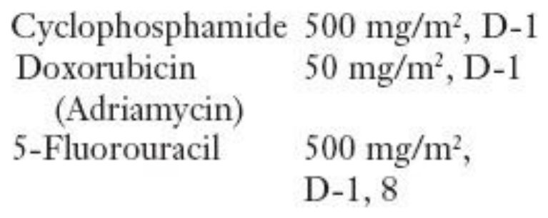
Calculate the dose of CYCLOPHOSPHAMIDE per cycle for a patient with a BSA of 1.9 m².
A. 263.2 mg
B. 19950 mg
C. 950 mg
D. 1900 mg
C. 950 mg
Given: cyclophosphamide 500 mg/m² on D-1 (day 1 only); BSA = 1.9 m². Dose = 500 mg/m² × 1.9 m² = 950 mg on day 1 Days given = 1 → Dose per cycle = 950 × 1 = 950 mg. (Not solved in the lecture.)
D-1 means the drug is given on day 1 only, so the cycle dose is one dose.
Question 88 of 124
In a 21-day cycle, cyclophosphamide is given at 600 mg/m² on day 1 only. Calculate the cyclophosphamide dose per cycle for a patient with a BSA of 1.75 m².
A. 342.9 mg
B. 1050 mg
C. 22050 mg
D. 2100 mg
B. 1050 mg
Given: 600 mg/m², D-1; BSA = 1.75 m². Dose per cycle = 600 × 1.75 × 1 day = 1050 mg.
Day 1 only means one dose; do not multiply by 21.
Question 89 of 124
In a 21-day cycle, cyclophosphamide is given at 750 mg/m² on day 1 only. Calculate the cyclophosphamide dose per cycle for a patient with a BSA of 2.0 m².
A. 750 mg
B. 375 mg
C. 31500 mg
D. 1500 mg
D. 1500 mg
Given: 750 mg/m², D-1; BSA = 2.0 m². Dose per cycle = 750 × 2.0 × 1 day = 1500 mg.
mg/m² × BSA gives the mg for that day.
Question 90 of 124
The chemotherapy regimen “CAF” during a 21-day cycle is:Calculate the dose of DOXORUBICIN (Adriamycin) per cycle for a patient with a BSA of 1.9 m².
A. 26.3 mg
B. 1995 mg
C. 95 mg
D. 190 mg
C. 95 mg
Given: doxorubicin 50 mg/m² on D-1 (day 1 only); BSA = 1.9 m². Dose per cycle = 50 mg/m² × 1.9 m² × 1 day = 95 mg. (Not solved in the lecture.)
Doxorubicin is given once, on day 1, so 50 × 1.9 is the whole cycle dose.
Question 91 of 124
In a 21-day cycle, doxorubicin is given at 60 mg/m² on day 1 only. Calculate the doxorubicin dose per cycle for a patient with a BSA of 1.75 m².
A. 105 mg
B. 34.3 mg
C. 2205 mg
D. 60 mg
A. 105 mg
Given: 60 mg/m², D-1; BSA = 1.75 m². Dose per cycle = 60 × 1.75 × 1 = 105 mg.
Multiply mg/m² by the BSA; one day only.
Question 92 of 124
In a 21-day cycle, a drug is given at 40 mg/m² on days 1 and 8 (D-1, 8). Calculate the dose per cycle for a patient with a BSA of 1.6 m².
A. 1344 mg
B. 64 mg
C. 128 mg
D. 25 mg
C. 128 mg
Given: 40 mg/m² on D-1 and D-8 = 2 days; BSA = 1.6 m². Dose per day = 40 × 1.6 = 64 mg Dose per cycle = 64 × 2 = 128 mg.
"D-1, 8" means two days: day 1 and day 8, not days 1 to 8.
Question 93 of 124
The chemotherapy regimen “CAF” during a 21-day cycle is:Calculate the dose of 5-FLUOROURACIL per cycle for a patient with a BSA of 1.9 m².
A. 19950 mg
B. 1900 mg
C. 950 mg
D. 7600 mg
B. 1900 mg
Given: 5-fluorouracil 500 mg/m² on D-1, 8 (day 1 and day 8 = 2 days); BSA = 1.9 m². Dose per day = 500 × 1.9 = 950 mg Dose per cycle = 950 × 2 = 1900 mg. (Not solved in the lecture.)
"D-1, 8" is two doses (day 1 and day 8), so double the single dose.
Question 94 of 124
In a 21-day cycle, 5-fluorouracil is given at 600 mg/m² on days 1 and 8. Calculate the dose per cycle for a patient with a BSA of 1.75 m².
A. 22050 mg
B. 1050 mg
C. 8400 mg
D. 2100 mg
D. 2100 mg
Given: 600 mg/m² on D-1, 8 = 2 days; BSA = 1.75 m². Dose per day = 600 × 1.75 = 1050 mg Dose per cycle = 1050 × 2 = 2100 mg.
Two treatment days, so the single dose is given twice.
Question 95 of 124
In a 21-day cycle, 5-fluorouracil is given at 400 mg/m²/day on days 1–5. Calculate the dose per cycle for a patient with a BSA of 1.8 m².
A. 15120 mg
B. 720 mg
C. 1440 mg
D. 3600 mg
D. 3600 mg
Given: 400 mg/m²/day on D 1–5 = 5 days; BSA = 1.8 m². Dose per day = 400 × 1.8 = 720 mg Dose per cycle = 720 × 5 = 3600 mg.
A dash (1–5) means every day from 1 to 5, which is 5 days.
Question 96 of 124
A three-agent dosage regimen, termed VAD, for the treatment of multiple myeloma includes the following drugs taken over a 28-day cycle:
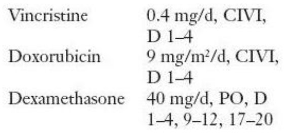
Calculate the total quantity of VINCRISTINE administered over the treatment cycle for a patient with a BSA of 1.65 m².
A. 0.4 mg
B. 1.6 mg
C. 11.2 mg
D. 2.64 mg
B. 1.6 mg
Given: vincristine 0.4 mg/d, CIVI (continuous IV infusion), D 1–4 = 4 days. The dose is a fixed 0.4 mg per day (mg/d, not mg/m²), so the BSA is NOT used. Total = 0.4 mg/day × 4 days = 1.6 mg. (Not solved in the lecture.)
Check the unit: mg/d is a fixed daily dose, so do not multiply by the BSA.
Question 97 of 124
In a 28-day cycle, vincristine is given at 0.5 mg/d by continuous IV infusion on days 1–5. Calculate the total vincristine per cycle for a patient with a BSA of 1.8 m².
A. 4.5 mg
B. 0.5 mg
C. 14 mg
D. 2.5 mg
D. 2.5 mg
Given: 0.5 mg/d (fixed dose, not per m²); D 1–5 = 5 days. Total = 0.5 × 5 = 2.5 mg (the BSA is not needed).
A dose in mg/d does not depend on body size.
Question 98 of 124
In a 21-day cycle, vincristine is given at 1.4 mg/m² on days 1 and 8. Calculate the total vincristine per cycle for a patient with a BSA of 1.5 m².
A. 2.1 mg
B. 1.87 mg
C. 4.2 mg
D. 2.8 mg
C. 4.2 mg
Given: 1.4 mg/m² (per m² this time) on D 1, 8 = 2 days; BSA = 1.5 m². Dose per day = 1.4 × 1.5 = 2.1 mg Total = 2.1 × 2 = 4.2 mg.
Here the unit is mg/m², so the BSA must be used.
Question 99 of 124
A three-agent dosage regimen, termed VAD, for the treatment of multiple myeloma includes the following drugs taken over a 28-day cycle:Calculate the total quantity of DOXORUBICIN administered over the treatment cycle for a patient with a BSA of 1.65 m².
A. 59.4 mg
B. 415.8 mg
C. 36 mg
D. 14.85 mg
A. 59.4 mg
Given: doxorubicin 9 mg/m²/d, CIVI, D 1–4 = 4 days; BSA = 1.65 m². Dose per day = 9 × 1.65 = 14.85 mg Total = 14.85 × 4 = 59.4 mg. (Not solved in the lecture.)
This dose is per m² per day, so multiply by the BSA and by the 4 days.
Question 100 of 124
In a 28-day cycle, doxorubicin is given at 10 mg/m²/d by continuous IV infusion on days 1–4. Calculate the total doxorubicin for a patient with a BSA of 1.8 m².
A. 18 mg
B. 504 mg
C. 72 mg
D. 40 mg
C. 72 mg
Given: 10 mg/m²/d; D 1–4 = 4 days; BSA = 1.8 m². Per day = 10 × 1.8 = 18 mg Total = 18 × 4 = 72 mg.
Daily dose from BSA, then times 4 days.
Question 101 of 124
In a 28-day cycle, doxorubicin is given at 9 mg/m²/d by continuous IV infusion on days 1–4. Calculate the total doxorubicin for a patient with a BSA of 1.9 m².
A. 17.1 mg
B. 36 mg
C. 478.8 mg
D. 68.4 mg
D. 68.4 mg
Given: 9 mg/m²/d; D 1–4 = 4 days; BSA = 1.9 m². Per day = 9 × 1.9 = 17.1 mg Total = 17.1 × 4 = 68.4 mg.
Only days 1–4 are treatment days, not all 28 days.
Question 102 of 124
A three-agent dosage regimen, termed VAD, for the treatment of multiple myeloma includes the following drugs taken over a 28-day cycle:Calculate the total quantity of DEXAMETHASONE administered over the treatment cycle for a patient with a BSA of 1.65 m².
A. 1120 mg
B. 480 mg
C. 792 mg
D. 160 mg
B. 480 mg
Given: dexamethasone 40 mg/d, PO, D 1–4, 9–12, 17–20. Days: 1–4 = 4 days, 9–12 = 4 days, 17–20 = 4 days → 12 days. The dose is a fixed 40 mg per day (mg/d), so the BSA is NOT used. Total = 40 mg × 12 days = 480 mg. (Not solved in the lecture.)
Count all three blocks of days (4 + 4 + 4 = 12) and do not use the BSA for a mg/d dose.
Question 103 of 124
In a 28-day cycle, dexamethasone is given at 20 mg/d orally on days 1–4 and 9–12. Calculate the total dexamethasone per cycle for a patient with a BSA of 1.8 m².
A. 288 mg
B. 160 mg
C. 560 mg
D. 80 mg
B. 160 mg
Given: 20 mg/d (fixed); D 1–4 (4 days) + D 9–12 (4 days) = 8 days. Total = 20 × 8 = 160 mg (BSA not needed).
Two blocks of 4 days each make 8 treatment days.
Question 104 of 124
In a 28-day cycle, dexamethasone is given at 40 mg/d orally on days 1–4 and 15–18. Calculate the total dexamethasone per cycle.
A. 160 mg
B. 720 mg
C. 320 mg
D. 1120 mg
C. 320 mg
Given: 40 mg/d; D 1–4 (4 days) + D 15–18 (4 days) = 8 days. Total = 40 × 8 = 320 mg.
Count only the listed days: 4 + 4 = 8, not days 1 to 18.
Question 105 of 124
Regimen: CMF. Cycle: 28 d. Cyclophosphamide, 100 mg/m²/d PO, D 1–14. Methotrexate, 40 mg/m², IV, D 2, 8. Fluorouracil, 600 mg/m², IV, D 1, 8. Calculate the total cycle dose of CYCLOPHOSPHAMIDE for a patient having a BSA of 1.5 m².
A. 4200 mg
B. 150 mg
C. 933.3 mg
D. 2100 mg
D. 2100 mg
Given: 100 mg/m²/d, D 1–14 = 14 days; BSA = 1.5 m². Total = 100 × 1.5 × 14 = 2100 mg.
D 1–14 is every day from 1 to 14, so 14 days of 150 mg.
Question 106 of 124
In a 28-day cycle, cyclophosphamide is given at 100 mg/m²/d orally on days 1–14. Calculate the total cycle dose for a patient with a BSA of 1.8 m².
A. 2520 mg
B. 5040 mg
C. 180 mg
D. 777.8 mg
A. 2520 mg
Given: 100 mg/m²/d; 14 days; BSA = 1.8 m². Per day = 100 × 1.8 = 180 mg Total = 180 × 14 = 2520 mg.
Daily dose × 14 days.
Question 107 of 124
In a 28-day cycle, cyclophosphamide is given at 80 mg/m²/d orally on days 1–7. Calculate the total cycle dose for a patient with a BSA of 1.7 m².
A. 136 mg
B. 952 mg
C. 329.4 mg
D. 3808 mg
B. 952 mg
Given: 80 mg/m²/d; D 1–7 = 7 days; BSA = 1.7 m². Per day = 80 × 1.7 = 136 mg Total = 136 × 7 = 952 mg.
Days 1–7 are 7 days of treatment.
Question 108 of 124
Regimen: CMF. Cycle: 28 d. Cyclophosphamide, 100 mg/m²/d PO, D 1–14. Methotrexate, 40 mg/m², IV, D 2, 8. Fluorouracil, 600 mg/m², IV, D 1, 8. Calculate the total cycle dose of METHOTREXATE for a patient having a BSA of 1.5 m².
A. 420 mg
B. 120 mg
C. 60 mg
D. 1680 mg
B. 120 mg
Given: 40 mg/m², D 2, 8 = 2 days (day 2 and day 8); BSA = 1.5 m². Total = 40 × 1.5 × 2 = 120 mg.
The comma means two separate days (2 and 8), so there are only 2 doses.
Question 109 of 124
In a 28-day cycle, methotrexate is given at 40 mg/m² IV on days 1 and 8. Calculate the total cycle dose for a patient with a BSA of 1.8 m².
A. 576 mg
B. 144 mg
C. 2016 mg
D. 72 mg
B. 144 mg
Given: 40 mg/m²; D 1, 8 = 2 days; BSA = 1.8 m². Per dose = 40 × 1.8 = 72 mg Total = 72 × 2 = 144 mg.
Two doses of 72 mg each.
Question 110 of 124
In a 28-day cycle, methotrexate is given at 30 mg/m² IV on days 1, 8 and 15. Calculate the total cycle dose for a patient with a BSA of 1.7 m².
A. 765 mg
B. 153 mg
C. 51 mg
D. 1428 mg
B. 153 mg
Given: 30 mg/m²; D 1, 8, 15 = 3 days; BSA = 1.7 m². Per dose = 30 × 1.7 = 51 mg Total = 51 × 3 = 153 mg.
Three listed days means three doses.
Question 111 of 124
Regimen: CMF. Cycle: 28 d. Cyclophosphamide, 100 mg/m²/d PO, D 1–14. Methotrexate, 40 mg/m², IV, D 2, 8. Fluorouracil, 600 mg/m², IV, D 1, 8. Calculate the total cycle dose of FLUOROURACIL for a patient having a BSA of 1.5 m².
A. 7200 mg
B. 900 mg
C. 1800 mg
D. 25200 mg
C. 1800 mg
Given: 600 mg/m², D 1, 8 = 2 days; BSA = 1.5 m². Total = 600 × 1.5 × 2 = 1800 mg.
Day 1 and day 8 are two doses of 900 mg each.
Question 112 of 124
In a 28-day cycle, fluorouracil is given at 600 mg/m² IV on days 1 and 8. Calculate the total cycle dose for a patient with a BSA of 1.8 m².
A. 2160 mg
B. 1080 mg
C. 8640 mg
D. 30240 mg
A. 2160 mg
Given: 600 mg/m²; 2 days; BSA = 1.8 m². Per dose = 600 × 1.8 = 1080 mg Total = 1080 × 2 = 2160 mg.
Two doses, each from mg/m² × BSA.
Question 113 of 124
In a 28-day cycle, fluorouracil is given at 500 mg/m² IV on days 1 and 8. Calculate the total cycle dose for a patient with a BSA of 2.1 m².
A. 2100 mg
B. 29400 mg
C. 8400 mg
D. 1050 mg
A. 2100 mg
Given: 500 mg/m²; 2 days; BSA = 2.1 m². Per dose = 500 × 2.1 = 1050 mg Total = 1050 × 2 = 2100 mg.
Count the days listed (1 and 8), not the cycle length.
Question 114 of 124
The oncolytic agent lapatinib (TYKERB) is administered in the treatment of breast cancer in daily doses of 1250 mg for 21 consecutive days in combination with the drug capecitabine (XELODA), which is administered in doses of 1000 mg/m²/day during days 1 to 14 of the 21-day treatment cycle. Calculate the total quantity of LAPATINIB to be administered during the treatment cycle to a 5 ft 2 in woman weighing 110 pounds.
A. 26250 mg
B. 15000 mg
C. 17500 mg
D. 38850 mg
A. 26250 mg
Given: lapatinib 1250 mg/day (fixed dose, not per m²) for 21 days. Total = 1250 mg × 21 days = 26250 mg (26.25 g). The height and weight are not needed for lapatinib. (The doctor’s handwritten line says "1250 × 12", a slip for 1250 × 21; 26250 mg is correct.)
Lapatinib is a fixed daily dose, so just multiply 1250 mg by the 21 days.
Question 115 of 124
A drug is given at a fixed dose of 1000 mg daily for 21 consecutive days. Calculate the total quantity per cycle.
The oncolytic agent lapatinib (TYKERB) is administered in the treatment of breast cancer in daily doses of 1250 mg for 21 consecutive days in combination with the drug capecitabine (XELODA), which is administered in doses of 1000 mg/m²/day during days 1 to 14 of the 21-day treatment cycle. Calculate the total quantity of CAPECITABINE to be administered during the treatment cycle to a 5 ft 2 in woman weighing 110 pounds. (1 ft = 12 in; 1 in = 2.54 cm; 1 kg = 2.2 lb; round BSA to 2 decimals)
A. 9459 mg
B. 20720 mg
C. 31080 mg
D. 1480 mg
B. 20720 mg
Given: capecitabine 1000 mg/m²/day, days 1–14 = 14 days; height 5 ft 2 in; weight 110 lb. Height = (5 × 12) + 2 = 62 in × 2.54 = 157.48 ≈ 157.5 cm Weight = 110 ÷ 2.2 = 50 kg BSA = √(157.48 × 50 / 3600) = √(7874 / 3600) = √2.187 = 1.479 ≈ 1.48 m² Daily dose = 1000 × 1.48 = 1480 mg/day Total = 1480 × 14 = 20720 mg. (The question sheet writes "5′ 2′"; it means 5 ft 2 in. In the doctor’s handwritten working 167.5 appears inside the square root, a slip for 157.5 cm; the BSA 1.48 m² is from 157.5 cm.)
Capecitabine is per m², so find the BSA first, and give it only on days 1–14.
Question 118 of 124
Capecitabine is given at 1250 mg/m²/day on days 1–14 of a 21-day cycle. Calculate the total per cycle for a woman 5 ft 4 in tall weighing 132 lb. (1 in = 2.54 cm; 1 kg = 2.2 lb; round BSA to 2 decimals)
Use 14 treatment days, not the 21-day cycle length.
Question 119 of 124
Capecitabine is given at 1000 mg/m²/day on days 1–14 of a 21-day cycle. Calculate the total per cycle for a woman 5 ft 6 in tall weighing 154 lb. (1 in = 2.54 cm; 1 kg = 2.2 lb; round BSA to 2 decimals)
Height to cm, weight to kg, BSA, daily dose, then × 14 days.
Question 120 of 124
A patient with a BSA of 1.8 m² receives 6 cycles of CAF. Cyclophosphamide is 500 mg/m² on day 1 of each cycle. What total amount of cyclophosphamide is given over the 6 cycles?
A. 5400 mg
B. 1666.7 mg
C. 3000 mg
D. 900 mg
A. 5400 mg
Given: 500 mg/m² once per cycle; 6 cycles; BSA = 1.8 m². Dose per cycle = 500 × 1.8 = 900 mg Total = 900 × 6 = 5400 mg.
Find one cycle’s dose, then multiply by the number of cycles.
Question 121 of 124
Capecitabine is given at 1000 mg/m² TWICE daily on days 1–14. Calculate the total per cycle for a patient with a BSA of 1.7 m².
A. 23800 mg
B. 3400 mg
C. 47600 mg
D. 71400 mg
C. 47600 mg
Given: 1000 mg/m² per dose; 2 doses/day; 14 days; BSA = 1.7 m². Per dose = 1000 × 1.7 = 1700 mg Per day = 1700 × 2 = 3400 mg Total = 3400 × 14 = 47600 mg.
Here the mg/m² is per dose, so multiply by 2 doses a day as well as by 14 days.
Question 122 of 124
A patient with a BSA of 1.9 m² needs doxorubicin 50 mg/m² on day 1. Doxorubicin is supplied in 50 mg vials. How many vials are needed for the dose?
60 lb is 40% of 150 lb, so the child gets 40% of the adult 10 mL.
3. Dose Based on Body Weight (mg/kg) and Divided Doses
13 questions
Question 19 of 66
The usual dose of sulfisoxazole for infants over 2 months of age and children is 60 to 75 mg/kg of body weight. What would be the usual range for a child weighing 44 lb? (1 kg = 2.2 lb)
A. 2640 – 3300 mg
B. 27.3 – 34.1 mg
C. 1200 – 1500 mg
D. 5808 – 7260 mg
C. 1200 – 1500 mg
Given: weight = 44 lb ÷ 2.2 = 20 kg; dose = 60 to 75 mg/kg. Dose = mg/kg × weight (kg) Low: 60 mg/kg × 20 kg = 1200 mg High: 75 mg/kg × 20 kg = 1500 mg Usual range = 1200 to 1500 mg. (Not solved in the lecture.)
The dose is per kilogram, so first change 44 lb to 20 kg, then multiply both ends of the range by 20.
Question 20 of 66
The usual dose of amoxicillin for children is 20 to 40 mg/kg/day. What is the daily dose range for a child weighing 33 lb? (1 kg = 2.2 lb)
Here the mg/kg is per dose, so multiply the single dose by the number of doses per day.
Question 28 of 66
Ibuprofen is given at 10 mg/kg per dose, with a maximum single dose of 400 mg. What dose should a child weighing 48 kg receive?
A. 218 mg
B. 400 mg
C. 480 mg
D. 1056 mg
B. 400 mg
Given: weight = 48 kg; dose = 10 mg/kg; maximum = 400 mg per dose. Calculated dose = 10 × 48 = 480 mg 480 mg is more than the 400 mg maximum, so give 400 mg.
Always compare your answer with the maximum dose; if it is higher, give the maximum.
Question 29 of 66
Paracetamol is given at 15 mg/kg every 6 hours to a child weighing 20 kg. The maximum daily dose is 75 mg/kg/day. What is the daily dose and is it safe?
A. 1800 mg/day — exceeds the maximum
B. 1200 mg/day — within the maximum
C. 2640 mg/day — exceeds the maximum
D. 300 mg/day — within the maximum
B. 1200 mg/day — within the maximum
Given: weight = 20 kg; 15 mg/kg per dose; every 6 hours = 24 ÷ 6 = 4 doses/day. Per dose = 15 × 20 = 300 mg Daily dose = 300 × 4 = 1200 mg/day Maximum = 75 × 20 = 1500 mg/day → 1200 mg is within the maximum.
Find the daily total from the per-dose amount, then check it against the maximum for this child's weight.
Question 30 of 66
A child weighing 50 kg is prescribed amoxicillin 90 mg/kg/day in 2 divided doses. The maximum dose is 4000 mg/day. How much should be given in each dose?
A. 4500 mg
B. 2250 mg
C. 2000 mg
D. 4000 mg
C. 2000 mg
Given: weight = 50 kg; 90 mg/kg/day; 2 doses/day; maximum = 4000 mg/day. Calculated daily dose = 90 × 50 = 4500 mg/day → more than 4000 mg, so use 4000 mg/day. Each dose = 4000 ÷ 2 = 2000 mg.
Cap the daily total at the maximum first, then split it into the two doses.
Question 31 of 66
A neonate weighing 3500 g is to receive a drug at 4 mg/kg. What is the dose?
Change grams to kilograms (divide by 1000) before using a mg/kg dose.
4. Dose Based on Body Surface Area (BSA)
10 questions
Question 32 of 66
The usual pediatric dose of ephedrine sulfate is 25 mg/m². Calculate the dose for a child weighing 18 kg and measuring 82 cm in height. (BSA may be found from the formula or the nomogram below.)
A. 960 mg
B. 9.25 mg
C. 16 mg
D. 10.25 mg
C. 16 mg
Given: height = 82 cm; weight = 18 kg; dose = 25 mg/m². BSA = √[Ht (cm) × Wt (kg) / 3600] = √(82 × 18 / 3600) = √(1476 / 3600) = √0.41 = 0.64 m² Dose per m² given: Dose = BSA × Dose per m² = 0.64 m² × 25 mg/m² = 16 mg. (Note: the slide writes "25/m²" without a unit; it is taken as 25 mg/m².) (Not solved in the lecture.)
When the dose is given per m², find the BSA and multiply — do not divide by 1.73 in this case.
Question 33 of 66
The pediatric dose of a drug is 30 mg/m². Calculate the dose for a child 100 cm tall weighing 25 kg.
A child's dose must be smaller than the adult dose, because the child's BSA is smaller than 1.73 m².
Question 39 of 66
Using the formula (check with the nomogram), what is the BSA of a child 110 cm tall weighing 20 kg?
A. 0.45 m²
B. 46.9 m²
C. 0.78 m²
D. 0.61 m²
C. 0.78 m²
Given: height = 110 cm; weight = 20 kg. BSA = √(Ht × Wt / 3600) = √(110 × 20 / 3600) = √(2200 / 3600) = √0.611 = 0.78 m². On the nomogram, a straight line from 110 cm (height) to 20 kg (weight) crosses the body-surface scale at about 0.78 m².
Multiply height by weight, divide by 3600, then take the square root.
Question 40 of 66
The usual adult dose of a drug is 200 mg. What is the approximate dose for a child 96 cm tall weighing 15 kg?
Two steps: find the BSA first, then use the 1.73 m² ratio because an adult dose is given.
Question 41 of 66
The pediatric dose of a drug is 100 mg/m². A child has a BSA of 0.45 m². The drug is available as a suspension containing 125 mg/5 mL. How many mL should be given?
The child needs 125 mg, and exactly 125 mg is in 5 mL.
Question 44 of 66
Amoxicillin suspension 250 mg/5 mL is prescribed at 40 mg/kg/day divided every 8 hours for a 22-lb child. How many mL should be given per dose? (1 kg = 2.2 lb)
Convert the weight, find the daily mg, split it into 3 doses, then change mg to mL.
Question 45 of 66
Rx Theophylline 80 mg/15 mL; give 1.5 mg as directed. How many milliliters contain the dose?
A. 0.019 mL
B. 0.28 mL
C. 8 mL
D. 5.33 mL
B. 0.28 mL
Given: strength = 80 mg in 15 mL; dose = 1.5 mg. 80 mg → 15 mL 1.5 mg → x x = 1.5 mg × 15 mL / 80 mg = 0.281 ≈ 0.28 mL. (Note: 1.5 mg is a very small theophylline dose; the problem is solved exactly as written on the slide.) (Not solved in the lecture.)
Set up a proportion: if 80 mg is in 15 mL, a tiny 1.5 mg dose is in a tiny fraction of a mL.
Question 46 of 66
Rx Theophylline 80 mg/15 mL; give 40 mg. How many milliliters should be given?
Put the dose and the strength in the same unit (mcg) before dividing.
Question 48 of 66
A pediatric patient is receiving enalaprilat IV every 12 hours. Based on a dose of 5 mcg/kg, the patient is receiving 55 mcg per dose. The physician converts the patient to oral enalapril at 100 mcg/kg as a single daily dose. What is the oral daily dose in mg?
A. 1.1 mg
B. 5.5 mg
C. 2.2 mg
D. 0.055 mg
A. 1.1 mg
Given: IV dose 55 mcg is based on 5 mcg/kg. Step 1 — weight: 55 mcg ÷ 5 mcg/kg = 11 kg Step 2 — oral dose: 100 mcg/kg × 11 kg = 1100 mcg = 1.1 mg once daily. (Not solved in the lecture.)
The patient's weight is hidden in the IV information: 55 mcg at 5 mcg/kg means an 11-kg child.
Question 49 of 66
A child is receiving 40 mcg of a drug IV per dose, based on 5 mcg/kg. The physician converts the child to an oral form at 100 mcg/kg as a single daily dose. What is the oral daily dose in mg?
A. 4 mg
B. 1.6 mg
C. 0.04 mg
D. 0.8 mg
D. 0.8 mg
Given: IV dose = 40 mcg, based on 5 mcg/kg; oral dose = 100 mcg/kg once daily. Step 1 — weight: 40 mcg ÷ 5 mcg/kg = 8 kg Step 2 — oral dose: 100 mcg/kg × 8 kg = 800 mcg Step 3 — convert: 800 mcg ÷ 1000 = 0.8 mg once daily.
Divide the IV dose by the mcg/kg to find the weight (8 kg), then multiply the weight by the new mcg/kg.
Question 50 of 66
A child is receiving 0.6 mg of a drug IV every 12 hours, based on 0.05 mg/kg per dose. The physician changes to an oral dose of 0.2 mg/kg/day given in 2 divided doses. How many mg should be given in each oral dose?
A. 2.4 mg
B. 1.2 mg
C. 0.12 mg
D. 4.8 mg
B. 1.2 mg
Given: IV dose = 0.6 mg, based on 0.05 mg/kg; oral dose = 0.2 mg/kg/day in 2 doses. Step 1 — weight: 0.6 mg ÷ 0.05 mg/kg = 12 kg Step 2 — daily oral dose: 0.2 mg/kg/day × 12 kg = 2.4 mg/day Step 3 — each dose: 2.4 mg ÷ 2 = 1.2 mg.
Find the weight from the IV dose, work out the whole-day oral amount, then split it into 2 doses.
Question 51 of 66
Continuing the enalapril case: the standard procedure is to crush a 2.5-mg tablet of enalapril, mix with sterile water to make 12.5 mL, and give the dose with a calibrated oral dispenser. The patient (11 kg) needs 100 mcg/kg once daily. Calculate the dose in milliliters.
A. 11 mL
B. 2.75 mL
C. 5.5 mL
D. 27.5 mL
C. 5.5 mL
Given: weight = 55 mcg ÷ 5 mcg/kg = 11 kg; dose = 100 mcg/kg/day; 2.5 mg in 12.5 mL. Dose = 100 × 11 = 1100 mcg = 1.1 mg Concentration = 2.5 mg / 12.5 mL = 0.2 mg/mL Volume = 1.1 mg ÷ 0.2 mg/mL = 5.5 mL. (Not solved in the lecture.)
It is a single daily dose, so do not split it; just divide the mg needed by 0.2 mg/mL.
Question 52 of 66
A child receives 60 mcg of a drug IV per dose, based on 4 mcg/kg. The physician switches to an oral dose of 80 mcg/kg once daily. A 2-mg tablet is crushed and mixed with water to make 10 mL. How many mL should be given?
Find the weight from the old dose, the new dose from the weight, then the mL from the concentration.
Question 53 of 66
A child receives 36 mg of a drug based on 3 mg/kg. The physician changes the dose to 0.5 mg/kg using an oral solution containing 2 mg/mL. How many mL should be given?
6. Drops, Household Measures and Quantity to Dispense
12 questions
Question 55 of 66
How many drops would be prescribed in each dose of a liquid medicine if 15 mL contained 60 doses? The dispensing dropper calibrates 32 drops/mL.
A. 4 drops
B. 480 drops
C. 128 drops
D. 8 drops
D. 8 drops
Given: 15 mL = 60 doses; dropper = 32 drops/mL. Volume per dose = 15 mL ÷ 60 = 0.25 mL Drops per dose = 0.25 mL × 32 drops/mL = 8 drops. (Check: total drops = 15 × 32 = 480; 480 ÷ 60 = 8 drops.) (Not solved in the lecture.)
Find how much liquid is in one dose, then turn those mL into drops.
Question 56 of 66
How many drops would be in each dose of a liquid medicine if 30 mL contained 120 doses? The dropper delivers 20 drops/mL.
A. 600 drops
B. 5 drops
C. 80 drops
D. 4 drops
B. 5 drops
Given: 30 mL = 120 doses; 20 drops/mL. Volume per dose = 30 ÷ 120 = 0.25 mL Drops per dose = 0.25 × 20 = 5 drops.
Volume per dose first (0.25 mL), then multiply by drops per mL.
Question 57 of 66
How many drops would be in each dose if 10 mL of a liquid medicine contained 50 doses? The dropper delivers 20 drops/mL.
A. 4 drops
B. 100 drops
C. 5 drops
D. 200 drops
A. 4 drops
Given: 10 mL = 50 doses; 20 drops/mL. Total drops = 10 mL × 20 drops/mL = 200 drops Drops per dose = 200 drops ÷ 50 = 4 drops.
Count all the drops in the bottle and share them equally between the doses.
Question 58 of 66
How many milliliters of a liquid medicine would provide a patient with 2 tablespoonfuls twice a day for 8 days? (1 tablespoonful = 15 mL)
A. 240 mL
B. 480 mL
C. 160 mL
D. 120 mL
B. 480 mL
Given: 1 tablespoonful = 15 mL; 2 tbsp per dose; 2 doses/day; 8 days. Per dose = 2 × 15 = 30 mL Per day = 30 × 2 = 60 mL Total = 60 mL × 8 = 480 mL. (Using a teaspoon, 5 mL, by mistake gives 160 mL.) (Not solved in the lecture.)
Multiply step by step: spoonfuls per dose, doses per day, then days.
Question 59 of 66
How many milliliters of a syrup are needed to give 1 teaspoonful three times a day for 10 days? (1 teaspoonful = 5 mL)
A. 50 mL
B. 150 mL
C. 30 mL
D. 450 mL
B. 150 mL
Given: 1 tsp = 5 mL; 3 doses/day; 10 days. Per day = 5 × 3 = 15 mL Total = 15 × 10 = 150 mL.
A teaspoon is 5 mL (a tablespoon is 15 mL) — use the right spoon.
Question 60 of 66
How many milliliters of a suspension are needed to give 2 teaspoonfuls twice a day for 14 days? (1 teaspoonful = 5 mL)
A. 280 mL
B. 70 mL
C. 840 mL
D. 140 mL
A. 280 mL
Given: 2 tsp = 10 mL per dose; 2 doses/day; 14 days. Per day = 10 × 2 = 20 mL Total = 20 × 14 = 280 mL.
Find the amount for one day, then multiply by the number of days.
Question 61 of 66
It takes approximately 2 g of ointment to cover a child's leg. A physician prescribes an ointment for a child with eczema covering the whole of one leg, to be applied to that leg twice a day for 1 week. Which product size should be dispensed?
A. 15 g
B. 120 g
C. 30 g
D. 60 g
C. 30 g
Given: 2 g per application; 2 applications/day; 1 week = 7 days. Total = 2 g × 2 × 7 = 28 g The smallest size that covers 28 g is 30 g. (15 g is too little; 60 g and 120 g are much more than needed.) (Not solved in the lecture.)
Work out the total grams needed, then pick the smallest pack that is not less than that amount.
Question 62 of 66
About 3 g of a cream is needed to cover a child's arms. It is to be applied three times a day for 10 days. Which pack size should be dispensed?
A. 100 g
B. 30 g
C. 60 g
D. 200 g
A. 100 g
Given: 3 g per application; 3 applications/day; 10 days. Total = 3 × 3 × 10 = 90 g Smallest pack that covers 90 g = 100 g.
90 g is needed, so a 60 g pack is not enough and the next size up is chosen.
Question 63 of 66
About 1.5 g of ointment is needed per application. It is applied twice a day for 5 days. Which tube size should be dispensed?
A. 5 g
B. 15 g
C. 60 g
D. 30 g
B. 15 g
Given: 1.5 g per application; 2 applications/day; 5 days. Total = 1.5 × 2 × 5 = 15 g → the 15 g tube is exactly enough.
Grams per application × times per day × days.
Question 64 of 66
A paediatric drop contains 100 mg/mL. An infant weighing 8 kg needs 15 mg/kg per dose. The dropper delivers 20 drops/mL. How many drops should be given per dose?
Find the volume for one day, then multiply by the length of treatment.
Question 66 of 66
A child's calculated dose is 7.5 mL. How many teaspoonfuls is this? (1 teaspoonful = 5 mL)
A. 0.5 teaspoonful
B. 1.5 teaspoonfuls
C. 2.5 teaspoonfuls
D. 37.5 teaspoonfuls
B. 1.5 teaspoonfuls
Given: dose = 7.5 mL; 1 tsp = 5 mL. Teaspoonfuls = 7.5 mL ÷ 5 mL = 1.5 teaspoonfuls. (Dividing by 15 mL gives 0.5, which is tablespoonfuls, not teaspoonfuls.)
Divide the mL by 5 for teaspoons (by 15 for tablespoons).